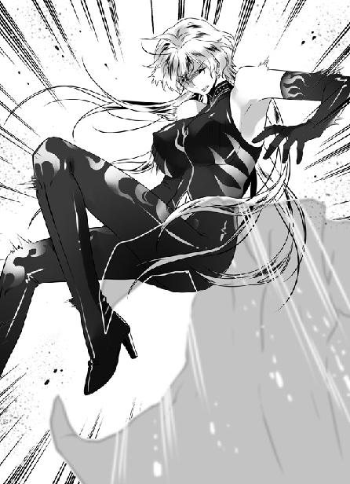
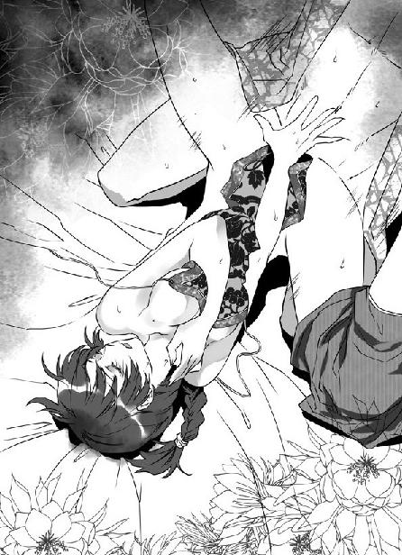

第31集·十面埋伏
江州篇（7/7）
出版日期：2012-02-09
【本集内容简介】
江州前方打得昏天暗地、血流成河，后方大本营却遭到各路刺客侵入，恼得程宗扬满腹怒火！偏生还有太乙真宗的人来捣乱！岂料，来人竟是暌违已久的帮手！
宋军无粮，急迫出战。宋军各将领存了考量己身在朝堂的利益之心，星月湖则是齐心协同、步步进逼。程宗扬的粮战尚未大获全胜，陡出变数——这场“和”谈，谈是不谈？
※ ※ ※ ※ ※
封面人物：惊理

插图：惊理

插图：雁儿
正月十九，夜。
金明寨、定川寨都是宋国军方标准的制式营寨，最前方是一道垒墙时掘出的壕沟，接着是一片十步宽的缓冲区，里面密布鹿角、蒺藜，然后是坚实的寨墙。寨内中央建有望楼，四面各立角楼，寨内营帐井然。一入夜，寨中除了敲击刁斗巡逻的兵卒以外，严禁任何人走动喧哗。
相比之下，位于后方一里外的金明后寨就显得一片散乱。这里收拢着宋军数次战斗败退下来的几千溃兵，还有数目相近的伤患。与贼寇三次交锋，导致宋军伤员剧增，一部分伤员被送往后方的州县，遗留下来的，除了可以痊愈的轻伤员，还有一部分已经没有救治价值的重伤员。
显然宋军没有想到军中会出现如此多的伤兵，不得不临时扩大规模，寨内营帐大多是军中淘汰的旧货，也没有壕沟和寨墙。偌大的营地内，伤员的痛呼和呻吟声此起彼伏，哀声遍野，半夜听来令人毛骨悚然。
然而位于边缘的一处营帐内，气氛却热火朝天。十余名卸了盔甲的宋军聚集在狭小的帐篷内，他们围成一圈，紧张地盯着中间的一张桌子。
张亢的衣服解开半边，袖子捋到肘上，头发、胡须乱篷篷的，看起来像一个不修边幅的兵痞。他的手中扣着一只陶碗，在桌上摇得哗哗作响。众人都瞪大眼睛，屏住呼吸。
片刻后，张亢大喝一声：“开！”
看着露出的骰子，众人发出一阵压抑的低呼。一名军士笑逐颜开，连忙把桌上的铢钱收起来。
张亢骂了句粗话，一边把所余无几的钱袋拍在桌上，粗声道：“再来！”
骰子滚动的声音再次响起，帐内气氛愈发热烈，几乎没有人注意到有人掀帘进来。
刚巡营回来的刘宜孙看到眼前一幕，不禁皱起眉头。昨晚一战，他数度登城血战，最后带着十余名军士安然返回，斩首十五级的战果堪称攻城战中第一功。夏用和亲自颁令，任命刘宜孙为代指挥使，张亢作为副手，主管一个营的兵力。
营级指挥使是宋军序列中的核心单位，到军一级的都指挥使，就脱离了平时的训练，成为军方高级将领。夏用和虽然是一军主帅，也没有正式任命的权力，只能暂时加上一个“代”字。
金明后寨都是溃兵，前段日子刘宜孙被关押，张亢作为王信实际上的副手，已经收拢了不少军士。主帅军令一下，没费多少事就凑满五个都，任命了都头和副都头。
让刘宜孙没想到的是，张亢召够人手，第一件事是拉着手下聚赌。军中一入夜连说话走动都不允许，聚赌更是死罪，如果被人捅出去，麻烦不小。
刘宜孙咳了一声，众人正目不转睛地盯着赌局，对咳声充耳不闻。张亢耳朵微微动了一下，却没有回头。他一把揭开陶碗，接着大骂一声，却是个五点，这一把连最后的赌注也输了个干净。
刘宜孙提高声音，又重重咳了一声。众人听到声音，急忙扔下骰子，跳起来站得笔直，帐内一时间鸦雀无声。
张亢拿着输空的钱袋起身，不等刘宜孙开口把得罪人的话说出来，便大笑两声，“刘指挥！你不是说为大家拿酒吗？怎么才来？我陪你出去看看！”
张亢搭住刘宜孙的肩，笑呵呵把他推到帐外。寒风一吹，两人都收起笑容。
沉默片刻，张亢首先开口，“刚巡过营，情形怎么样？”
刘宜孙重重吐了口气，“壕沟、寨墙都没有建。明天一早，我带人去挖壕沟，再申请一批铁蒺藜。”
张亢道：“用不着。”
刘宜孙压住火气，“这周围都是平原，无险可守。伤兵加上溃兵，有一万多人聚在这里，要壕沟没壕沟、要寨墙没寨墙，贼寇一个冲锋，这些人就成了他乡之鬼。”
“铁蒺藜申请不到的，中军不会往这里投一颗。”张亢道：“你放心，贼寇不会偷袭这里。”
“为什么？”
“单是伤患，每天消耗粮食就将近一千石，他们怎么会轻易消灭掉这些白吃饭的嘴？”
刘宜孙脸色慢慢变化，“你是说中军是故意不设壕……”
“我什么都没说。”张亢打断他，“只不过今天开始，金明后寨所有溃兵的口粮已经减半。”
刘宜孙一下涨红了脸，“他们都是禁军精锐！虽然乱了编制，但补到军中还能打！”
“他们已经被贼寇吓破了胆。”张亢毫不客气地说道：“神臂弓再锋锐，也要人来拉，军中士气全无，纵然上了战阵，也只会一哄而散。”
刘宜孙道：“为何聚赌？”
“若不如此，哪里还有士气？”张亢道：“只要能振作士气，别说是聚赌，我还告诉他们，攻下江州可以大掠三日。”
“张兄，我们是官兵，不是——”
“他们便是匪吗？”张亢打断他，压低声音道：“岳逆大营的军纪你恐怕比我更清楚。两军相争，争的是道义吗？那还打什么，大家选个圣人出来不就完了？刀枪之间、生死之际，道义能替你挡箭，还是能替你多砍对手一刀？”
刘宜孙沉默下来。宋军接连三场惨败，大批军官被贼寇击杀，这些溃兵有的整个军都被打散，军都指挥使、营指挥使，直到都头、副都头这些低级指挥官都尽数战殁。幸存的军士虽然大多没有受伤，但士气全无，随时准备拔腿逃跑。张亢把这些新任的都头召来聚赌，刘宜孙才从他们空洞的眼眸里第一次看到神采。
张亢踢开一堆杂物，用手在土中挖了片刻，摸出一口酒瓮。
刘宜孙怔住了，“真的有酒？”
“这是过年时我从犒赏的大车上偷的，足足五斤。”
说着张亢揭开泥封，饮了一口，然后递过来。刘宜孙脑中乱纷纷的，捧着这瓮偷来的酒不知所措。
“你是指挥使，上了战场要靠他们冲锋陷阵，撤退的时候要靠他们拼了性命为你断后。”张亢道：“想用好这些军士，军规军纪都是屁，能让他们觉得你够义气，信得过你才是真的。有功你替他们记着，有事你给他们罩着，一口酒两个人喝，一口肉大家分着吃，还能带着他们吃香喝辣，他们才会为你卖命。”
刘宜孙慢慢喝了一口，然后用力一抹嘴，捧着酒瓮回到帐内。
张亢堆起笑容，像什么事都没有发生过，粗声大气地说道：“哥儿几个！刘指挥给大伙送酒来了！”
看到刘宜孙真的抱着酒瓮进来，那些军士眼里都放出光来。张亢把掷骰子的陶碗拿来，用袖子一抹，“哗哗”地倒上酒，一边道：“这趟来江州，大伙流血流汗、担惊受怕，一点好处都没捞着。来！一人一碗，都解解乏！”
转眼那只陶碗在几十只手里传过，张亢也不在乎，接过来一碗酒下肚，抹着嘴巴道：“等打下江州，好歹也不能让兄弟们空着手回去。”
说到攻下江州可以大掠三天，众人都有些兴奋。有军士道：“张指挥，江州水泥到底是啥东西？”
“管它什么水啊泥的！”张亢一边斟酒，一边道：“就是铁城，咱们这么多人也把它踩扁了！嘿，你们听说了吗？江州单是商户就有几百家，有的是钱粮！只要进了城，多的不敢说，一人几百银铢的财，我这会儿就敢给大伙写保票！”
众人都抽了口凉气，营里的都头每月军饷也不过十个银铢，打下江州就能发几年的财，不由都为之心动。
“钱算什么，”张亢露出一丝淫笑，“江州的女匪，咱们刘指挥可是亲眼见过的。只要落到咱们手里，少不了兄弟们的好处！”
军士们一碗酒下肚，这会儿听了张亢的话，脸都涨得通红。有军士道：“刘指挥，真的有女匪？”
一名军士道：“昨晚我跟着刘指挥登城，亲眼见的！嘿，活生生一个大美人儿！”
“有多好看？”
“比你见过的女人加起来都好看！”
军士们哄笑中，忽然有人道：“张指挥，咱们还见过一个女匪，在烈山的时候……”
“可不是！”有人接口道：“说是新娶的媳妇，脸蛋那么标致，跟仙女一样。”
“是妖女吧？从匪的都是妖女。”
张亢狞笑一声，“从逆女匪，抓住了不是杀头就是发配教坊司，咱们就是玩了，谁能说个‘不’字！”
帐中的气氛顿时炽热起来，刘宜孙想说什么又闭上嘴，张亢暗中踩了他一脚，刘宜孙一咬牙，拿过酒碗喝了个干净，粗着嗓子道：“当兵打仗，求的就是立功受赏！跟着我！不会让兄弟们吃亏！干了！”
帐内众人兴致不减，这些都头有的昨晚跟着刘宜孙登过城，还有在烈山见过那队可疑的车马，这会儿不知详情的人拉着打听，见过的兴致高昂，三三两两说得热闹非凡。
※ ※ ※ ※ ※
“啊啾！”
江州城中，小紫小小地打了个喷嚏，浑然不知有人正在谈论自己。她穿着一袭紫色暖袍，席地坐在熊皮脚踏上，手臂依着一口描金彩绘的木箱，白净的手指轻轻敲着箱面。烛光下，精美绝伦的五官如珠如玉。
雁儿坐在她脚旁，正穿针引线地缝着一只布娃娃，一边小声道：“拉芝修黎是异族，不知道生辰八字。芝娘姐姐又不肯告诉我，说不能问女人的年龄，这只巫毒娃娃怎么也做不好……”
小紫在箱上叩了几下。箱盖轻轻打开一条细缝，递出一张黄纸，上面鲜红的字迹犹如朱砂，写着一组干支。
“缝在里面吧。小心些，别让上面的东西掉了。”
那朱砂般的红色都是鲜血，上面黏着几根细细的毛发。雁儿将黄纸卷起来，缝进娃娃，然后小声念了段咒语，又用针在指尖刺了一下，挤出一滴鲜血，点在布娃娃眉心。
“好了。”小紫道：“试一下吧。”
雁儿拿起针，在布娃娃上轻轻刺了一下，箱内顿时发出一声压抑的低叫。雁儿张大眼睛，“真的呢！”
小紫拿过娃娃摆弄了几下，忽然抬起眼，望向紧闭的窗户，唇角露出一丝甜美的笑意，笑吟吟道：“有人来了呢。”
院中传来一声如树叶飘落般的轻响，一道黑影宛如一缕轻烟，从对面的檐角飘落，接着朝窗口掠去。电光石火间，耳边传来空气压缩般的轻微爆响，一只拳头从黑暗中伸出，带着凌厉无匹的气势打在黑影的胸口上。
黑影诡异地一扭，身体像面条一般扭曲成不可能的角度，避开这一拳，接着手腕一翻，亮出指根套着的钢环，握拳与那只拳头硬拼一记。
双拳相接，黑影指上的钢环寸寸断裂。他浑身剧震，踉跄着退开，失声叫道：“太乙真宗——”
话音未落，便看到那只拳头抬起，如蒲扇般的大手一张，抓住他的面门。
黑影被抓得悬在空中，叫不出声来，只见他双足乱踢，接着“咯”的一声，脖颈被那只大手拧断。
这几下兔起鹘落，雁儿还不知道发生了什么事，她听到外面的异响，想推窗去看，一回首却不见了小紫，只有那只布娃娃放在案上。雁儿诧异了一下，然后慢慢推开窗户。
刚才出手的人已经消失不见，院中只剩下一具尸体，如软泥般匍匐在地，脖颈不自然地扭到一边，两眼大张，充满着惊讶和恐惧。
雁儿打了个冷颤，接着便看到了小紫。
小紫披着轻柔的暖袍，长发散开，一只白玉般的手掌微微抬起，掌心放着一只血迹斑斑的玉瓶。
冥冥中仿佛飘来一阵若有若无的铃声，夜风掠过，卷起庭中飘落的枯叶。忽然间，那具尸首似乎动了一下。雁儿捂住嘴巴，在她惊恐的目光下，那具脖颈被折断的尸首慢慢站起身，步履僵硬地走进旁边一处房间。
小紫回过头，竖起手指，放在红润的嘴唇前，做了个噤声的手势，然后露出一个狡猾的笑容。
※ ※ ※ ※ ※
水香楼高朋满座，烛影摇红，席列八珍，奢华的场面丝毫看不出正处在兵临城下的险境。
“南荒的商路？”张少煌端详着手中一颗龙眼大的湖珠，忽然转过头，“石胖子，你们金谷石家当初发财，就是靠这条商路吧？”
石超面露尴尬，含糊道：“那……那是几十年前的事了。”
金谷石家是自石超的祖父一代才开始发迹，石超的祖父曾任竞州刺史，十余年间便富可敌国。但知情人都知道，他靠的并不是经营，而是暗中指使自己州中的军卒截杀路过的商人。这种不光彩的事，石超当然不肯多提。
阮宣子握着酒樽，不屑道：“商贾之辈，皆是逐利的小人！”
程宗扬脸上淡然，心里却在苦笑。以前云如瑶就对自家的商贾身份十分敏感，刚才他提出入股，这些世家子弟颇有几个露出不以为然的神色，显然骨子里仍看不起商人。但如果没有拉他们入股的把握，程宗扬也不会开口自取其辱。
萧遥逸道：“阮老二，你这话我可不爱听。商人怎么了？没商人你能用上宋国的丝绸、昭南的象牙、唐国的玉佩吗？还有这酒，都是从商人手里买的。”
阮宣子道：“商贾不事生产，尽是些买低卖高的刁猾之徒，世称之为‘五蠹’，岂是吾辈所为？”
自己开口只会越描越黑，程宗扬索性不说话，只拿着酒觞把玩。
桓歆道：“阮二，你不想发财是你的事，你哥还在这儿呢。”
阮遥集披头散发，喝得醉醺醺的，搭在婢女肩上的手指晃了晃，“张侯、谢兄，你们商量好，我听你们的。”
“钱财都是身外之物，要紧的是有酒、有美女。”谢无奕道：“程老板，你的生意若带一家金钱豹，算我一份！”
张少煌将那颗明珠往酒中一丢，张口服下，洒然道：“这样的好事，少不得要占你五股，咱们十家，一家半股。钱也不说多的，每家两千金铢。”
桓歆第一个叫好。十家之中，程宗扬不用说，兰陵萧家、陈郡谢家、清河张家、谯国桓家表态支持，已经占了一半，石超虽然没有开口，但他入股的心思只怕比程宗扬自己还热切，剩下几家向来以谢无奕、张少煌、萧遥逸马首是瞻，见状也纷纷附和。
程宗扬笑道：“哪儿能要兄弟们的钱呢？诸位都是干股，一文钱也不用出！等临江楼建好，兄弟们每月聚饮一次，年底只拿分红就行。”
张少煌笑道：“这不好吧？整日白吃白喝，我张某无所谓，小侯爷的面子怎么过得去？”
萧遥逸道：“得了吧，我脸皮比你还厚。程兄，这股我们就白拿了。不过兄弟们，丑话说在前头，既然入了股，盘江程氏的生意就是咱们自家的生意，谁要胳膊肘往外拐，当场打折！”
谢无奕沉着地点点头，“此言甚是有理。”
众人哄笑道：“小侯爷说的不错！”
程宗扬要的就是这句，拱手道：“那就多谢各位了。”
谢无奕道：“谢什么谢？给我找两个绝色是正经的。”
程宗扬一口应承下来。众人都出自士族，家资豪富，也没把这当回事，转头放在一边，又重新欢饮。
石超倒是存着心事，趁着劝酒的机会悄悄道：“程哥，入股的钱我先拿出来，总不能让你吃亏。”
“石胖子，你够有钱啊，那可是两万金铢。”程宗扬笑道：“说吧，你看中什么了？”
石超讪讪道：“水泥的生意……”
程宗扬笑道：“这你得和小侯爷商量了。”
石超立刻闭上嘴，虎口夺食这种事，打死他也不敢干。
“水泥在小侯爷手里，分出来一些让你经营也不难。你们石家在哪儿生意做得顺手？到时用你的人，利润归你，不过要挂盘江程氏的牌子。”
“这个好说！”石超立刻答应下来，“除了晋国，我们石家在唐国也有不少生意。”
两人在席间三言两语便定下交易，程宗扬把江州水泥在唐国的经营权交给石家，石超则负责在唐国设立六家商号，全部挂上程氏的招牌，垄断水泥的经营，利润的八成全归石家。这样程宗扬凭空得了六间商号，石超也得了一份丰厚的收入。
石超毕竟是商人底子，只在江州城头看了一圈，就知道水泥一旦投入市面，需求量几乎是无穷无尽，单是唐国的生意，换一个金谷石家也不是难事。
宴饮到了子时才渐入佳境，众人怀香抱玉、竞相豪饮。程宗扬无意久坐，寒暄几句便要离席。
萧遥逸重伤未愈，跟他们胡混两天也有些吃不消，正和程宗扬打着眼色准备一道走，却被张少煌看见，死活拉住不放，要和他掷骰比酒。
萧遥逸只好坐下来，咬牙切齿地握住骰子，发狠要让张少煌喝得把肠子吐出来。
石超起来要送，兰姑挽住程宗扬的手臂，笑道：“奴家来吧。”
从脂香粉浓、酒肉杂陈的宴席出来，程宗扬吸了几口清冽的空气，压下翻滚的酒意，头脑略微清醒了些。
现在股份已经扩充到二十股，除了当初在南荒的几个人，又加入星月湖和建康世家两股势力。也许星月湖和那些世家都没当回事，但此事程宗扬已经盘算许久，并不打算含糊过去，每年拿几个钱作为分红就算完了。
包括云氏和各世家在内，他准备让每位股东都出一个人，参与监督账目。如果单是分红，倒像是变相的贿赂，借助那些世家子弟的势力缴纳保护费，反而让他们看轻了。只有让他们参与进来，才会把这真正当成自己的生意。
不过各家参与的生意仅限于水泥，织坊是死丫头的，珠宝生意是死老头的，都不会让他们插手。水泥的生产和晋国境内的销售都归星月湖，唐国的销售由金谷石家的人打理，其他四朝，自己准备如法炮制，从朝中寻找合作伙伴。
程宗扬相信，只要江州不陷落，一年之后，水泥生意的巨大利润足以令王茂弘这样的老狐狸都为之惊叹。自己可不希望到了那时，朝廷一道旨意下来，把生意收归官营。这种事在六朝屡见不鲜，也是晴州商会极力抨击的做法，但一般商家，谁又能扛得住官府的势力？
程宗扬让各家白得干股，同时监督账目，并不是大发慷慨，而是留下扩股的余地。各家既然没出股金，自己要再扩几股也没得话说。如果能把六朝的当权者都拉入其中，众人的利益透过生意捆绑在一起，盘江程氏才能稳如泰山。有所失方有所得，这样的大生意如果斤斤计较，想独占利润，历史上石超祖父的下场就是最好的教训。
吴战威在外面等候，见到程宗扬便迎上来。程宗扬玩笑道：“两个时辰你就这么干等着？兰姑也太不晓事了！”
兰姑笑道：“公子可冤枉奴家了，是吴执事不肯，非要在外面等着。”
“吴大刀，你现在眼界儿高了啊，楼里的姑娘你都看不上了？”
吴战威“嘿嘿”笑了一声，没说话。
兰姑抿嘴笑道：“楼里刚新得了几个姑娘，不比往常。依奴家看，吴执事非是看不上，多半是出门时柳姐有交待，不敢不听。”
程宗扬大笑道：“让你说中了，吴大刀脸红了哈！”
吴战威嘴硬地说道：“程头儿，你别听兰姑瞎说，我那是让着她！”
三人打趣几句，程宗扬随口道：“城都被围了，楼里怎么又新来了姑娘？”
“那几位爷带的家姬有不合心意的，随手卖到楼里来的。”兰姑道：“反正江州城就我们一家院子，我们不买也没人会买。”
“这有点不合适吧？”
兰姑笑道：“公子可看错了，那些姑娘能到楼里，都高兴着呢。比起来，我可比她们原来的主子好多了。”
程宗扬露出苦笑。兰姑的话或许有些夸大，但对于那些不受宠的普通家姬来说，平常都是充当宴客的娱乐品，在府里和在楼里，也差不了太多。
程宗扬想了一会儿，“还是不好。兰姑，你问一下，她们有愿意回家的，就给她们路费，让她们回家。咱们又不缺这几个钱。”
“公子听奴家说一句如何？”兰姑道：“当日公子打发那些姐妹回家，却是害了她们。这些日子我听说，那些姐妹有些刚到家又被父母兄舅卖掉，有些回家找不到落脚处，又折了回来。”
“哪儿有这样的父母？”
“也不能全怪父母，有些姑娘用过锦衣玉食，吃不惯家里的粗茶淡饭，自愿卖到大户人家为妾也不是没有的。况且那些人家甘卖儿女，往好里说，也是养不起的。”
程宗扬想起了碧姬。即使在自己来时的世界里，女性地位早已不再低下，为一个手提包卖淫的也不在少数。所谓的“被逼”、“无奈”，往往是自甘堕落的幌子。对有些女人而言，布衣粗食的良家妇女，还不如锦衣美食的娼妓来得合意。
兰姑道：“话又说回来，公子若把她们送走，那些公子爷的面上也不好看。”
程宗扬心下自嘲：人家自己都愿意，自己还充什么圣人呢？
“这样吧，告诉她们，愿意做就做，不愿意的也别勉强。愿意留在楼里的给她们支一份钱，等她们赚够身价，愿意自己赎身的，就让她们赎身。能找到合适人嫁的，楼里再补一份礼金。”
程宗扬想的是，既然她们愿意当娼妓，自己也不用再自作多情。兰姑听到却揽衣跪下，诚心诚意地给他磕了个头，“我可代姐妹们谢谢公子了。”
程宗扬笑着把她扶起来，“用得着这么大礼吗？”
“公子不知，楼里的姑娘没有拿钱的规矩。每日不打不骂，好茶好饭养着就是了，到了年老色衰，被楼里开恩打发出去便算好的，哪里还能拿钱呢？有公子这番心意，咱们楼里的姑娘都该给公子立长生牌位了。”
程宗扬无言以对，良久才道：“好好待她们，别让她们受委屈。”
程宗扬走出几步，忽然又转过身，笑道：“还有，服侍咱们自家兄弟的时候，让她们用心些。”
兰姑笑道：“奴家省得。”
※ ※ ※ ※ ※
夜色如墨，东城的方向隐隐传来喊杀声。宋军大规模的攻城战虽然停止，小股的袭扰仍持续不断。
星月湖大营的反击针锋相对，派出十人左右的小股队伍从堡垒背面跃下，趁夜色偷袭宋军的营地。
自从铁壁相公李士彬被诈降的贼寇刺杀，宋军就不再收留任何俘虏。而星月湖大营的反击多是以击伤为主，留着伤患消耗宋军的粮食。双方都在想尽办法扰乱对手，看谁先坚持不住。
靠近南门一带的房屋有些被投石机砸毁，东城因为兽蛮人突破城墙，也有些地方受损。相比之下，临江的西市始终风平浪静，小狐狸为自己挑住处的时候，多半连这点也想到了。
程宗扬一路想着心事，没有理会周围的动静。忽然人影一闪，一直跟在后面的吴战威跨前一步，挡在他前方，反手握住刀柄。
自己修为比吴大刀高出一截，但论起江湖经验，拍马也赶不上。吴战威已经擎出他的厚背大刀，程宗扬才反应过来。客栈静悄悄的没有丝毫声息，空气中也没有任何异常，不过程宗扬有一项本领是吴战威作梦都想不到的，他太阳穴上的伤疤微微一动，捕捉到一丝淡而又淡的死气。
出事了！程宗扬心头一紧。
吴战威如猛虎般纵起身，用肩头一扛，门闩断裂，大门洞开，“砰”的一声撞在墙上。接着大刀挥出，已经与里面的刺客交上手。
躲在暗处的刺客从头到脚都蒙着黑色皮革，只在头罩上挖了两个洞，露出一双眼睛，嘴部开着一个小孔，夜色下分外诡异。他用的长刀以染料涂黑，身上湿漉漉不住滴下水来，显然是从水中进入的江州。
江州的城墙上现在每隔几步就有一名星月湖军士把守，说句“连苍蝇也飞不进来”并不算夸张。想不被察觉地进入城中，只有水下这一条路。
那人出手凌厉，修为在四级以上，已经超过一般的江湖好手，但吴战威毫不示弱，竟和他斗了个难解难分。
这倒是个意外之喜。程宗扬一直担心组建直属营，凭吴战威的身手不足以服众。虽然指挥官不一定必须是冲锋陷阵的猛将，但星月湖大营的水准放在那儿，无形中提高了修为的标准。昨晚的攻城战，吴战威显露的身手就相当不错，但当时城头混战，没有此时单对单来得直观。看样子吴大刀和易彪、吴三桂交流多时，修为已经突破第三级，进入入微的境界，放在星月湖大营也不算太差。
刺客不止一人，这边刚交上手就有两道人影从客栈里悄然掠出。他们一言不发便亮出兵刃，准备合攻吴战威，却见一个年轻人排门而入。
程宗扬笑眯眯道：“大半夜的，三位是走错门了吗？江州衙门我可认识人，只要我一句话，一会儿就把你们都扔牢里，挨个打一顿板子，信不信？”
其中一人阴森森道：“死到临头还不自知！”
两人同时向程宗扬攻去。程宗扬笑容不改，等两人到了身前，双臂一振，从背后擎出一对钢刀，接着一招虎战八方，顷刻间劈出十余刀。
两名刺客都是四级上下的修为，一交手才知道这个年轻人不是好惹的。刚才发声那人突然呼哨一声，接着攻势大涨。
程宗扬脸色微变。这帮刺客不只三人！死丫头的焚血诀虽然已经解除，但气血消耗过多，万一遇袭，凭她自己怎么也护不住梦娘和雁儿两个弱女子，何况还有卓云君这个心怀叵测的贱人。
客栈原本有星月湖军士守护，但连日来星月湖大营多次出击，伤亡不小，程宗扬早已把守卫的军士调走，补充一线的战斗力。一旦刺客闯入后院，死丫头就危险了。
“吴大刀！”
吴战威应了一声，横身过来，将三人的攻势尽数接下。程宗扬压力一轻，立刻脱身掠往后院。客栈后面的小院房门紧闭，程宗扬顾不得破门，直接纵身攀住墙头，翻身而入。
※ ※ ※ ※ ※
刚掠入院内，程宗扬便听到侧边风声一紧，一柄涂黑的长剑从旁递来。百忙中程宗扬先往楼内看了一眼，见小紫房中灯火无恙，顿时放下心来，一边横刀挡住偷袭的剑锋，一边叫道：“死丫头！小心刺客！”
话音刚落，小紫房中的灯火突然一暗，被劲风扑灭，程宗扬眼睛险些瞪了出来。那刺客涂黑的长剑织构成绵密剑网，想将程宗扬截下，程宗扬一招猛虎插翅，双刀连斩，硬生生破开剑网，接着耸身跃起，甩开刺客。
程宗扬飞身掠过庭院，脚步刚踏上台阶，楼内突然弹出一枚利刺。程宗扬刀柄一错，用柄尾磕中刺尖。却见那枚利刺旋转了一下，并没有飞出，接着有一股尖锐的真气透入体内，在经脉间狠狠扎了一下。
程宗扬丹田气轮疾转，化去侵入的真气，一边凝神看去，才发现那支娥眉刺是被人拿着，只不过那人戴着黑色的皮手套，猛然看去，仿佛与黑暗融为一体。
那人修为不在自己之下，功法又诡异出奇，程宗扬攻势受挫，只差了一步没有登上台阶，一面退开半步，一面放声叫道：“死丫头！”
随着他的叫喊，楼中浮现出一个黑色身影。那人也穿着全副的皮制水靠，黑色的皮革紧贴着肌肤，胴体丰乳翘臀、凸凹有致，却是一名女子。
身后发出青砖碎裂的声响。吴战威一脚将青砖踹得粉碎，功力全出，破开三人的合击，硬闯进来。
三名刺客并没有追击，而是三面散开，把两人围在当中。另一名使剑的刺客则跃上墙头，截断两人的退路。
加上使娥眉刺的女子，现身的刺客已经有五人。外面四名刺客都是四级上下的好手，那名女刺客的修为只怕在第五级中阶，比自己还高出半筹。这样的实力，只凭自己和吴大刀两个，自保都难。更让程宗扬提心吊胆的是，楼里至少还有一名对手，死丫头一声不出就被制住，那人的修为不知道高明到了什么程度。
吴战威倒没想那么多，只要程头儿没事就够了。他横刀护在程宗扬背后，忽然“咦”了一声，低声道：“程头儿，他们穿的好像是咱们家的东西。”
可不是吗？这些刺客的水靠浑然一体，没有任何纽扣和系带，如果不是用了拉链，除非他们是从娘胎里带出来的。自家出的水靠，却被刺客用来潜水入城刺杀自己，到哪儿说理去？
程宗扬深吸一口气，然后舌绽春雷：“楼内是何方高人！还请现身！”
江州城并不大，程宗扬这一嗓子用足真气，估计半座城都能听到，可一声吼出，却如泥牛入海，连半点回音都没有。
那女子冷冷道：“别妄费心力了，这院子已经被我们布下禁音术，你叫得再响十倍，外面也听不见。”
禁音术不算什么高明的法术，好水川一战，星月湖大营的法师把整个战场的声音尽数隔绝，比这个强上何止十倍？在禁音术的范围内，别说大喊大叫，就是天崩地裂，外面也未必能听见。
看来想喊来援兵是指望不上了，程宗扬沉声道：“在下与各位素不相识，不知今晚有何指教？”
初时说话的刺客阴森森道：“听说江州被星月湖的人占据，果然有些门道。九眼虫、鬼道人、赛无常、白骨罂粟……这几日间就有四五起人陷身江州，星月湖真是好本事。”
吴战威知道程宗扬对江湖上的事情不熟，低声解释道：“他说的几个都是杀手。九眼虫和赛无常名声不响，鬼道人是五级坐照境的高手，要请动他至少要几百金铢。白骨罂粟是两个人——白骨先生和罂粟女，两人倒不是夫妻，只不过时常联手杀人，性情残忍，论名头比其他几个都大。”
自己在外面和宋军打生打死，天知道后方还有这么多事，各路杀手刺客像赶集一样往江州凑。
令程宗扬不解的是，自己怎么一点风声都没听到？就算自己没听到，孟老大他们也该听说吧？满城都是星月湖的人，一群刺客在城里待了这么多天，那帮星月湖的猛人就算全是瞎的，也该闻出味儿来了。
程宗扬一边思索，一边打着哈哈道：“这几天事忙，没想到家里来了这么多客人，有失招待，莫怪莫怪！哈哈！”
死丫头还在他们手中，程宗扬不想一张嘴就放出“敢动她一根头发杀你全家”之类让人家不动手都不好意思的狠话，打着哈哈道：“诸位身手不凡，一看就是江湖知名的高人！大家往日无仇、近日无怨，多半是误会，既然到了江州，只要在下能帮上的，诸位尽管开口！只不知诸位高姓大名？所来江州何事？”
男子哼了一声，“好教你知道！我们便是——”
“何必啰嗦，”那女子打断他，冷冰冰道：“反正不留活口，让他死了也做个糊涂鬼。”
好狠的贱人！程宗扬肚子里大骂，脸上却收起嘻笑，疾言厉色地说道：“明人不说暗话！诸位来江州不就是为了那处绝世宝藏吗？只要你们放人，宝藏在下立刻——”
听到这年轻人说到宝藏，众人都露出惊奇的目光，凝神听他的话语，没想到那年轻人话只说了一半，突然身形一闪，如鬼魅般向后掠出，左刀劈中一名刺客的长刀，右刀刀背同时砸在他的腕骨上，接着身形一转，展臂揽住那名刺客的脖颈，提刀架在他颈中。
刺客的长刀这时才“锵”的一声落地。程宗扬左刀架在刺客颈下，右刀提起，指向众人，“现在大家可以谈谈了，你们放人，我保证你们安全离开江州，此事就此揭过。”
“好个狡猾的小子。”那女子寒声道：“杀了他！”
男子轻轻一拉她的衣袖，低声道：“他说的宝藏……”
“蠢货！”女刺客道：“连诳你的话也听不出来吗？”
隔着面罩还能感觉到那男子脸上一红，讪讪地松开手，接着场中传来一声惨叫。
程宗扬也不含糊，那女子一开口，便一刀挑断那名刺客右臂的筋腱，接着右刀一顿，狠狠斩断他的小腿。既然没得换，先废掉他们一名好手是正事。
那刺客发出凄厉的惨叫，左手抱住鲜血狂涌的右腿，身体像虾米一样弓起。程宗扬抬脚把他踩在地上，“鬼叫个屁啊。她是不是借过你的钱没还？这么急着要把你灭口？”
“小子好辣手！”刚才说话的男子飞身而起，还隔着丈许，凌厉的刀风便直劈过来。
“我来！”吴战威大吼一声，扑向对手。
紧接着另一名刺客从后袭来，单刀斜挑，刺向程宗扬腰侧，想从他手中救出受伤的同伴。
四人同时动手，那女子也从阶上掠出，两枚娥眉刺在掌心转如光球，攻向吴战威。
吴战威的身手和那名被程宗扬砍伤的刺客在伯仲之间，这会儿刺客用的是上驷对下驷的手法，两名身手最高明的先联手解决了吴战威，便可以一起对付那个年轻人。
程宗扬明知道他们的打算，可分身无术。来袭的刺客身手比自己脚下那个还强上几分，自己刚才用上太一经，靠着鬼魅般的身法偷袭得手，这会儿正面交锋，虽然有九成把握能赢，但等自己干掉对手，足够吴大刀死两次的。
程宗扬脚下用力，将受伤刺客的一排肋骨踩断，借势跃出，没去解救吴战威，而是直接冲进楼内。擒贼先擒王，跟他们缠斗才是下策。
一股冰寒的真气迎面袭来，自己的五虎断门刀刚一劈出，就仿佛被一团寒风冻住，威势陡降。程宗扬挽出两团刀花，奋力从寒风中挣脱，接着身形后挫，又被逼到阶下。
一个瘦长的人影从楼中跨出。水靠本来就是贴身而制，可穿在他身上仍显得空荡荡的，似乎能再塞进去一个人。接着后面又出来一人，他一手一个拖着两名女子，面罩间露出的眼睛仿佛摇曳的鬼火。
程宗扬的心直沉下去。这两人的修为都不在那名女子之下，六人联手，别说救人，连自己恐怕都逃不出去。
这时提剑的刺客也从墙头跃下，加入战团，程宗扬与吴战威各自以一敌二，顿时陷入苦战。
那个瘦子似乎是刺客的首领，他抓住一名女子的头发，瞧了瞧她的面孔。雁儿脸色雪白，手中还抱着一只刚做好的布娃娃。瘦刺客只看了一眼便把她丢在一旁，然后拽起另一名女子的头发。昏暗的光线下露出一张浓妆艳抹的面孔，她的眼神惶恐而迷惘，身体倚在地上，软绵绵没有一丝力气。
即使在恶斗中，程宗扬仍忍不住想大笑。早知道死丫头不会那么容易被人擒住，这些刺客倒也好本事，居然找到了数日不见的卓贱人。
瘦刺客没有理会庭中的激战，问道：“是她吗？”
鬼眼刺客托着卓云君的脸颊道：“年纪有些像。”
瘦刺客戴着皮手套的手指挑起卓云君的下巴，刺骨的寒意使卓云君身体一阵战栗。
瘦刺客的声音像毒蛇一样钻入耳内，“你是不是姓韦？”
卓云君颤抖着摇了摇头。
鬼眼刺客道：“不是你，何必躲在箱子里？”
卓云君哑口无言。
瘦刺客阴声道：“太尉府拿出两千金铢的赏格，我还以为这逃奴是什么天姿国色，原来就是个娼妇的模样。”
雁儿被刺客拖出来，一双妙目就望着程宗扬。眼见主人在两名刺客合击下接连遇险，她忽然抓住布娃娃，用尽全身力气一拧。旁边的卓云君在凄叫声中，身体像不受自己控制一般，抬掌拍出。
鬼眼刺客正去扯她的衣服，手臂被她拍中，皮制的水靠立刻多了无数细小的孔隙，鲜血随即喷出。
“斩蛟沙！”痛号声中，鬼眼刺客一把拧断自己的小臂。
这个下贱的娼妓明明手无缚鸡之力，这一记斩蛟沙却精纯无比，轻易破开自己的护体真气，透骨而入。如果不断臂求生，斩蛟沙循着血脉进入心脏，就是大罗神仙也无力救治。
卓云君一掌拍出，身体像透支完所有力气一样，软伏下来。瘦刺客面罩间的双眼露出阴狠目光，撮指为掌，斩在卓云君肩头。
雁儿的巫毒娃娃本来能操控卓云君迎敌，但她只跟小紫学了一点皮毛，卓云君一击之下便失去所有力气，随即被瘦刺客一掌拍飞。
这时檐下传来一声轻笑，接着一道娇嫩的声音笑道：“打狗，别忘了看主人呢。”
轻笑声中，一个少女从对面的房中出来，施施然走下台阶。她声音清丽，一字一句都仿佛晶莹的珠玉在舌尖齿间跳动，说不出的柔美动听。此时那少女轻袍缓带，唇角带着一丝笑意，娇美的五官精致无匹，一路迤逦行来，就像一株夜色下行走的玉盏铃花，风姿摇曳，吸引了所有人的目光。
缠斗的六人蓦然分开，程宗扬肋下多了两道伤口，都不深，但吴战威左臂挨了一刀，几乎露出骨头。
四名刺客也没占多少便宜，两人身上带了伤，虽然不重，但再打下去也不免吃力。
程宗扬虽然痛得直咬牙，心情却愉悦之极。他按住伤口，禁不住大笑起来，“死丫头！都是你干的吧！”
小紫白了他一眼，“大笨瓜。”
瘦刺客一摆手，“男的杀了，女娃留着。”
鬼眼刺客已经止住血，咬牙道：“这两个贱人也留着！我要活剥了她们！”
“太好了！先从你旁边那个老女人开始剥吧。”小紫拍手笑道：“我正好想做一面人皮鼓呢。卓美人儿的皮不够用，再用你的好了。”
“小贱人！”断臂的鬼眼刺客嘶声说着，突然“呸”了一口，一道乌光从他的口中射出，直射小紫面门。
小紫抬起白嫩的手指，笑吟吟一点，空中仿佛传来一声凄厉的鬼哭，一只恶鬼从虚空中探出头来，一口吞掉乌光，然后消失不见。
几名刺客都戴着面罩，看不出脸色，但每个人的目光都跳了一下，最开始说话的男子忍不住叫道：“幽冥宗！”
瘦刺客身上的皮衣猛然收紧，紧贴着身体，接着像一根竹竿般直纵起来，一手指天，开口道：“玄！”
庭院中寒意大作，空气仿佛结出层层玄冰，连地上铺的青砖都凝出霜花。
吴战威忽然叫道：“辰星流变，化为七妖！他们是辰星七妖！”
“还有点眼力。”女刺客声如寒冰，“既然知道我们的身份，还不受死？”
“我知道了，”小紫拍手笑道：“那个瘦子是辰星流变中七颗妖星的第三星拂枢，擅长玄冰指。鬼眼的是第四星灭宝，擅长暗器，你是第六星惊理，辰星七妖一下来了三个呢。”
惊理冷冷道：“你知道的还不少呢。”
小紫笑道：“我还知道辰星流变的七妖以外，还有岁星流变、荧惑流变、填星流变和太白流变，共三十六颗妖星，都属于龙宸外围。我还知道姐姐出自瑶池宗，因为杀了自己的师妹才加入龙宸。姐姐原来用的是剑，为了掩饰以前的身份才换成娥眉刺，武功也因此下降了一成。”
女刺客的脸上戴着皮罩，看不出神情变化，手中的娥眉刺却忽然光芒大作，接着她飞身掠出。
小紫抬手娇叱一声，绕在臂上的珊瑚臂钏犹如一条赤红的小蛇，倏然飞出。
臂钏上比往日多了环状排列的五个凹孔，此时相邻的两个凹孔中嵌着一红一黄两颗宝石。随着小紫的娇叱，两颗宝石各自发出一道淡淡的光芒，彼此间不住流动。
娥眉刺与臂钏一触即分，臂钏飞回小紫臂上，女刺客也退回原处，这一击却是不分胜负。
女刺客胸部微微起伏，眼神愈发寒冷，“黄泉玉！昭旦、昭明原来是在你手里吃的亏。”
程宗扬一头雾水，“昭旦、昭明是谁？”
“虞氏姐妹啦，隶属于龙宸五行流变的荧惑那一组。”
程宗扬上下打量着她，“死丫头，你对龙宸还知道多少？”
小紫狡黠地眨了眨眼睛，“只比你多一点点。”
“冰！”瘦刺客拂枢冷喝声中，庭内温度再降。
程宗扬体内的真气仿佛感应到他的一喝，原本顺畅自如的运转立刻变得艰涩起来。
吴战威的眉毛、发梢都结出冰渣，龇牙咧嘴地说道：“玄冰真诀！专克内家真气！娘的，这次我吴大刀可开眼了！”
程宗扬一提双刀，“干他！”
小紫忽然扬声道：“喂，该你了！”
程宗扬一怔，接着听到屋檐下一声傲慢而蛮横的冷哼，心头顿时涌起一阵狂喜：竟然是这鸟人来了！
那声冷哼之后，却没有人出来。眼看庭院中阴风刺骨，拂枢玄冰指的威力不住攀升，小紫双手叉腰，抬起下巴，“武二！再摆架子，我让你一辈子见不到花苗的女人！”
随着这声娇叱，屋檐下探出一个长大的身影，无论手臂、腰腿都比常人长出一截，雄壮无比。接着那人头颈一伸，露出猛虎般的头颅和颈后斑驳的虎纹，神情凶悍，正是南荒一别后就消失不见的武二郎。
“花苗的女人跟二爷有个鸟关系！”武二郎先凶狠地朝小紫吼了一声，找足面子，然后大喝一声：“滚！”
暴喝声中，一颗足有西瓜大小的光球轰然飞出，吞噬了那名瘦刺客的身影。庭中密布的寒意像被滚水泼上一般瞬间消失。
片刻后，光芒散去，拂枢半边身体仿佛被烈焰烧化，变得干枯而扭曲。他发出一声非人的嗥叫：“九阳神功！九阳神功！”
嚎叫声中，拂枢身形立生变化，半边干枯的躯体迅速缩小。他一边施术封住伤势，一边拖着受伤的躯体朝屋顶飞去。
武二郎迈开大步，凌空跨出，然后大手一挥，拽住拂枢的小腿，接着往地上一抡。“砰”的一声巨响，被人影砸中的青砖尽数粉碎，周围方圆丈许的青砖同时跳起，被武二郎这一摔尽数震飞。
就是铁人，被武二郎这一摔也要散架，何况是个活人？拂枢身为龙宸三十六颗妖星的顶尖杀手，一身修为不比武二郎逊色太多。但九阳神功是世间一等一的神功，他的玄冰真诀威力远远不及，一交手就被纯阳的九阳神功完全克制，如同积雪遇火，一败涂地。
武二郎扔下只剩一截的小腿，牛气哄哄地抱着肩过来，劈头盖脸朝程宗扬一通痛骂：“小子！你玩的什么刀？二爷的刀法是这么练的吗？二爷的脸都被你丢尽了！”
“一个破五虎断门刀换我一门九阳神功，你还有脸说！”提起这事，程宗扬气就不打一处来，“这笔生意我算是赔大了，五虎断门刀就那几招，你还教得七零八落，那个虎踞空山怎么使的？我这半年都没练顺过！”
“废物！”武二郎一把抢过双刀，“瞧仔细了！”
武二郎双臂一展，双刀还未出手，气势就如猛虎出谷，奔腾而起。周围几名刺客被刚才的一幕惊呆了，这时纷纷守住门户。
武二郎人随刀走，双刀犹如猛虎咆哮的牙齿，一口便将一名刺客连人带刀撕得粉碎，接着旋身将那名使剑的刺客砍翻。另一名刺客怪叫一声，转身就逃，武二一步跨出就有丈许，轻易追上，把他砍倒。程宗扬正看得高兴，忽然“咦”了一声。
自己的生死根对死气极为敏感，死者修为越高，死气也更浓郁，这些好手都是提升自己修为的大好材料，奇怪的是庭中死者不少，额角的生死根只是微微一动，吸收到的死气比常人还少。
程宗扬愕然间，已经有四名刺客死在武二郎手下，剩下的鬼眼刺客灭宝和女刺客惊理分头掠出，却被吴战威和小紫分别截住。
程宗扬顾不上这些，他眉头紧锁，蹲下来翻检那几具尸体。不知道的还以为他在寻找什么线索，其实他只是想找出自己生死根失效的缘由。
※ ※ ※ ※ ※
鬼眼刺客灭宝失去右臂，吴战威也伤了左臂，原本实力悬殊的两人一时间斗了个难解难分。
另一边，小紫与女刺客的交手更像是话家常。小紫笑道：“姐姐的身材真好呢，虞家姐妹的身子人家也见过，好像还及不上姐姐呢。”
“小贱人，知道我们是龙宸的人，还敢下手？”惊理森然道：“知道龙宸的报复手段吗？”
“知道哦。”小紫眨了眨眼睛，天真地说：“姐姐知道人家的手段吗？”
“贱丫头！”惊理一指按住娥眉刺，朝小紫眉心刺去。
小紫笑吟吟地抬起手掌，掌中多了一只血迹斑斓的玉瓶，正是程宗扬一直带在身边的都卢难旦妖铃。
这只瓶子，程宗扬琢磨过不少次，怎么看都是个实心瓶，跟铃铛扯不上半点关系。然而小紫玉掌轻轻一摇，一串铃声便从瓶中传出。铃声带着奇特的韵律，仿佛来自九幽之下的异界。
那声音鬼气森然，以惊理的修为，心神也为之一滞。紧接着一只鬼手破空而出，如幻影般穿过她掌中的娥眉刺，重重击在她的胸前。
惊理的身形蓦然后退，高耸的胸脯不停起伏，胸前的皮革已经多了一道爪痕。她目如寒冰，恨声道：“幽冥爪！”
小紫笑道：“很好玩吧。”
妖铃声响起，又是一只鬼爪飞出。幽冥爪一经施展便阴魂附骨，不死不休，根本无法闪避，只有硬拼一途。惊理全力封格，她如针刺般尖锐的真气对阴魂毫无作用，只能靠本身修为硬挡，接着体内剧痛，经脉已经受伤。
惊理修为稳在小紫之上，却被冥幽爪打得狼狈不堪，她咬牙道：“好歹毒的小贱人！”
幽冥爪是幽冥宗绝学，透过抽取阴魂的力量凝成鬼爪，威力相当于阴魂生前的全力一击。幽冥爪的诀法并不艰难，有第四级入微境的修为就可以施展，但幽冥爪每出一招都要耗费一条阴魂。如果阴魂生前修为平平，全力一击也没什么效果；如果是高手，世间又哪儿来那么多高手让人抽取阴魂？因此幽冥爪只能算是一种鸡肋绝学，幽冥宗内也没有几个人修炼。这个小贱人小小年纪就两次使出幽冥爪，手上至少已经有两条性命。
小紫笑道：“别冤枉人家，人家是刚捡的，还有两个一起给你好了。”
惊理略一思忖，才知道她抽取的是自己四名同伴的阴魂。妖铃连声响起，又是两记幽冥爪接连攻出。这四记幽冥爪相当于四名刺客各自全力一击，而且在妖铃催发之下，根本不必凝气换招，攻势迅猛之极，以惊理第五级坐照境的修为也难以承受。勉强封住最后一记幽冥爪，她也口吐鲜血，从墙上跌落。
程宗扬也明白过来，难怪自己吸收不到死气，原来都被小紫用都卢难旦妖铃抢走了。
那只妖铃原本是幽冥宗的圣物，建康之战，古冥隐落在小紫手中，毕生所学都被小紫毫不客气地搜刮干净。那只妖铃在自己手中顶多让月丫头听话点，在死丫头手中却成了杀人夺魄的利器。
鬼眼刺客与吴战威拼得两败俱伤，武二郎从后赶来，双刀带着无数鲜血朝鬼眼刺客斩去，程宗扬来不及阻拦，灭宝就被武二那厮分尸了。
“停！”
程宗扬连忙拦住杀起凶性的武二郎，免得他顺手把那名折肩断腿的刺客也干掉。怎么也得留个活口，问问龙宸为什么要找自己麻烦吧？
武二郎一拳把受伤的刺客打晕，然后扯起吴战威。
吴战威哈哈大笑，“二爷！咱们又见面了！”
武二郎摸着颈后的虎斑，一直牛气哄哄的脸上露出一个大大的笑容，“吴大刀，听说你娶婆娘了？你可欠了我一顿酒啊！”
“好说！等回建康，我给你补上！到时候让我婆娘出来给你倒酒！”
“拉倒吧！嫂子倒酒，按规矩我得跪着喝，这事儿我武二不干！”
“哟，二爷长学问了，还知道规矩。”程宗扬揶揄道：“谁不知道二爷是天生的大爷，见人大一辈儿，竟然把吴大刀当哥，这也太给我们面子了吧？”
武二郎眼一瞪，“二爷佩服的是好汉！吴大刀身上这伤放你身上，早就哭爹喊娘了。”
“武二！你哪只眼睛见过我哭爹喊娘了？”
吴大刀压住伤口，哈哈笑道：“吵！接着吵！这么吵着才热闹！”
两人却不吵了，程宗扬打量着武二郎，武二郎也打量着他，半晌后两人同时露出笑容，流露出久别重逢的欣喜。
当日在南荒，武二郎身负重伤、修为大退，接着又和苏荔分手，整个人像条死狗一样，蔫得不成样子。数月不见，武二郎没有半点风霜之色，倒像是在哪儿过了个肥年，吃得红光满面，这会儿又是一副天王老子也不放在眼里的模样，牛气冲天。
“伤好了？”
武二郎一摊巴掌，气势十足地说道：“六重！正宗的九阳神功！”
“干！你说六的时候不要伸五根手指头好不好？”
武二虎目一翻，“二爷乐意！你要看不顺眼，二爷这就拍屁股走人。江州这破事，二爷还就不管了！”
程宗扬道：“二爷来江州是给我助拳的？”
“呔！平白给你助拳？二爷才没那么闲。”武二郎道：“无利不起早，二爷听说江州招雇佣兵，正好手头缺钱，想赚两个子儿花花。”
程宗扬笑道：“这个好说，两个银铢一个月，干不干？”
武二郎扭头道：“紫丫头！二爷急着赶路，咱们回头见！”说着拔腿就走。
程宗扬好整以暇地说道：“二爷慢走，见着苏荔族长对她说一声，她那一成股份恐怕没了。”
武二郎停下来，“啥股份？”
“当初在南荒，大伙分股，说好由我打理，二爷和花苗各有半成股份。二爷充当大方，把自己的半成给了苏荔族长。如今我把全部资金都投到了江州，里面就有苏荔族长那一成。二爷若愿意呢，就在江州帮苏荔族长照看一下生意；要是不乐意，就当我没说过。”
程宗扬接着哈哈一笑，“二爷，我随便说说，你千万别往心里去。就算江州失守，苏荔族长的钱血本无归，赔得底儿掉，也跟你没半点关系，责任全由我来负！”
“你算老几！负得起吗？”武二郎瞪着眼吼道：“她的钱就是二爷的钱！谁敢动二爷一文钱试试！”
“二爷的意思是，苏荔族长的股份你看着？”
“废话！”武二郎吼了一声，然后压低声音，“那是我们俩的钱……”
程宗扬笑眯眯道：“不合适吧？”
“哪儿不合适！”
“合适！合适！不过工钱的事……二爷是不是直接跟苏荔族长算？”
“啥钱？”武二郎恨铁不成钢地朝他脑袋上一拍，“自家的生意还要工钱？你傻吧你！”
龙宸七名刺客或死或擒，庭中的禁音术已经失效，城上的喊杀声隐隐传来。
武二郎在江州已经待了几日，一直是事不关己、高高挂起，外面打得天翻地覆也跟他老人家没半文钱关系。这会儿得知城里的生意有苏荔的份，武二郎的眉头立刻皱得老高，“不成，二爷得去看看！免得那些废物被人打进来，动了二爷的生意！”
程宗扬朝吴战威竖了竖拇指。看不出武二这粗胚还是个居家好男人，对自家的生意够上心的。只不过武二这厮也太护食了，就这么蹿到城上，恐怕臧修他们先要跟他拼个你死我活。
“死丫头！”
小紫朝他摆了个“一切都好”的手势。程宗扬也不废话，把吴战威背到肩上，一边去追武二。
卓云君被雁儿扶着仍站不起身来，她跪坐在地上，望着武二的背影，眼中流露出种种惊愕、不甘、羡慕和懊恼。
镇教的九阳神功被一个全无关系的外人学去，她身为太乙真宗的教御却沦落人手。造化弄人，莫过于此。
※ ※ ※ ※ ※
六朝各派宗门多如牛毛，论起最危险的组织，黑魔海当仁不让坐头把交椅。若论最神秘的组织，则莫过于龙宸。作为一个纯粹的杀手组织，龙宸刺客团始终笼罩在一团迷雾之中。
若非小紫揭破，绝少有人知道凶名昭著的妖星都隶属于龙宸，更没人知道妖星中的昭旦、昭明双星就是虞氏姐妹。
妖星者，五行之气、五星之变，如见其方，以为灾殃。天道有常，不在群星之中的流星、彗星则称为妖星，分别是太白、岁星、辰星、荧惑、填星这金木水火土五星精华流散变化而成。
三十六妖星大都是其他门派的弃徒，抛弃原来的姓名，以妖星为名，本身来历就足够神秘，但他们只属于龙宸外围，龙宸内部真正的核心，连他们也未曾真正接触过。
但谁也没想到，辰星一组的拂枢、灭宝会在短短几个照面间就被斩杀殆尽，此时连仅剩的惊理也到了绝境。
惊理竭力施展身法在楼内疾掠，她的动作迅捷而隐蔽，皮制的水靠紧贴在身上，没有发出半点声响。那具凸凹有致的身躯在楼梯上一掠而过，下一个瞬间便侧身闪入一间空房，然后往桌侧一伏，使出遁术，借助光线和室内的器具隐住身形。
她面罩仍在，身上的连体水靠却破开一条裂缝，露出腰侧雪白的肌肤和一道溢血的鞭痕。那个小贱人阴损之极，方才交手时突然挥出一条紫色长鞭，险些将自己腰椎打断。如果不是自己打出最后一支防身的娥眉刺，只怕刚才便束手就擒。
她屏住呼吸，真气在受创的经络间行走，缓慢积蓄力气。她知道那个可怕的大汉已经离开，只剩下一个小贱人。她的修为在自己之下，只要自己真元恢复少许，就能轻易脱身。等一个月后，自己功力尽复，这个小贱人就该后悔她为什么要生出来。
忽然颈后一凉，一个悦耳的声音轻笑道：“原来在这里啊。”
女刺客顾不得思索自己为何会露了行藏，立即出掌，向后拍出。突然腰后一痛，一丝尖锐的痛楚钻入腰椎，接着经脉间微微一震，刚才积蓄的些许真气顿时消散。
一只纤纤玉手晃亮火褶，点燃案上的蜡烛。摇曳的烛光下，映出少女如花的笑靥。
“姐姐跑得好快，人家差一点就抓不到你呢。”
惊理冷冷看着她，没有开口。每一名龙宸的刺客都接受过审讯训练。在审讯中，最有力的抗拒不是激烈的反抗或者巧妙的谎言，而是沉默。激烈的反抗会大量消耗体力，使自己过早崩溃。再巧妙的谎言也会暴露出过多的信息，只有沉默才是最有效的手段。
小紫笑了起来，“你以为不开口就可以了吗？”
尖细的娥眉刺穿透皮革，在女刺客高耸的乳房上微微一挑，准确地挑住她的乳头，然后刺了进去。
戴着面罩的女刺客眼神冰冷，看着自己的娥眉刺从黑色皮革上穿过，将她高耸的乳房与皮革连在一起，仍旧一声不吭，连呼吸都保持着平静的节奏。
少女轻笑一声，把她翻转过来。穿着娥眉刺的双乳撞在地上，乳头传来撕裂般的痛意，接着背后一凉，水靠上那条隐蔽的拉链被人拉开。
布帛撕裂声起，那少女没有剥下她的水靠，而是把手掌伸到里面，直接把她的贴身衣物扯碎，只剩下一具赤裸的胴体包裹在冰凉的皮革中。
“雁儿，把蜡烛拿来。”
烛光摇动着移到自己背后，接着另一个少女的声音在耳边响起：“她的皮肤好白呢，腰这么细呀！我刚才问过吴大刀，他说这个女刺客最少有三四十岁，为什么一点都不老呢？”
“这就是修真养气的好处啦。像她这样的修为，再过二十年、三十年，身子也不会显老呢。”
“这么好啊。”雁儿忽然嘻嘻笑了两声，“她的水靠好像有点小，贴这么紧，身子都被人看光了。”
“她的身子好不好看？”
“还好啦。奶子大，屁股也大，奴婢听说男人就喜欢这一种的，就是不知道脸长得漂亮不漂亮。”
小紫笑道：“让她做婊子好吗？”
“好啊！兰姑正发愁楼里的姑娘太少、不够用，就让她当婊子好了。谁让她那么坏，想害我们。”
两个少女你一言我一语，叽叽喳喳说着，谁也没有理睬女刺客的反应，好像她已经是一具没有生命的物体。
惊理神情冷漠地闭着眼。透过言语使被审讯者产生不被重视的卑微感，进而恐慌，以此打破被审讯者的心防，这种伎俩，龙宸要多少有多少。
“要不要测试一下？”
“好啊。”
惊理的眼皮一动，被一双柔软的手指撑开，接着看到一名美貌少女俯身望着自己，“坏女人，你被我们抓到就要乖乖听我们的话，明白了吗？”
惊理的眼中露出一丝轻蔑。
“前天我们也抓到一个女贼，叫……”
看到雁儿求助的眼神，小紫笑道：“罂粟女啦。”
“对了，是罂粟女。”雁儿努力装出凶巴巴的表情，“她像你们一样偷偷进来做坏事，也被小姐抓到了。本来她也好骄傲的，小姐在她两颗奶头上都开了洞，还挂了两只铃铛，她就听话了。”
“笨丫头，你的口气好假啊，真事都让你说得没有了。”
雁儿懊恼地说：“奴婢是不是还不够凶？”
“凶巴巴有什么用？她们又不怕的。好了，把小花放进去吧。”
背上忽然一凉，一条蛇般的物体进入皮衣内，在自己赤裸的胴体上游动起来。
惊理的皮肤猛然绷紧，一声惊叫已经到了喉头，又被她强忍下去。
那条蛇在她皮衣拉链间游动了一圈，然后一头钻到衣内。她能感觉到蛇身冰凉的鳞片在肌肤上摩擦着，从她的背部缓缓游到腰间。即使被人用刀切开皮肤，她也不会皱一下眉头，但对蛇类的恐惧却是女性的本能。
惊理紧紧闭着眼睛，感受着蛇身游过自己的臀部，接着挤入臀缝儿。那只妖异的蛇头在臀间蠕动着，能清楚感觉到蛇头包裹在鳞片下的骨骼。蛇头一点一点接近，忽然蛇口张开，一条冰凉的蛇信闪电般从自己的肛蕾掠过。
正当惊理接近崩溃的时候，那只试图挤进她肛中的蛇头突然消失，紧接着又在下体出现。它狰狞地张开蛇口，尖锐的毒牙猛然合拢，咬住自己秘处最柔嫩的部位。
在女刺客的尖叫声中，雁儿正对着闹钟认真做着记录，“反应时间，十七秒。敏感度，乙级。反应强度，丙……”
惊理惊魂甫定，才发现身上根本没有蛇的踪迹，两个女孩只用幻术就蒙蔽了自己的感官。
被戏弄的愤怒使女刺客失去了冷静，“小贱人！要杀便杀！”
小紫笑道：“人家才不会杀你呢。只要你乖乖听话、用心做事，就会活得好好的。”
惊理用嘲讽的口气道：“听你的？用心做事？”
“事情也不是太多。”小紫没有理会她的讽刺，煞有介事地扳着手指说道：“第一桩，你既然被人家抓到了，就是我们的奴隶。别的奴隶怎样做，你也要怎样做。第二桩，人家有个奴婢开了一间妓院，现在缺人，你就去里面接客，替我挣钱好了。听明白了吗？”
“作梦！”
“那个罂粟女一开始也这样说呢。”雁儿道：“我听人家说她很厉害，是个杀人不眨眼的女魔头，可小姐只用了一个时辰，她就变得比小猫还乖，自愿废掉武功到妓院里接客。听说很多男人喜欢她呢。”
女刺客发出一阵冷笑，“当婊子很可怕吗？被人肏又不会少块肉，我只当被狗舔了一口！这种伎俩就想从我口中问出什么，你们看错人了！”
小紫笑道：“你也看错了哦，人家才不想要什么口供呢……”
雁儿抬起小手，亮出一柄小巧的银剪。两女将女刺客的水靠胸部部分贴着乳根剪开，露出她白生生的双乳。她们笑闹着一边把玩，一边品评她的乳房够不够大、乳头够不够翘。两支娥眉刺还留在乳头上，雁儿将皮革剪得只剩拇指大小，挂在她乳尖。
然后两女把她翻过来，将她的水靠从腰间剪开，在皮革上留下一个巨大的心形缺口，使她整个臀部裸露出来，接着又拿出皮尺测量她臀部的大小、臀肉的弹性，甚至阴门和屁眼儿的位置、形状，还有色泽，唯一没有理会的就是她此行的目的。
惊理这才知道两女根本没有审讯的兴趣，只是把她当成一件好玩的玩具。她决心用性命保守的秘密对她们没有任何用处，她们在意的只是她的身体。
忽然一个淡淡的影子飘入体内，惊理身不由己地站了起来，伸手接过蜡烛，然后蹒跚着走出房间。
烛光在楼道里映出浓黑的影子，女刺客的面容被面罩遮住，唯一露出的双眼和嘴部的圆孔，看起来阴森又诡异。
皮革上的水迹已干，在烛光下散发出黑亮的光泽，往下则是一具活色生香的肉体。白光光的双乳高高耸起，沉甸甸的乳房随着她的步伐不时抖动。
在她身后，浑圆的雪臀完全裸露出来，从后看去，那只丰满白皙的屁股嵌在皮革心形的缺口间，愈发醒目。
两女没有跟来，就这样把她独自放到外面。惊理完全不知道自己的身体为什么会失去控制，更不知道这两个少女要做什么。她虽然意识尚存，肉体却仿佛被人操弄的傀儡，一步一步走向楼外未知的夜色。
小院三面环楼，邻着院门的一处房间门窗紧闭。他们潜入客栈时已经检查过，这处房间没有任何可疑的气息。然而惊理跨入房内，却仿佛突然踏入一座兽栏，鼻中满是呛人的野兽气息。
惊理半裸的身体被无形的意志操控着朝房内走去。烛光映出地上纷乱的杂物、零星的血迹……在她面前赫然是一口巨大的铁笼，两个猛兽般的巨人被铁链锁在笼中，彼此相距丈许。它们胸部浓密的鬃毛微微起伏，喉中发出低沉的咆哮，笼内到处是斑驳的血迹，还有被撕咬过的动物骨骼。
在两个兽人之间倒伏着一具尸体，两名兽人彼此低吼着，似乎在商谈怎么把尸体撕碎分食。烛光映入室内，两名兽人同时向她看来，非人的目光中充满兽性的残忍和嗜血。
惊理本能地想要逃离，可她恐惧地发现，自己的身体却一步一步走近兽笼。与她心里的恐惧不同，她的脚步变得轻盈而充满诱惑，那对傲人的双乳抖动着，白花花的肉光吸引着兽蛮人的注意力。
她忽然意识到那两名少女说的并不是谎言，即使和她一样的女杀手，也会像猫咪一样顺从。
然而她无法停住脚步，裸露着臀乳走进笼中，一直走到两名恐怖的兽蛮人之间，然后侧过身，让两名兽人一前一后把自己夹在中间。
她看到兽人身上锁着巨大的铁链，自己所处的位置正好两名兽人都无法够到她的肉体，但偏移半步，自己就可能成为兽蛮人的食物……甚至比成为食物更可怕。
她想拔腿逃开却无法移动半步，她想大叫却发不出半点声音。
两个兽蛮人咆哮着伸出巨大的兽爪，她就像走在钢丝上，随时都可能被兽人撕碎，而身体却不受控制地做出抚臀摸乳、揉花弄阴的挑逗动作，犹如玩火的飞蛾。
惊理感觉自己就像一只脆弱的蛹，被无法言喻的恐惧一层层包裹着，巨大的压力使她无法呼吸。
就在惊理被压力击溃的时候，一只冰冷的手掌忽然抓住自己的臀肉。
她颤抖着回过头，看到那具尸体拖着折断的脖颈从地上爬起，变形的脸上露出一个诡异的笑容。它张开嘴，腐烂的牙床发出恶臭的气息……
※ ※ ※ ※ ※
程宗扬把受伤的吴战威交给城中巡逻的星月湖军士，立刻赶去追武二郎。刚登上城头还没看到武二，就不由地倒抽一口凉气。
城外密布着星星点点的火把，在夜色下犹如繁星。远处一座土山已经成形，大批宋军士卒在土山上川流不息，肩扛手提，运送掘出的泥土。
看土山的规模，宋军挖掘的地道绝不是仅仅一两条那么简单。土山的位置远在龙雕弓射程之外，正面还张着数层布幔用来阻挡流矢。布幔之后隐约可以看到几个步兵方阵正严阵以待，数量不下三个军。
程宗扬心里“咯噔”一声。调集三个军用来守卫土山完全是多余，宋军半夜大规模集结，唯一的可能就是进攻。江州平原是大江多年冲积而成，土壤肥沃，挖掘地道事半功倍，以宋军的人力，只怕地道已经掘到自己脚下。
想到这一点，程宗扬立刻拦住一名军士，“现在城上是谁在指挥？”
那军士三十多岁，眼神中带着百战之余的锋锐，他向程宗扬行了个军礼，然后道：“报告程少校！目前指挥官是萧少校！”
程宗扬认出他是自己手下的一营军士，“你是一连的？臧修呢？”
军士指了指旁边的悬楼。城上的民夫和雇佣兵都觉察到危险，一个个握着兵刃，紧张地盯着城外，悬楼内却鼾声大作，臧修四仰八叉地躺在地上，这会儿睡得正熟。
“臧和尚！”程宗扬没好气地踢了他一脚，“宋军都快摸到城上了，还在睡！”
臧修鼾声一停，接着跃起身，脸上已经没有半点睡意。他走到悬楼射孔处看了一眼，然后道：“我们作过推演，宋军想破城，至少要调动五个军。三个军的兵力很可能是佯攻，以擂鼓远射为主，目的是掩护正在挖掘的地道。”说着他咧嘴一笑，“前面有老鲁守着，误不了事。”
南门正前方的堡垒中，鲁子印盘膝坐在一个半人深的土坑内，坑上覆盖着一口大缸。他双目微闭、敛息凝神，在黑暗中仔细倾听着地下的动静。
挖掘泥土的“沙沙”声从远处不断逼近，一点一点到达脚下。鲁子印没有动，只闭着眼，等着地下挖掘的范围越来越大。
连日来的战斗让星月湖上下都对程少校拿出的水泥深具信心。宋国的军队在六朝中算不上一流，但器械之精，甲于六朝，论起攻城的手段，宋国自认第二，六朝没有谁敢承认第一。饶是如此，宋军器械对江州的水泥坚城仍然束手无策，用尽手段也没攻下哪怕一座堡垒。
在萧遥逸不计成本的投入下，六座通体由水泥浇铸的堡垒犹如六枚铁钉，成为宋军无法攻克的噩梦。水泥的便捷性、可塑性、坚固程度……远远不是岩石城堡所能抗衡的。宋军摧城拔寨的利器，在江州的水泥坚城面前毫无用武之地。
要对付这些水泥堡垒，最好的办法便是穴攻。采取挖掘地道的方式将堡垒下方全部掏空，用木柱支撑，然后烧毁木柱，利用堡垒自身的重量造成地层塌陷，使堡垒倒塌，将其拔除。
针对宋军的穴攻，鲁子印已经准备好给宋军一个惊喜。
鼓声隆隆响起，宋军的三个步兵方阵缓缓向江州进发。他们每迈出一步，都用刀剑敲击盾牌，发出巨大的声响。踏入守城方的射程之后，宋军本就不快的速度愈发缓慢，鼓声却越来越响。
程宗扬松了口气。臧修所料不差，宋军这次进攻是佯攻，虽然声势震天，军中却连云梯也没有几架。
“外强中干。”程宗扬丢下一句评语，然后笑道：“臧和尚，让你说中了，宋军连演戏都舍不得下本，看来真是穷了。”
说笑间，一行人远远行来，正是在城上巡视的萧遥逸。小狐狸锦衣玉冠，腰里挂着一串香囊，衣领、鞋子都镶着龙眼大小的珍珠，架子更是摆到十二分，周围单是提灯笼的就有七八个人，程宗扬估计城外的宋军隔着两里地都能看到他拉风的模样。
“照这么亮，给神臂弓当靶子吗？”
萧遥逸道：“我就是怕他们看不清，不小心给我一箭，那可冤枉死了！有这么多灯笼照着才安全。”
自打从秦翰手中捡回一条命，萧遥逸就把自己江州刺史的身份当作护身符，除非宋国准备和晋国撕破脸，否则他越拉风，活命的机会越大。
程宗扬笑道：“那你干脆学着袁成子他们，脸上敷点脂抹点粉，找几个美婢扶着，走两步吟首诗，再吐半口血，这才像晋国的贵族。”
萧遥逸翻了翻白眼，“你掐死我得了！”
两人说笑几句，程宗扬问起武二，萧遥逸却是一愣。他在城上巡视一圈也没见着半个外人，何况是武二郎那样的大块头。
程宗扬听得纳闷。从客栈到城墙并不太远，武二郎即使属乌龟的，这会儿也该爬到了，难道是迷路了？
萧遥逸听说又来了一个高手助阵，不由心花怒放，至于武二的脾气，他一点都没放在心上。
“高手嘛，有脾气、有性格，那叫有本事！我喜欢！”说着他有些不放心地问道：“真的不要钱？”
“放心吧，武二爷向来一口唾沫一个坑，说不要钱就不要钱。”程宗扬忽然停下来，扭头朝城下看去。
城下一处民居轰然一声巨响，一条人影直射出来。看到那个大脑门，程宗扬不由一愣，“秋小子？”
秋少君像狂风中的树叶般被卷起数丈，接着身子一翻，头下脚上，朝那处民居疾掠过去，人在半空便喝道：“先天五太！太素第四！咄！”
房舍仿佛被一个无形的巨人踏过，满檐的屋瓦同时破碎，溅起一片灰土。房中传来一声暴喝：“臭小子！给二爷滚开！”接着灰土之间有一团光球冲天而起，破开秋少君的太素诀，击向他的胸口。
秋少君“哇”地吐了口鲜血，一头撞进尘雾弥漫的瓦砾间，摔得灰头土脸。他袖中的少阳剑如影而出，绕身游走，忽然一手伸来，抓住他的肩膀。秋少君弹指低啸，少阳剑如游龙般刺去。
程宗扬竭力避开剑锋，一边叫道：“秋小子！是我！”
“小心！”秋少君急忙挥袖，那柄少阳剑刚生变化就被他收入袖中，让程宗扬躲过一劫。
秋少君顾不得抹去嘴边的血迹，便叫道：“有奸细！还记得我说过城中有太乙真宗的气息吗？原来就躲在这里！”
程宗扬朝另一边嚷道：“二爷，省点力气吧！误会！是自己人！”
“自己人？”秋少君叫道：“自己人他会一见面就动手打我？”
武二郎踏着瓦砾出来，横着眼道：“二爷找你问路，那是打你吗？没长眼啊你？”
秋少君哇哇叫道：“‘小子！过来！二爷有事问你’——有你这样问路的吗？我二爷早就死了，你算老几啊？”
“嘿，小鸡崽子，越说越来劲是吧！”
“哇，你还骂我！”
“停！”程宗扬拍了拍脑门，告诫自己要冷静，然后一指武二，对秋少君道：“这是武二郎，和我一道在南荒出生入死的兄弟。人呢，算不上什么好人，脾气更臭。”没等武二发飙，程宗扬又补了一句：“花苗苏荔族长的未婚夫。”
一听到这话，武二郎顿时没了脾气，整个人都美得冒泡，他一边咧着大嘴傻笑，一边拍拍程宗扬的肩，一副大家知根知底、交情十足的表情。
“这是秋少君。武二，你不是佩服师帅吗？这是王真人最小的师弟。”
“我说呢，年纪不大，修为不差。”武二大咧咧道：“不打不相识，往后跟着二爷混吧。”
秋少君脸上却没有丝毫笑容，他盯着武二郎，“你为什么会九阳神功？”
武二郎立刻翻脸，“二爷会九阳神功，招谁惹谁了？”
程宗扬干咳一声，拉住要急眼的秋少君，“这事说来话长……回头有机会再跟你说吧。”
“不成！你得给我说个清楚！”
“小鸡崽子！给脸不要脸是吧！”
“哇！你又骂我！你以为我很怕你吗？”
“都闭嘴！宋军打过来了！武二，你到城上去！秋小子，你还不去保护月姑娘！”
两人恶狠狠地互瞪一眼，这才罢手。好不容易分开两人，程宗扬只觉脑袋有两个大。这两个活宝，真够伤脑筋的。
※ ※ ※ ※ ※
鼓声越来越近，鲁子印忽然双目一开，抄起手边的长矛朝地上刺去。矛身穿过泥土，猛然一沉，似乎刺到空处。鲁子印随即掀开大缸，从坑中跃出，一边发出低啸。
旁边早已等候多时的军士立刻扑灭灯火，拿起准备好的锄铲朝下挖去。整座堡垒都沉浸在黑暗中，只有挖掘声不断响起。
几名星月湖军士一起动手，不多时就往下挖了三四尺深。堡垒灯火全无，反而是地下的空隙隐约透出火把的光芒。下面挖掘的宋军士卒也听到头顶的异动，知道被敌寇发现。这里离土山入口已远，士兵们都没有带武器，只能一边拼命填土，一边匆忙撤退。
泥土一阵涌动，忽然伸进来一个巨大的铁筒口，接着轰然一声，众人困在狭小的空间里，耳膜几乎被巨大的轰鸣声震碎。
星月湖等人拔出那门用来吓人的火炮，鲁子印提着短刀当先钻进地道。堡垒下方的地道刚挖掘出来，极为狭窄，十几名宋军一个没跑，全被震晕。鲁子印毫不手软地一路杀过去，将地道里的宋军清理得干干净净。
堡垒下方已经被掏空三分之一，形成一个月牙状的空洞，用几根刚打上的木桩支撑。再给宋军一会儿时间，挖到足够的深度，一旦纵火焚烧，失去支撑的堡垒立刻会整个倾覆。
但现在宋军连日来的辛苦都便宜了堡垒的守军，几个水泥制成的蒺藜状障碍物被运送下来。交叉堵住地道入口，将堡垒下方的地穴隔成一个封闭的空间。接着鲁子印等人一起动手，也不用费什么事，直接将搅拌好的水泥灌进去，用不了多久便灌满整个地穴。
“这等于宋军出人出力替咱们挖好堡垒的地基，”臧修嘿嘿笑道：“咱们只要把水泥灌进去，就把堡垒加固了一遍。嘿嘿，大伙儿都盼着宋军在每个堡垒下方挖地穴，省得咱们再费力加固。”
“这主意太损了，谁想的？”
萧遥逸眉飞色舞，“打死你都想不出来——月姑娘！”
程宗扬一脸的不可思议……那个大脑一根筋的傻妞还有这主意？
萧遥逸佩服地说道：“月姑娘聪明天授，一看到水泥就意识到这是军国利器，这段日子对水泥下了不少力气。当初月姑娘就断言，要对付水泥坚城，除非用铁制的撞车，但江州土地松软，铁制的撞车难以移动。强攻之外只有穴攻一途，早在过年前，月姑娘就针对宋军可能采取的穴攻制订了各种计划，眼下终于用上了。”
军国利器？只有月丫头这种战争狂才会只看到水泥的军事用途吧。
“这主意是不错，就是太费水泥了。”
江州的水泥窑沿江而设，大都布在城外，战事一起就停止运作。用灌浆的方式对付穴攻可谓巧妙，唯一的弱点在于水泥的耗费量会大得惊人。
说话间，宋军方阵越来越近，忽然城上一声暴喝：“来啊！孙子们！敢动二爷的钱！让你们尝尝二爷的刀！”
夜色间，武二郎这声大吼仿佛地面都为之震颤，阵后几匹战马嘶鸣一声，就像听到虎啸一样踣倒在地。
萧遥逸笑得合不拢嘴，“好汉！好汉！武二爷真够猛的！”
武二郎哼了一声，下巴几乎扬到天上去。
就在这时，土山上的宋军忽然一阵慌乱，一群浑身泥土的士卒从地下钻出，仿佛被敌人追杀一样四散奔逃。正在前进的宋军方阵停下脚步，片刻后迅速撤退。
武二郎正准备大杀一场，看到这一幕，鼻子差点气歪了，“啥意思？不打了？二爷辛辛苦苦跑来，他们竟然敢不打了？孙子！有种别跑！”
程宗扬赶紧拦住他，武二郎也就是做做样子，被他一拉顺势停住，又叫骂几声，找足面子，这才拍拍屁股走人。
程宗扬又是好气，又是好笑。这厮脾气臭了点，心眼儿一点也不缺。秋少君和他一比就成了个缺心眼的傻小子。
萧遥逸笑道：“够气魄！有武二爷援手，着实是个得力的臂助。”
“在南荒，他和艺哥帮了我不少忙。”程宗扬回到守城的正题上，“水泥这么用，能供得上吗？现在还剩多少？”
萧遥逸在程宗扬耳边道：“这几个月坐吃山空，已经没剩多少了，还好宋军不知道。嘿嘿，这水泥果然好用，现在谣言满天飞，保证宋军摸不着底细……”
“什么谣言？”
“当然是水泥的谣言。你的望江楼还没建成，外面知道的人不多。江州战事之后，水泥肯定一战成名。这是咱们的摇钱树，你总不想让人知道这东西谁都能烧出来吧？”
这种低投入、高产出的产品，技术上没有什么复杂之处，想靠垄断技术赚钱，最要紧的是保密。程宗扬把它交给星月湖，也是考虑到星月湖大营不仅有充足的人力，更有严格的军纪。否则只靠祁远一个人，累死也做不出多少。
程宗扬笑道：“你怎么编的？”
萧遥逸一脸得意地说道：“水泥水泥，当然是水底的泥沙……”
“不是吧？”
※ ※ ※ ※ ※
“江州水泥名满天下，其物盖出自江州之滨，大江之内。每至晦朔，江州之民入江中取沙土，入于窑中，以烈火焙热七日，其法秘不知闻，传言每石得灰数斤，即为水泥。大江流经数千里，出水泥者，仅两里有余。江州之能富甲天下，皆源于此。”——《江州琐记》
江州一战使水泥的名声不胫而走，多年以后甚至有人声称，江州之战的真相其实是盘江程氏为了推销水泥所做的一次大规模广告。随着江州水泥风靡一时，关于水泥的传言也越来越多。
其中流传最广的一种就是《江州琐记》的说法。受此启发，许多人对自己身边的河流进行了试验，但没有一例能够烧制出水泥。甚至还有人借着行船为掩护，费尽力气从江州附近的水底取来泥沙，多方烧炼也未得到产品。
这些都是后话。但江州之战，宋军折戟沉沙，水泥在守城战中的出色作用可以说是最重要的因素。否则即使程宗扬在后世被商人津津乐道的“临安粮战”中取胜，没有坚城抵御宋军的兵锋，江州也早已易主。
※ ※ ※ ※ ※
雁儿跪在榻上，两手抱着主人的腰，用生涩的动作吞吐着主人的阳具。她红唇圆张，小嘴被阳具塞得满满的，浓郁的雄性气息使她的粉颊涨红，眉眼间满是旖旎的春情。
程宗扬一手扶在她脑后，享受着少女娇柔细致的唇舌，目光渐渐变得沉静。
宋军穴攻失利后，随即退走，武二郎在客栈窝了几天早就不耐烦了，他倒是一点不见外，打听了水香楼的位置，自己晃过去寻乐子了。
程宗扬把这些事都抛在脑后。人生百年，欢乐几何？何况春宵苦短，玉人难得。
明天的事，明天再说了。
“啵”的一声，阳具从雁儿的小嘴中脱出，程宗扬赞许道：“做得不错。”
雁儿用指尖抹去唇瓣上的唾液，轻声道：“多谢公子。”
程宗扬心旌摇曳。当主人的感觉真是好啊，难怪岳鸟人乐不思蜀……
程宗扬张手摸住她的面孔，“累不累？”
雁儿红着脸道：“奴婢的嘴巴都酸了。”
程宗扬哈哈一笑，抱起雁儿的身子放在榻上，“现在后悔还来得及！过了今晚，你想嫁人当正妻就没机会了。”
雁儿的身子微微发颤，一边毅然决然地摇了摇头。
既然如此，自己也没有什么好矫情的。程宗扬一手挽住雁儿的腰肢，将她纤腰微微抬起，然后拉开她的衣带。
雁儿刚沐浴过，上身穿着一件翠绿的锦衣，下身是一条石榴色的绫罗裙。衣服一件一件剥开，里面是一条红绸肚兜。
来到这个世界之后，程宗扬才发现肚兜也可以很性感。那件薄薄的肚兜贴在少女赤裸的胴体上，鲜红的丝绸裁成心形，上面掩住尚显稚嫩的双乳，下面一角垂在腹下，胴体柔美的曲线若隐若现。
肚兜上绣着一只栖息的雪雁，隔着丝绸能看到少女的乳头微微凸起，宛如两颗小巧的珍珠。
雁儿是石超用一斛珍珠换来的美婢，虽然及不上小紫和乐明珠的绝色，也是一等一的美人儿。灯光下，少女白腻的肌肤与鲜红而明亮的丝绸交相辉映，泛起玫瑰般的嫣红，犹如一株含苞欲放的玉兰。
雁儿的肌肤雪白而粉嫩，带着洗浴后的清香。程宗扬拥住她香软的身子，一手托起她的双腿。
雁儿身段柔美，光洁的双腿犹如上等的羊脂白玉，纤足柔滑细润。程宗扬爱不释手地把玩片刻，然后将她双腿分开，轻轻扯起她的肚兜下摆。两条白美的大腿尽头，少女的蜜穴仿佛娇嫩的花苞，微微绽开一条细缝儿。程宗扬轻轻剥开少女的羞处，露出里面迷人的色泽。
他在雁儿耳朵边说了几句，少女玉颊红起来，含羞伸出双手，捧住主人的阳具，然后微微抬起身，将火热的龟头顶在自己的嫩穴上。
程宗扬俯在雁儿白滑的胴体上，然后腰身向下一挺，阳具用力贯入。雁儿咬住红唇、眉头颦紧，睫毛微微闪动着，痛楚地沁出一丝泪花。
处子的蜜穴分外狭紧，程宗扬一边呵哄，一边慢慢抽动阳具，尽量减轻雁儿的疼痛。
雁儿玉腿绷紧，柔腻的蜜穴被主人粗硬的阳具一点一点贯入，忽然她身子一颤，那层韧膜已经被龟头撕裂。剧烈的痛楚掠过全身，雁儿不由地发出一声哀鸣。
长短不如短痛，程宗扬不再怜香惜玉，肉棒重重一捣，干入蜜腔深处，在雁儿痛楚的战栗中，宣告对少女禁地的占有。
处子元红新破，程宗扬没有用太多的技巧手段。他轻舔着雁儿的耳珠，一边在她耳边轻声道：“雁儿的身子真美，像樱桃一样，好柔嫩的感觉……”
雁儿吃痛地说道：“主人阳物好大……奴婢受不住了……哎呀！”
“别怕，第一次都是这样，往后就好了。”
雁儿点了点头，那种楚楚可怜的神情让程宗扬欲念大发，阳具愈发胀硬。
少女白美的玉体被主人压在身下。雁儿低声哀叫着，娇嫩的蜜穴被粗大的棒身完全塞满，处子的元红不断从花瓣间渗出，点点滴滴溅在臀下的白布上。程宗扬轻抽缓送，耐心地一点一点开发着少女鲜嫩的肉体。
最初的痛楚过后，雁儿的下体渐渐适应了阳具的抽送。虽然龟头进出时仍带来一波一波的疼痛，但主人柔和的动作使她体内逐渐生出了一丝异样的快感。
拥着雁儿粉嫩的玉体，程宗扬几乎有种犯罪感。虽然六朝的一般女子在十五岁就该嫁人，但一想到这年纪还是念初中的小妹妹，程宗扬就不由地感叹：这丫头实在太小、太嫩了，自己生怕用点力就把她如艺术品般精致的玉体压碎。
不过雁儿的肉体果然美妙，蜜穴紧狭而富有弹性，随着阳具的进入，穴口不由自主地收紧。痛楚间，蜜穴仍不时传来颤抖和战栗……这一切都说明雁儿的肉体有很棒的潜力，假以时日，定是一个不逊色于丽娘的尤物。
云收雨散，已经是黎明时分。雁儿的肚兜早已被揉成一团，那幅白布上星星点点，沾满了元红精斑。她将揉乱的长发挽起，面孔上带着破体的羞怯与痛意，更多的则是开心。
程宗扬把雁儿拥在怀里，“还痛吗？”
雁儿摇了摇头，忽然低下头在程宗扬手上啄了一口。程宗扬笑着摸了摸她的下巴，“流了这么多血，还不痛？”
“奴婢在金谷园的时候，见过那些公子给园里的姐妹开苞，”雁儿轻声道：“他们都好用力……那些姐妹越疼，他们越开心，哪里像公子这样爱护人家。”
看到雁儿眼中的水雾，程宗扬坏笑着拉开话题，“往后不会了，下一次你的小嫩穴要当心了。”
雁儿轻声道：“只要公子开心，奴婢再痛也乐意的。”
程宗扬搂着雁儿，一边说，一边上下其手，把少女摸得娇喘息息，身子像融化的蜜糖一样软下来。
良久，程宗扬才恋恋不舍地松开手，“宋军在调动人马，明天可能要攻城。我让吴大刀在码头备了船，形势不好，你就和兰姑她们去宁州。”
雁儿怯生生道：“雁儿想跟着公子。”
“傻丫头，你跟着我，我还得分心照顾你。”
雁儿眼圈微红，小声道：“奴婢是不是一点用都没有？”
“怎么会？”程宗扬安慰道：“我只是给你们安排一条后路。”
“可是梦娘还会绘图，人家只会做针线……”
程宗扬坏笑道：“不是还有这里吗？”
雁儿害羞地垂下头，过了会儿小声道：“奴婢那里好小，怕主人的大肉棒插起来不舒服……”
“傻丫头，小一点插起来才舒服呢。”
安抚了雁儿，程宗扬心里不免有些奇怪：死丫头一夜都没来骚扰自己，太不符合死丫头的风格了。
打开房门，程宗扬意外地看到外面站着一个人，却是兰姑。她打扮得花枝招展，手里捧着一套银首饰，脸上满满的都是笑容。
程宗扬纳闷地问道：“这是干嘛？”
兰姑笑道：“给公子道喜。公子新收了雁儿，按规矩要给新人备上一副银头面。料想公子未必记得，奴家就忝劳了。”
这规矩别说自己不懂，就是懂也未必记得。程宗扬打了个哈哈，留兰姑和雁儿说话，自己去找小紫。
推开门，一股淫靡的气息扑面而来。房内帘幕低垂，宛如暗夜。小紫靠在榻边，怀里抱一只柔软的枕头，精致的面孔像小仙女一样天真纯美，璀璨的星眸却带着一丝狡黠的笑意。
房内没有看到卓云君，却有一个陌生的女子。地上铺着巨大的黑熊皮，那女子正仰着身，屈膝跪卧在黑熊头上。她容貌秀美，眉眼间有种仿佛与生俱来的冷漠和阴狠，不过此时她眉眼间的狠辣都被身体的战栗所冲淡。如果不是她身上的黑色皮衣，程宗扬几乎认不出来这就是昨晚与自己玩命的女刺客。
程宗扬曾经想过把三点式泳衣照搬过来，但估计六朝的女性不太容易接受。但这会儿女刺客的衣着与三点式有着异曲同工之妙，她身上的鹿皮水靠经历过一番改制，与三点式泳衣几乎一模一样，只不过是反过来。
她的皮衣在胸前剪出两个圆洞，两团丰满的乳房从皮衣间耸翘出来，裆部也被剪开，蜜穴和浑圆的大白屁股完全裸露在外，雪白的肉体仿佛嵌在冰冷的黑色皮革中，愈发显得活色生香。
女刺客双腿蜷曲着分开，那只巨大的熊头垫在臀下，白生生的玉股间，湿淋淋的性器像鲜花一样绽开。
她戴着手套的右手在花心揉弄着，黑色的皮革不时没入红腻的穴口，带出一波波淫水。她显然已经自渎了不短的时间，淫穴上方那粒柔嫩的花蒂被揉捏得又红又肿，充血的屄孔大张着，淫水顺着臀沟流滴到身下的皮毛上，汇成水汪汪的一片。
女刺客右手揉弄下体，左手还来回揪弄两颗乳头，两颗乳头硬硬翘起，刚被刺出的针孔不时渗出血迹，和汗水混合在一起，仿佛泌乳般从汗津津的乳球上滑落。
程宗扬目瞪口呆，半晌才道：“这还是想让我当糊涂鬼的杀手吗？”
小紫道：“不是啦，她现在是我养的奴隶。惊奴，浪一个让主人看看哦。”
即使程宗扬进来，女刺客也没有停止让自己羞耻的自渎。听到主人的吩咐，她用手指将自己阴唇剥开，一边以指尖用力挤压自己的阴蒂，一边掏弄自己的穴口，不一会儿身体就颤抖着达到一波高潮，蜜穴淫水四溢，泄得一塌糊涂。
程宗扬的下身一阵火热，如果不是刚和雁儿有过一番欢好，这会儿就会按捺不住，要尝尝这名女杀手的滋味了。
摘了面罩之后，惊理的相貌甚是吸引人，这会儿身无寸缕任人摆布的样子，就像一只待宰的羔羊，让人欲火丛生。
略微冷静一下，程宗扬道：“问出来了吗？她们这帮杀手为什么要找咱们麻烦？”
“不知道呢。”
程宗扬险些被口水呛住。敢情死丫头这一夜什么都没问，就拿着这个女杀手在玩了。
“问口供一点意思都没有。”小紫打了个呵欠，“你想问，自己问好了，人家要去洗个澡，然后睡觉。”说着她扬声道：“阿梦。”
那几名刺客怎么也找不到的梦娘，这会儿从房里出来，轻柔地扶起小紫，为女主人沐浴更衣。
程宗扬想问问卓贱人的事，这会儿来不及开口，只好坐下来看着那名女刺客，然后张开手毫不客气地捏了捏她的乳房。
女刺客似乎受了极大的惊吓，眼底的恐惧怎么也遮掩不住。程宗扬暗道：落到死丫头手里，只能说你祖上几辈子都忘了积德。如果你不是心狠手辣的杀手，又正好来对付我，我可以给你加那么一点点同情分。
“名字。”程宗扬用冷漠的声音道。
“惊理。”
“身段还可以嘛。什么时候开的苞？”
“十九。”
“奶过孩子吗？”程宗扬抬起脚，踩在她的乳房上。
“没有。”惊理捧起圆耸的双乳，任他亵弄。
“过来。”
惊理摇晃着一双雪乳，顺从地爬到程宗扬胯间，扬起脸勉强向他一笑，然后被拇指顶开嘴巴。
程宗扬端详良久，解开衣带，一把按住她的螓首，把阳具深深纳入她口中。惊理浑身发软，她双手扶住阳具，紧紧含住龟头卖力吮吸，然后送入咽喉。
“好大的奶子啊！龙宸教过你色诱术吧，”程宗扬双手掐住女刺客饱满的乳根，像挤奶一样用力揉捏，“这会儿心里八成改了主意，好叫我做个风流鬼呢？”
惊理吞吐着阳具点点头，又连忙摇头。
“屄眼儿挺紧的，里面没东西吧？”程宗扬把手指伸到她体内探了探，“听说有的女杀手会在里面放毒针。一旦被擒就用这种方法让敌人中毒，是不是？”
惊理愕然片刻，吐出阳具，恭顺道：“奴婢没有听说过。”
当初看她凶恶的样子，还以为她能坚持多久呢，没想到这么快就认输了，让程宗扬有些索然无味，不然自己给她来个满清十大酷刑也不会有太多心理负担。
“下面还用我问吗？自己说吧。”
惊理没有迟疑，将自己来江州的目的原原本本说了一遍。
听了惊理的叙说，程宗扬才知道，一个多月前，临安杀手行的中间人忽然得到一条消息：太尉府逃了一名侍姬，高太尉拿出两千金铢的赏格捉拿逃奴。
两千金铢不是一笔小数目，即使在寸土寸金的临安，也足够买下一处像样的居所。这样的重赏之下，江湖人闻风而动，但纷扰多时，都没有半点线索。直到数日前忽然从晴州传来风声，传言那名侍姬被人带到江州。据说宋军不惜触怒晋国，大举进攻江州，也与此有关。
拂枢、灭宝、惊理三人当时正在晋国执行另一桩任务，龙宸总部传令要他们顺路到江州查找。据总部说，有传言暗示，那名侍姬在太尉府多年，知道高太尉不少不欲人知的秘事。即使找不到活人，能确认她的死讯，赏金同样有效。
龙宸给他们的命令是尽量抓活的，问出太尉府的秘密再灭口。
程宗扬听了半晌，心里不禁暗骂：自己用脚后跟都能猜出来这是黑魔海在捣鬼。梦娘在自己身边，从未抛头露面，能指出她在江州，除了在自己手里吃了大亏的黑魔海，还能有谁？
黑魔海这一手真够黑的，梦娘究竟是不是太尉府逃走的那名侍姬还是个谜，黑魔海直接把屎盆子扣在自己头上，自己连喊冤的地方都找不到。话说回来，梦娘是太尉府侍姬，知道太尉府秘辛的说法，倒真有几分可信。梦娘失去记忆，大有可能是黑魔海施法从她脑中抽取信息的结果。
黑魔海从太尉府掳了梦娘，另一边太尉以重金悬赏，结果自己横插进来劫走了梦娘。按道理，这个时候梦娘对黑魔海已经没什么用处，可黑魔海吃了亏，岂肯善罢干休？起初他们不知道星月湖的下落，隐忍未发，直到星月湖八骏在江州现身的事情传开，黑魔海才出手，利用梦娘这枚已经没有用的棋子，把祸水引到江州。至于“找不到活人，死人也行”的传言，九成九是黑魔海放出的谣言，目的就是给自己多找点麻烦。
对于黑魔海的主事者来说，梦娘是不是真在江州并不重要，只要星月湖的人在江州就够了。可笑这些江湖人，糊里糊涂就成了黑魔海驱使的棋子，因为贪图赏金，被黑魔海借刀杀人。
程宗扬的心里也有些纳闷。不过区区一个太尉府的侍姬，黑魔海又是抹去她的记忆，又在她身上布下禁制——用得着这么麻烦吗？至少在梦娘身上设下禁制就有些说不通，黑魔海根本没有理由保护梦娘的贞洁。
程宗扬摇了摇头。有死丫头在，梦娘的事用不着自己操心。在梦娘恢复记忆之前，也不太可能从她身上得出什么有用的线索。其实，现在最理性的做法，是把梦娘送回太尉府，看是不是他们找的侍姬——毕竟两千金铢的赏格实在是够夸张，连自己听了都动心，难怪这么多人来挣钱呢。
程宗扬道：“你是龙宸的杀手，被我们抓到，是不是不服气啊？”
“不敢。”惊理喘息道：“我们当杀手的一旦被人抓到，能保住性命已经是万幸了。”
想到昨晚这贱人可恶的模样，程宗扬这会儿心情大爽，“那位紫妈妈告诉过你吧？我们这里不养闲人。你除了一张嘴能吃饭，还会干些什么？”
“奴婢能给主人洗衣烧饭，主人有兴趣，还能用奴婢的身子取乐。”
程宗扬嘲笑道：“我二十银铢就能买个丫头，还是处女呢。”
“奴婢学过床技，主人试过就知道了。”
惊理说着上下推挤胸前丰腻的乳肉，不时低下头，把深埋在两乳之间的肉棒噙在口中，吸得啾啾有声，柔滑的舌尖在主人的马眼上扫来扫去。
门外传来一声风情十足的笑声，兰姑推门进来。
“公子，紫姑娘已经说了，这些女子都不是什么好人，伤天害理的事都干过许多，也不是什么三贞九烈的烈女。现在既然落到咱们手里，也用不着客气，便让她们到水香楼接客。”
“不会吧？”
小紫的处置让自己大是意外，像惊理这样的女杀手，何时把普通人放在眼里？让她去青楼接客，比杀了她还难受。
想了想，程宗扬又道：“不妥吧？”
毕竟这些贱人是杀手出身，真要动手杀了客人，水香楼立刻就得关门，而且还容易走漏风声，指不定会引来什么麻烦。
兰姑笑道：“不瞒公子说，这些贱人比平常的婊子还好使唤些。听紫姑娘说，她们都是会武的，连人都杀过。城里那些佣兵都是粗胚，折腾起来倒是她们还受得住。只要改个名字、瞒了身份，在楼里不妨事的。”
惊理已经没有一点身为高明杀手的矜持和骄傲，像待宰的羔羊一样，默默听着两人的交谈。
程宗扬在惊理身上探了一遍，她也被死丫头用同样的手法封住了丹田，一身武功半点也使不出来。
程宗扬松开手，“当婊子，你愿意吗？”
惊理连忙点头。
“那好。”程宗扬对兰姑道：“每次抽一个铜铢，赚够十枚金铢，可以让她赎身，让她们也有个盼头。”
兰姑笑道：“公子是善心人。惊儿，跟妈妈来吧。”
“不用着急，在水香楼开间房，让我先用过再说。”程宗扬捏了捏她的臀肉，“屁股很不错。”
※ ※ ※ ※ ※
晴空下，一股烟尘拔地而起，像奔涌的潮水一样越来越宽，几乎覆盖了半个视野。
萧遥逸道：“宋军真没粮了，要不怎么会这么急？昨晚刚碰了个头破血流，这会儿又来送死。”
程宗扬却有些怀疑。他拿过望远镜看了半晌，皱眉道：“宋军怎么连兵器都没带，每人背着一个大口袋，那是做什么的？”
侯玄、崔茂、王韬几乎异口同声地说道：“负土攻城！”
萧遥逸脸色顿时难看起来。负土攻城是一种完全依靠人力消耗的战术，由人背负泥土冲到城下，依靠人力堆积形成直通城上的缓坡，进行攻城。一般情况下，这种战术都是驱使对方的百姓来做，有些残酷的将领甚至将民夫和泥土堆在一起，反正都是对方的人，怎么消耗都不在乎。但江州周边的人口早在战前就已经疏散，宋军能够消耗的，只有自己的士卒。这种用人命来强填的蛮横战术，不到万不得已，绝不会使用。众人的心里不禁生出疑惑：宋军突然间这么拼命，到底是什么原因？
金明寨内，夏用和一夜之间仿佛苍老了许多。他的帅椅仍保留，位置却挪到一边，他本人更是双膝跪地，不敢抬头。坐在上首的是一名绿袍文官，品阶不过七品。
翁应龙虽然只是一名堂吏，却是贾师宪最信任的人，与廖群玉并称为贾太师的左膀右臂，夏用和与他在太师府也见过几面，但今天他还多了一重身份：口含天宪的钦命使者。
翁应龙沉声道：“陛下问：夏用和，尔以十万之众困守城下，屡战屡败，师老无功，有何说辞？”
夏用和顿首道：“末将无能，有负圣恩，无辞以对。”
“陛下问：朝廷以十万精锐尽付于尔，贼寇之众不过数千，如今已近两月，破敌几何？斩首几何？”
“幸得秦帅之助，数日前一战，斩首二百有余。”
宋军与江州贼寇多次交手，虽然有一些杀伤，但由于三战皆溃，斩获极少。只有定川寨一战，选锋营突然袭击，打乱了贼寇的部署，战后取得将近二百级的斩首，数字才没有更难看。
“我军折损几何？”
“负伤五千余人，战殁四千。”
众将听着钦使代宋主质询主帅，都知道夏用和的数字有些折扣，但谁都不敢作声。秦翰初来乍到，并没有被宋主质询，这时也退到一边，垂手静听。毕竟他是陛下家奴，与诸将身份又有所不同。
翁应龙一拍案，厉声喝道：“折损万余，寸功未立！朝廷养兵千日，何以至此！夏用和！”
“末将在！”
“陛下有旨：着免去夏用和四厢都指挥使之职！罚俸一年，允其戴罪立功！以一月为期，若未克全功，即刻下狱论罪！”
夏用和顿首道：“末将听令！”
翁应龙从袖中抽出一份旨意，“李宪！”
“臣在！”大貂珰李宪伏地听令。
“黄德和诉刘平通敌一案，已着三司审明，确系诬陷。本朝以仁治国，纵有谋逆之罪，不过大辟之刑。黄德和弃军逃生，死罪一也；诬陷死节之将，其罪二也。不严惩不足以慰将士之心。陛下旨意：处黄德和以腰斩，于军前悬尸示众！李宪举发有功，加官一级，钦此！”
旨意一下，众将有羡有妒。大伙儿在前线打生打死，结果败绩有罪；这个太监不过举发黄德和诬陷，却顺顺当当加官进爵。真是人比人气死人。
“李宪！陛下圣恩浩荡！你一个内宦小臣，骤升高位，要牢记圣恩！为陛下效力！”翁应龙一点都没给李宪面子，劈头盖脸好一番教训。
李宪神色愈发恭敬，连声应是。宋国的文官一向如此，对太监、武将之辈从来不假以辞色。一个七品文官就敢教训三品的大将，何况自己只是个太监？打内心深处，这些文官就看不起武将，更看不起太监。说实话，他们连陛下也看不起。先帝曾经开玩笑，说自己两位宰相一个病目、一个跛足，按相法的道理都不是富贵之相，怎么会位极人臣？旁边的大臣也不含糊，直接告诉他：如果这两人不是一个病目、一个跛足，就不是这个位子了。当时就让先帝沉默了。
好不容易翁应龙宣读完旨意，他坐下来饮了口茶，温言道：“江州之战，陛下、贾太师都关心得紧。贾太师每日都要听取军报，我军连日来屡屡失利，太师忧心忡忡，斗蛐蛐也没了兴致。”
众将凑趣地笑了几声。贾师宪喜欢斗蛐蛐，在宋国朝野不是什么秘密，他还以蛐蛐的别名专门写了本《促织经》，细叙斗蛐蛐的诸般心得。
翁应龙一来就奉旨免去夏用和的帅职，此时也不为已甚，温言安抚众将几句，又道：“黄德和诬陷忠臣，幸而我主圣明，使刘将军冤情得雪。如今案情水落石出，朝中群情汹涌，陛下也为之大怒。国朝早已废止腰斩，三司严查案情始末之后，奏请专门为黄贼恢复此刑，实为百余年来唯一一例，多少也能告慰刘将军在天之灵。”
众将诺诺连声。为刘平诉冤是情理之中，判黄德和腰斩却是意料之外。黄德和弃军逃生，导致三川口惨败，众将一想到此战就对他恨到骨子里，现在黄德和罪有应得，大快人心之余，众将多多少少有些悚然。大军围城失利，士气不振，以至于全军溃散，自古以来不乏其例。如果江州之战演变成大溃败，大伙儿的下场不会比黄德和好多少。
“本官宣旨之外，尚有督军之责。”翁应龙道：“大军困于城下，每日耗费钱粮何止千万？如今国中粮价腾贵，此地的战事绝不能再拖延下去！夏帅，你说呢？”
夏用和已经摘去头盔，露出萧索的白发，这会儿宣旨完毕，他站起身来揖手道：“一切听钦使吩咐。”
“既然如此，自今日起，诸军全力攻城！”
听到全力攻城，帐中传来一阵骚动。
“江州一日不下，本官一日不归！”翁应龙声色俱厉，镇住全场，然后缓缓道：“江州城本官已经看过，确是坚城。但捧日、龙卫二军都是禁军精锐，为国死战乃是分内之事，岂可畏战不出？诸位有不同意的，尽可直说。来时贾太师曾有言：我军有十万之众，何以枯坐城下空耗钱粮，不敢一战？若哪位认为这仗不能这么打，我便上书陛下，换人来打这一仗。”
翁应龙语调平和，言语却锋利之极，众将都被他“换将”的说法镇住，帐中一时间鸦雀无声。
良久，夏用和道：“禀钦使，末将已然下令命诸军负土攻城。一旦修成马道，数日内便可攻克江州。”
“好！”翁应龙一推桌案，站起身来，“本官亲自为军士擂鼓！来人啊！先将黄德和押至军前，腰斩示众！鼓我三军士气！”
诸将各自振作精神，齐声应喏，仿佛江州一鼓可下。
※ ※ ※ ※ ※
宋军一旦开始不计伤亡全力攻城，防守的压力顿时大增。宋军的神臂弓手一直压到城前两百步的距离，与星月湖大营的龙雕弓对射，同时步卒张开布幔，来掩护背着泥土、手无寸铁的同袍。
负土攻城虽然是下下策，但宋军也不是一味蛮干，任由士卒们背着泥土直接冲到城下，垒成可供战马驰骋的长坡，而是严格地划出距离。第一批土囊投在城下近百步的位置，先堆积成两丈宽三尺高的缓坡，然后依靠坡体的遮掩逐段向城墙逼近，尽可能减少士卒的伤亡。
这时宋军的人数优势便体现出来。数万名军士背着泥土汇聚过来，只一趟就投下数万包泥土，堆出一段缓坡。随着泥土不断堆积，那条缓坡以肉眼可见的速度向前延伸。
江州城墙高度足有四丈，宋军在百余步外就开始垒土，正面又修得极宽，可以看出夏用和打的如意算盘。两丈的宽度，足够骑兵纵横驰骋，一旦坡道建成，守城方下一轮在城上所面对的，便是具装马铠的重骑兵了。
喊杀声响彻战场，城上、城下的箭矢交织在一起，宛如无数飞蝗。守城方的弓矢全部集中在南门一带，居高临下对着宋军猛射。堡垒、悬楼、城墙，弓弦的震动声不断响起，尤其是数百张龙雕弓，几乎每一箭射出都会重创一名宋军。城上的滚石、檑木全部停止投掷，避免被宋军用来当作登城的材料。
宋军全力攻击南门，北门和东城只留下两队骑兵游弋，防止贼寇出城偷袭。攻守双方的重心随之偏移，以孟非卿为首，星月湖七骏都聚集在南门的城楼上，一个个神情严肃。
宋军迟迟未能攻下江州，除了江州坚城似铁，也是因为宋军不肯多伤士卒。现在宋军不计伤亡，单是南门一带投入的兵力就不下五万。四个完整的步兵军结成阵形，在两翼防守，另有四个军拱守中军大营，除了这两万名战兵，其余士卒都被调去运送泥土。
穴攻时堆积起来的土山已经被挖去一半，数以万计的草袋、蒲包逐一装上泥土，士卒背起来冲向城墙。箭雨中不时有人跌倒，但幸存的士兵仍拼命奔跑，以最快的速度将土袋运到指定位置。
侯玄扣上帽子，“我带一个团冲一下，挫挫宋军的锐气。”
卢景道：“太危险，被两翼的四个军缠住，伤亡不会小。不如我和四哥走一趟，从侧面绕过去，直接烧了狗日的金明寨大营！”
崔茂道：“恐怕来不及，我倒有个主意。”
众人都朝他看来，崔茂道：“八牛弩！”
萧遥逸道：“好主意！朝他们的中军大帐来一下，最好把姓秦的死太监射成蜂窝！”
孟非卿却道：“程少校，依你看呢？”
程宗扬道：“我在算这条缓坡的工程量。缓坡起点到城墙的距离是一百步，高度四丈，正面宽两丈，如果堆成斜坡，一共需要泥土近五千立方米。每名士卒背负的重量大概是一立方米的三十分之一，按宋军投入三万人计算，每人要运五趟、奔跑距离十里，负重至少七十斤——我建议半个时辰之后出击，届时宋军运送到第四趟，体力差不多达到极限，出击的成功率会大增。”
几个人对视一眼，然后都笑了起来。侯玄拍了拍他的肩，“好小子，算得够清楚！”
崔茂颔首道：“当年岳帅也是未战先算，交战之前，双方一兵一卒都计算得清清楚楚，才能百战不败。”
萧遥逸道：“程哥，你不是常说自己是文科生吗，居然也通算学？”
“做生意怎么能不算账呢？我见过一个丫头，算得比我还清楚……”程宗扬道：“老大，如果出去打，我建议用重兵，星月湖大营的兄弟全部出动。”
王韬谨慎地说道：“宋军列阵的有八个军共两万人，出击当以突袭为主，若全军出动，孤注一掷，一旦被宋军主力缠住会十分危险。”
“这一把恐怕是要赌了。”程宗扬道：“如果我们调集营里所有的法师，先给他们几个雷法，然后星月湖大营的兄弟全部出动，再加上用八牛弩袭击宋军中军大帐。我打赌，在两翼的宋军合围之前，就能把这些疲兵击溃。运气好的话，三万溃兵会把宋军整个阵形冲散。”
“一千多人击溃五万人……”侯玄挠了挠头，然后笑了起来，“够胆大的。这一把，我也赌了！”
“看来是不得不赌。”孟非卿双手挎在腰带上，虎目露出好战的光芒，“如果宋军立稳脚跟，这一仗就难打了。传令！除六营以外，其余军士全体集合，半个时辰之后出击！”
※ ※ ※ ※ ※
宋军大帐前方，数十面战鼓一字排开，鼓声震耳欲聋。刘宜孙按着佩刀立在土山上，目光从鼓手面上掠过，然后停在中军大旗下的那颗首级上。
黄德和在军前被当众腰斩，惨叫了将近一盏茶时间才死，然后由刘宜孙亲手枭首，悬在旗杆上示众。
翁应龙带来的诏命对刘宜孙大加勉励，并越过营指挥使，将他直接任命为军都指挥使，成为禁军的高级将领。
一下越过数级成为一军主将，刘宜孙没有半点喜悦。对他自己来说，恨不得立刻攻入城内，手刃贼寇，为战殁的父亲报仇，但眼前的强攻却让他面沉如水。
参与负土攻城的军队一共有三万人，包括金明后寨收拢的全部溃兵。虽然有神臂弓的压制和布幔的掩护，但第一轮冲锋，就出现四百余人的死伤。随着土坡逼近城墙，伤亡数字也迅速上升，四轮下来，伤亡已接近三千。虽然箭创在军中并不算致命的重伤，但高达一成的伤亡率已经使军心浮动，堆土的速度也减慢许多，毕竟不是谁都能在箭雨的威胁下舍生忘死。
站在土山上，军士们的惊惶、恐惧、迟疑……刘宜孙都看得一清二楚。不需要太敏锐的目光就能看出，金明后寨那六千余名溃兵，已经成为最危险的因素。
夏帅从军中抽出一千人的督战队，现在已经有数十名试图逃跑的士兵死在督战队的斧下。但缺乏基层指挥官的约束，那些溃兵即使有督战队监督，在敌寇的箭雨下也越来越慌乱，随时处在再次崩溃的边缘。
刘宜孙不相信老于战场的夏帅会看不出混乱的苗头，但中军始终没有下令将他们撤离战场，只一味击鼓促战。
盯了击鼓的文官一眼，刘宜孙道：“误国之辈！”
“将军这便错了。”刘宜孙升为军都指挥使，张亢对他的态度仍一如往日，毫不客气地说道：“以夏帅之能，不会料不到溃兵会酿成大乱。夏帅把重兵放在两翼，就是要让敌寇出城突袭。”
“等敌寇出击？这些军士呢？”
张亢反问道：“打仗哪有不死人的？”
刘宜孙握紧刀柄，“他们这些人，包括我们，都是诱饵？这里足足有三万人……”
“饵不做大些，哪里会有鱼儿咬钩？”
张亢一边说，一边挥舞令旗，命令刚运土回来的一队士卒休息。
刘宜孙突然发现那队士卒正是自己军中的，再往周围看时，张亢竟然在不知不觉之间把自己麾下的一个军都替换下来，留在土山附近待命。
“张兄？”
张亢低声道：“留够本钱才好活命。”
刘宜孙不再说话，仔细看时，只见那些军士虽然散落四处，其中却有脉络可循。最内围几十名军士是自己当初任都头时的老队伍，三川口一战，自己这个都伤亡最小，现在经过补充，已经是满员都。向外一些是自己代任营指挥使时的部下，营中的都头、副都头都是张亢挑选，由自己亲手提拔，指挥起来得心应手。
再外围则是另外四个营，虽然刚刚接手，但几位营指挥使都是父亲当年的手下，与自己也不陌生。
张亢冷静地说道：“贼寇该出来了。”
话音刚落，就看到江州城那座被一整块水泥板封着的城门突然打开，早已准备停当的贼寇分成数股，蜂拥而出。
最前面的贼寇清一色都是骑兵，两个神射营的指挥官大声下令，近千名神臂弓手同时张弩劲射，却被他们各自用一面苍青色的盾牌将劲弩尽数隔开。
刘宜孙惊讶地看到，三百步外还能洞穿木盾的利矢，竟然无法穿透那些又薄又轻的盾牌。
宋军堆积的土坡距离城墙已经不到三十步，两个呼吸间，贼寇的前锋已经越过三十步的距离，锐利的攻势宛如一柄快刀，轻易将那些手无寸铁的士兵阵形切开。战马如风驰过，鲜血随即从马蹄两侧泼溅开来，染红了刚刚堆积的泥土。
短暂的震惊之后，宋军随即大乱，所有人都丢下土袋，嚎叫着拼命后退。那些骑兵就像驱赶羊群的牧人，从后逐杀逃散的人群。
两翼的宋军排着整齐的阵形向前移动，仿佛一柄铁钳，将贼寇包围起来。
除了孟非卿和萧遥逸以外，侯玄、斯明信、卢景、崔茂、王韬全部出动，他们各自带着一个营分路出击，经过一连串令人眼花缭乱的穿插、分割之后，五个营几乎同时出现在战场另一侧，然后重新合在一起，围住宋军左翼最前方的一个军。
五个营的星月湖军士有一千余人，超过宋军一个军的四成，甫一交手，这个步兵军就被重创，主将更被侯玄当场斩杀，整齐的阵形顿时变得千创百孔。
星月湖诸人毫不恋战，破军之后立即分成数股撤退，重新闯入逃亡的工兵队伍中，一路厮杀过去。乱军丛中，侯玄的玄武槊、斯明信的十翼钩、卢景的阴风爪、崔茂的混元锤、王韬的焚天斧分路突进，片刻后又从另一侧出现，五股分开的兵力仿佛一只拳头，蓦然合紧，与右翼的一个军撞在一处。
远远能够看到两军厮杀的残酷场面。贼寇步骑混合，战斗力更是凶猛之极，两军相接便看到无数血肉横飞起来。从这个方向看得更加清楚，那些贼寇并不是一味强拼，而是在高速运动中分成无数细小的组合。
他们以十人的小队组成品字形冲锋，第一队撞入宋军的阵列，随即分成三人的小组，接着第二队从他们的背后再次冲锋，楔入阵列，然后是第三队、第四队……接连杀入，形成连续不断的冲锋，将宋军的阵列撕开，然后才是徒步的悍匪如秋风扫落叶一样，将已经崩溃的阵形彻底冲散。
从远处看来，宋军严密的阵形像被一柄铁锤砸中，队列先是凹陷变形，紧接着就被穿透，最后像被一只大手抹平。敌寇过处，只留下满地尸首断肢，阵中的军旗只支持了不到一盏茶时间就被斩断，颓然陨落。
翁应龙震惊地看着战场，手中的鼓槌脱手落下，掉到鼓面也没有察觉。从来没有人见到这么多鲜血同时溅出，那伙贼寇就像一柄锋利的斩马刀将宋军拦腰斩断，仿佛世间没有任何人能阻挡他们的锋芒。
夏用和面无表情，连胡须也没有抖动一下。倒是大貂珰李宪上前扶了翁应龙一把，细声道：“这些贼寇悍勇过人，好在人数不多。既然他们出城而战，少不得要折损人手。贼寇死一个便少一个，我大军十万，人力无穷无尽，钦使不必焦急，只用笑看吾辈破贼。”
翁应龙脸色青白，“今日方知贼寇凶悍，难怪贾太师……”他忽然一把挥开李宪，大声道：“召张如晦！”
不多时，一名披着鹤氅的羽士来到帐前，与诸人稽首为礼。
李宪大喜过望，迎上去道：“原来是神霄宗的张仙师！不知冲虚仙师、元妙仙师、虚靖仙师可安好？”
张如晦微笑道：“掌教和两位教御安好，多谢大貂珰挂念。”说着他又向秦翰施了一礼，“小子张如晦，见过秦帅。”
秦翰点了点头，没有开口。贾师宪以儒宗自居，与道家宗门关系并不好，神霄宗却是例外。论起势力，神霄宗在宋国道门中的位次还在太乙真宗之下，但秦翰知道神霄宗的三位教御与贾师宪的关系并不简单。
翁应龙这时已经冷静下来，收起刚才的失态，沉声道：“张如晦，你既然出自神霄万寿宫，想必已得元妙仙师真传，今日唤你来，可知何事？”
张如晦对翁应龙不怎么客气的口气并没有流露出反感的神情，从容道：“修道之人本该不问世事，但岳逆横行无忌，早已触犯天条。当日吾师替天行道，今日岳逆余孽死灰复燃，弟子自当效力。”
“好！一旦功成，本官必不吝封赏！来人！给张道长另辟一帐施法！”
“不必。”张如晦道：“我神霄金火天丁大法以元命之神，召虚无之神，以本身之气，合虚无之气，运雷霆于掌上，包天地于身中，曰旸而旸，曰雨而雨，以人应天，随处可施。”
说着张如晦一挥大袖，喝道：“风！”
话音刚落，天地间一股长风便浩荡而来。
风势越来越大，朝江州城的方向吹去。贼寇逆风而战，攻势顿时一缓。
“云！”
张如晦一手指天，晴空万里的天际随即涌来一团乌云，战场的光线迅速暗淡下来。
“雷！”
“破！”
张如晦的雷咒刚出，突如其来的一声断喝几乎刺破他的耳膜。张如晦羽氅一震，脸上血色尽去。
※ ※ ※ ※ ※
星月湖军士凶悍的战斗力让程宗扬也看得咋舌。侯玄等人配合多年，彼此间默契之极，这种万军丛中分合自如的作战行军、分段式冲锋和调整，自己无论如何也做不到。
好在自己的任务简单得多，他只需盯着那些徒手的士兵，把他们赶到宋军中军大帐，就算大功告成。
任务固然简单，压力也最大，毕竟宋军负土的士兵足有三万，一人撒泡尿都能尿出好几个游泳池来。为了防止意外，除了一营，孟非卿的直属营也交给他一并指挥，于是自己很荣幸地又和月霜分到一处。
月霜脸上冷冰冰的，看不出什么异样，偶尔目光相接也把自己当空气，让程宗扬有点后悔那天没有干得再狠一点。
秋少君扬着一张臭脸跟在月霜身后。一大早他便找上门来，追问武二郎为什么会九阳神功？程宗扬只好老实告诉他原委。不出意料，秋少君这个小面人也发起了脾气。自己宗门的镇教神功，被一个外人得去也就罢了，但这个外人还把它传给不相干的人——用秋少君的话说：那厮一看就是个缺乏人性的暴徒！九阳神功落到他手里，怎么对得起师兄！怎么对得起天下苍生！
还好程宗扬身边除了这两个不大合作，其他都算得心应手。左有武二，右有臧修，后面还有敖润和雪隼佣兵团的几个好手。孟老大的直属营在星月湖大营实力堪称第一，真要撞上宋军一个军，也未必逊色多少。这会儿面对一群手无寸铁的负重士兵，程宗扬操心最多的是防止前锋杀得太深入，打乱部署。
宋军兵溃如山倒，三万人同时逃生，足以把金明寨踏成平地。程宗扬盯着一里外的那处土山，只要追到那个位置，宋军的溃势便再也无法控制，这一仗就算大功告成。
宋军和他的看法基本上如出一辙，只要把贼寇引到土山下，挡住贼锋，然后大军四面合拢，定然让他们插翅难飞。
出城之前，程宗扬已经仔细观察过，土山附近只有一支宋军，看旗号应该是捧日左厢军的王信。他打的主意是驱使奔逃的溃兵冲击宋军阵列，让他们自乱阵脚。不然用两个营对付一个整军，即使能打胜，付出的代价也得不偿失。
宋军的法师也在程宗扬的计算之内，藏锋道人身死，星月湖大营的法师还剩下十一人，这会儿自己的身边就有五人。不过施法的不是墨枫林，倒让自己有点意外。
那名羽士雷咒刚出，程宗扬身边一个束发的白衣法师并指而喝：“破！”
藏锋道人殒身之后，星月湖大营的法师以玉武子为首，他一举破法，接着匡仲玉喝道：“止！”浩荡的长风应声而止。
另一名法师古翔屈指弹天，“开！”
刚刚凝聚成形的乌云仿佛被一只无形的巨掌一扑，消散无痕。
“砰”的一声，张如晦羽氅上的一颗大珠碎裂，从中滚出一颗冒着火焰的小金珠。张如晦一口将金珠吞下，然后长声道：“赤明之馆！火铃之宫！天丁吾神！飙火相并！疾！”
天际传来一声闷响，接着一道火雷带着长长的尾焰从天而降，朝贼寇劈去。
白鹭飞双掌托天，“封！”
火雷在半空撞上一道无形的屏障，溅出无数火光。
秦翰眼中蓦然射出精芒，“好手段！兀术！”
一名兽蛮武士跨了出来，发出一声低吼：“大貂珰！”
两边的法师隔空斗法，风雷之声不绝于耳，但张如晦明显落了下风。这时见秦翰开口，纵然翁应龙十二分看不上这等阉人，但秦翰的赫赫战功放在那里，心里也多了几分底气。他一边打着主意，此战过后一定要把秦翰调入临安，拆分他的选锋营，免得将来尾大不掉，一边沉住气道：“秦翰，好生为国效力！”
秦翰欠身道：“遵令。”
程宗扬这会儿满头是火，自己一方的法师虽然占了上风，但施法时不可避免地减慢了进攻速度。眼看着与溃兵之间就要出现空档，通常情况下，这种空档并不要紧，但宋军中军正前面横着一座土山，一旦旁边的王信军赶在溃兵经过的空档抢占土山，自己的攻势立即就会受挫。
自己兵力不足，又不可能把几名法师扔在战场上，只好让臧修在前面咬住溃兵的队伍，追击的阵形也由横阵改为锋矢。
就在这时，一群兽蛮武士逆着人流奔涌而出，几名逃奔的军士来不及闪避，立刻被兽蛮武士庞大的躯体撞飞。相距还有数十步，最前面的兽蛮武士便举起长枪，咆哮着同时掷出。
由于是锋矢阵形，最前面几名星月湖军士若是闪避，后面的同伴猝不及防，伤亡会更加惨重，只能硬挡。这一波投枪，至少有六名星月湖军士伤亡。程宗扬一阵心痛，叫道：“武二！”
武二郎狞笑一声，朝最前面一名雄壮的兽蛮首领扑去，“敢动二爷的生意！孙子！二爷给你长长记性！”
两条差不多一样庞大的身影撞在一起，巨大的声响简直像两座大山撞击的轰鸣。
那名兽蛮首领臂上戴着寻常人胳臂粗的金环，眼珠碧绿，瞳孔却是金黄色，铁盔下垂着数条貂尾。以武二郎的强横，这一下竟然没有把他撞倒。两人各自退了几步，然后又扑到一处。四条大腿粗细的胳膊扭到一处，马头大的膝盖彼此撞击，能撞碎石碑的额头砸在簸箕宽的下巴上，连吐出的血都夸张得要死。场中尘土飞扬，不一会儿撞出一个大坑，只能听到咆哮声不断传来。
这两条猛虎的肉搏震慑全场，连臧修那样的猛人都老老实实地绕开几步。秦翰的兽蛮营在攻城战中也折损不少，加上定川寨一战时的伤亡，这时能作战的不过半数，然而就是这二百余名兽蛮武士，成为程宗扬难以逾越的障碍。
“直属营！”
数百支白蜡杆“嗡”的一声挥出，在寒风中弹得笔直。
如果有选择，程宗扬宁愿和两千余人的王信军硬拼一场，也不想碰这二百名兽蛮武士。如果被他们缠住，别说抢占土山，就连撤退都成了麻烦。
星月湖大营的军士也意识到这一点，臧修拔出雷霆战刀、马鸿挺起铁矛、鲁子印收起盾牌，擎出自己的重斧。旁边的月霜也摘下鞍侧的方天画戟，美目闪过一丝好斗的锐光。
忽然身后一声长啸，一名法师如风而至，他在半空中便解开自己的发髻，将一枚桃木小剑嵌在自己掌心，然后一掌拍在地上，“克！”
随着法师喷出的血雨，大地微微一震，又恢复原状。
远处兽蛮武士的奔势忽然一滞，一个个变得步履不稳。他们脚下的土地仿佛化成无边泥淖，每一步踏下都直没至膝，愤怒的咆哮声立刻响彻四野。
程宗扬当机立断，“别管他们！绕过去！”
星月湖军士再次加速，绕开那片法力沼泽，追逐前面的溃兵。
王信军果然开始往土山移动，正如程宗扬猜想的那样，数万溃兵的冲击力足以踏平一个寨子，王信军在人潮中的移动艰难无比，时刻要防备阵形被自己的同袍冲乱。
就在这时，程宗扬看到他最不愿看到的一幕。一个身材肥壮的武官出现在土山上，他毫不犹豫地拔出刀将逃上土山的溃兵砍倒。在他身后，几个营的宋军聚集在一处，从土中取出各种刀枪兵刃。那些慌不择路的溃兵接连被自己的同袍砍倒，在利刃的威胁下，终于认识到此路不通，人流分开从土山两侧绕过。
张亢的军服上都是鲜血，片刻间死在他刀下的溃兵就有十余名之多，出手的狠辣无情，连刘宜孙都觉得头皮发麻。
“列阵！”
五个营的宋军匆忙组成阵列，新任的军都指挥使刘宜孙立在最前方，身后就是他的战旗。
“干！”程宗扬大骂一声。
敖润扣着弓弦道：“程头儿？”
“少废话！拼不掉他们，大伙儿都得死！”程宗扬厉声道：“臧修！卡住右翼！脑袋掉了也不能让王信军和他们会合！”
“成！”臧修立刻分出一队人马，朝右翼杀去。
程宗扬指向那个年轻将领的军旗，“前面是一个军的宋兵！打垮他们就是宋军的中军大帐！城上的八牛弩已经上紧弦！只要我们登上土山，宋军的中军大帐就会遭受毁灭性打击！但如果我们被挡在土山下，周围六个军的宋兵就会把我们包围！月上尉！你敢不敢去打垮他们？！”
月霜冷哼一声，举起方天画戟，当先朝宋军冲去。
“二连！三连！冲上去！”
臧修带走了一营，自己身边只剩下直属营，程宗扬用三个连轮番冲击，已经是孤注一掷，一旦没有撕开宋军的战阵，自己可以调用的预备队只剩下敖润的雪隼团。
盯着逼近的贼寇，张亢佩刀一举，一条铁链突然间破土而出，升到半人的高度，绷得笔直，形成一道绊马索。
月霜显示出她超卓的骑术，两脚蹬紧马镫，挺身扯住缰绳，千钧一发之际，战马腾空而起，越过铁链。
程宗扬却没有她的好骑术，胯下的战马被铁链绊住，凌空翻滚过来。他拔出双刀，贴着脚踝挑断马镫，整个人却带着巨大的惯性，像炮弹一样飞了出去。
月霜策马跃过绊马索，就看到程宗扬贴着自己的坐骑飞了过去。月霜理也不理，一手执戟催马驰过，却见那混蛋一头栽到地上，地面竟然被他撞出一个丈许宽的大洞。
陷马坑！月霜脑中一闪，坐骑已经驰到陷马坑边缘，坑底一片削尖的木桩清晰可见。
战马前蹄陷入坑内，身体重心前倾。月霜挺起方天画戟往坑里一刺，撑住下坠的坐骑。泥土倏地掉落，能看到那个混蛋落在坑底，肢体扭曲成古怪的形状。
月霜的心里一沉，并没有预料中的解脱，反而生出一股莫名的委屈和悲恨。心神激荡下，戟锋突然一滑，连人带马坠入坑内。
“小心！”秋少君如影而至。
十几步外，那个肥壮的军官举刀喝道：“放！”
数十支利箭参差不齐地射来，秋少君的身体飞速旋转，少阳剑破袖而出将利箭挡开，一边如陀螺般朝坑中落去。
一道人影冲天而起，程宗扬搂着月霜的腰肢，一边从坑中跃出，一边骂道：“月丫头！想害死我啊！要不是老子躲得快，你那匹死马就把我砸在坑里了！”
月霜绷着脸，忽然一肘撞在程宗扬胸前把他打开，然后拖着方天画戟闯入宋军的阵列。
“男儿何不带吴钩？收取关山五十州！”张亢高声道：“请君暂上凌烟阁！若个书生万户侯！灭寇封侯！在此一战！”
刘宜孙提刀在手，吐气开声：“杀！”
鲜血如雨点般洒落。刀光中，一条握着断枪的手臂蓦然飞起，惨叫声瞬间被刀枪撞击声和喊杀声覆盖。大斧带着沉重的风声从一名星月湖军士背后斫入，肩胛顿时粉碎。濒死的军士扭过身来，另一只手一把拧住斧手的膀颈，接着他的手掌和斧手的脖颈被两道寒光同时斩断，双方救援的同伴再度搏杀起来。
程宗扬浑身热血仿佛沸腾，每一刻都有无数死亡的气息蜂拥而出。生命像指缝间的流水般不停流逝，没有人知道自己的生命会不会在下一刻终止。
翁应龙虽然极力保持镇定，神色也不禁接连数变，直到看见那支刚拼凑出来的杂兵挡住了敌寇，他紧绷的心头才略微松开一线。
周围的武将没人嘲笑他，这样惨烈的搏杀，寻常军士都望而生畏，他一个文官能坚持守在前线，已经够胆色了。
张如晦的雷法被对方一一破解，脸色越来越凝重。墨枫林抱胸而立，细长的手指微微拍着手臂，丝毫没有插手的意思。倒是对手使出陷土诀陷住了兽蛮营的兽蛮武士，让他露出几分兴趣。
侯玄等人已经歼灭了第三支宋军，再度迂回，这次斯明信和卢景两人悄然脱离队伍，仿佛在战场上消失。
土山上的宋军阵形并不严整，但交手中智计百出，星月湖大营无坚不摧的攻击被他们凭借土山地利和各种陷阱所克制，只能一寸一寸前进。
终于，一名星月湖军士踏上山顶，挥刀将一名营指挥使的铁枪挑飞。那名武官虽败不乱，从腰间拔出佩刀，一刀捅进那名军士腹内，接着几名宋军围上来，数柄长枪同时刺进他的身体。
“日出东方！唯我不败！”
那军士暴喝着斩断身前的长枪，展臂将一名宋军搂在怀里，扭断了他的骨骼。
郭逵面无表情，一刀将那名悍匪首级斩下，但后面的敌寇随即杀至，牢牢占据了山顶的紧要位置。
土山上意外出现的宋军让孟非卿浓眉几乎打结，这时才稍稍平缓了些，吩咐道：“中军大帐！”
旁边两架床弩已经绞紧，三道硬弓交叠在一起，正前方用来安装巨箭的弩槽此时换上箭匣，每一匣都有近百支弩矢。
“射！”
三道弓脊同时振动，弩弦蓦然弹直，无数细小的黑点从城头飞出，一瞬间越过两里的距离，盖住宋军的中军大帐。
森严的中军大帐顷刻间一片混乱，几名武将被弩矢射中，倒地不起；一名穿着绿袍的文官中箭，更使得夏用和与秦翰都跃起身来。
星月湖军士迅速换上箭矢，一架床弩重新装上箭匣，另一架则换上了三支短枪般的巨箭。
墨枫林道袍一举，如大鸟般飞起，正在施法的张如晦却被巨箭锁定。铁制的箭锋撕开空气，仿佛一闪就到了面前。张如晦来不及施展雷咒，索性闭目待死，忽然面前空气一震，却是秦翰一把抓住巨箭，救了他一命。
“八牛弩！是八牛弩！”
“翁堂吏被射死了！”
“陈都指挥使中箭了！”
“熊将军殉国了！”
众将叫喊声中，石元孙叫道：“夏帅！请立刻退兵！末将断后！”
“混账！”夏用和一脚把他踢开，厉喝道：“敌寇不足两千人！此时倾巢出动，正当一战而定！”
“夏帅明鉴！此役纵胜，我军定然伤亡惨重，再难攻克江州！”
“谁要攻克江州？”夏用和狞然一笑，“灭了这些逆匪，江州城送给我也不要！传令！全军进攻！不许逆匪一人逃生！”
战旗一面接一面地升起，从江畔直到江州城下，宋军伏兵尽出。
程宗扬这时才发现宋军比自己更孤注一掷，夏用和抽空了金明寨、定川寨所有人马，除正面的三万士兵和八个军阵以外，还调集了十个军。
昨晚的穴攻只是一次大规模佯攻，实际上是把这十个军都藏在地下，此时从土中跃出，立刻截断了自己的退路。
如果宋军这时攻城，只靠一个营的星月湖军士，根本无法阻挡宋军的攻势。但宋军放弃城池，选择野战，目的昭然若揭：夏用和眼中的目标始终是星月湖大营的旧部，根本没有在乎如何攻城。
侯玄等人又击破了第四个军，毫不停歇地再次迂回。但宋军已经布下天罗地网，他们回旋的余地越来越小。这些军士已经接连击破了超过他们本身八倍的兵力，但他们的对手足有十四个军，接近三万人，超过他们的二十多倍。
侯玄和崔茂、王韬聚在一处，略一交谈，随即放弃了第五个对手，移师朝土山杀来。
王信军由攻转守，在土山前方列阵。本来臧修带着一营寸步不让，抵挡他们冲上土山，这时却变成王信军寸步不让，防止他们与侯玄的五个营会合。
那处小小的土山成为战场的中心，刘宜孙的军队几乎全军溃散，但他们终于等到了援军。原本在拱卫中军的两个军开进战场，从两翼夹击。宋军甚至放弃了围三阙一的铁律，只为了不让这些逆匪一人一马逃脱。
程宗扬口中发苦，自己还是轻视了古人的智慧。这个夏用和到底是什么鸟？难道是……
程宗扬脑中忽然一响，想起一个人。
忽必烈曾问他，“你是宋国重将，为何投降？”
“宋国有强臣贾似道，专擅国柄，长年来优礼文士，看不起我们武官。臣久已不平，这才投降大元。”
忽必烈道：“怪不得贾似道看不起你啊。”
夏夜眼！夏贵！自己当初只把这家伙当成没用的软骨头，却忘了这个老东西投降时已经八十多岁，志气全消，此前却是勇冠三军，实打实从小兵一刀一枪搏出来的大将。
程宗扬吸了口气，喝道：“把法师和马匹放中间！”
玉武子、匡仲玉、古翔、白鹭飞都赶到土山上，只有那名法师仍不断施展陷地术，将兽蛮营的兽蛮武士困在战场一隅。
“老匡！能下雨吗？”
匡仲玉不动声色，“能！先把神霄宗那小子干掉！”
神霄宗以五雷法成名，众人即使有呼风唤雨的本事，也要先看神霄宗答不答应。
程宗扬环顾左右，武二郎仍在与那个兽蛮首领肉搏，臧修、鲁子印、马鸿在丘下与王信军对峙，孟老大直属营的军士在两翼防守，能出手的只有自己和秋少君了。
“秋小子！跟我走一趟！”
秋少君这会儿也不发脾气了，痛快地说道：“好啊。”
程宗扬扔掉已经卷刃的双刀，重新捡了一对在手中试着份量，一边说道：“月上尉，如果我没回来，部队就由你指挥。别光顾着拼命，要紧的是把人带出去！守得住就守，守不住就往江边杀！”
月霜面冷如冰，扭过头看着一边道：“下面有地穴！”
这座土山是宋军挖掘地道时堆起来的，背面就是入口。从地道逃出包围圈似乎是个好主意，但程宗扬不这样认为。
“我知道有地穴，可你知道通向哪儿吗？宋军敢把咱们引到这儿来，恐怕早就挖好陷阱等着咱们跳。”
望着月霜手握方天画戟的背影，程宗扬忽然一拍脑袋，“对了，有件东西交给你，大家能不能活命，就看你的了。”
程宗扬钻进地道，朝月霜招了招手。月霜沉着脸进去，程宗扬转身一把将她搂在怀里，狠狠吻了一口。
月霜默不作声，屈膝朝他腹上狠撞一记。程宗扬咧着嘴低声道：“这是我给小紫的！告诉死丫头，如果我回不来，无论如何也要替我报仇！把夏老贼、贾老贼都给我干掉！”
月霜抹着唇角，忽然程宗扬又凑过来在黑暗中封住她的唇瓣。月霜回过手臂，用力卡住他的喉咙。
程宗扬松开嘴，“这是给你的，我只求你一件事。”
月霜的手指慢慢松开。
程宗扬在她屁股上捏了一把，“无论如何……也不要往我坟上吐口水！”
不等月霜发飙，程宗扬闪身出了洞穴，叫道：“秋小子！跟我来！”
※ ※ ※ ※ ※
程宗扬记不清自己杀了多少人，他只知道自己从土山一路杀下来，两把还过得去的钢刀已经砍断，幸好秋少君替自己挡了两剑，才抢了一杆长枪。没多久长枪陷进一名宋兵的肋骨，一时拔不出来，被人趁机斩断。程宗扬又顺手抢了一柄大斧，劈倒那名宋兵。
能在如林的刀枪中活到现在，多亏自己突破了第五级坐照境，身体对危险有种近乎本能的敏锐反应，每每在千钧一发之际躲开致命的攻击。但自己最大的本钱还是生死根。死气源源不断地涌入体内，似乎胀满丹田，气轮转动的速度已经攀至巅峰，仍来不及转化浓郁的死亡气息。
程宗扬本来应该在静室将死气转化为真元，提升修为，但生死关头，他直接催动气轮，一边消耗，一边不停补充。秋少君的修为也许比自己高出一截，但论起耐战的韧劲，自己有生死根相助，足足甩出去他两条街。
土山已经被抛到身后，迎面几匹战马奔踊而来，程宗扬挥斧抡出，斧刃呼啸着劈开马首，顺势将马背上的骑手腹部破开。飞溅的鲜血泼在脸上，几乎闻不到血腥的气息。自己整个人像在血里浸过一样，到处是浓重的鲜血，只有额角的伤疤霍霍跳动，带来一股反胃的感觉。
程宗扬忽然想起那副烟茶水晶磨制的墨镜，这么刺眼的血光，果然要配一副墨镜才对。
“吓！”
程宗扬狂喝着掠上前去，将一名拦路的宋军头颅砍断。他正习惯性地准备厮杀，眼前忽然一空，多得仿佛看不到尽头的宋军突然消失，几名士卒远远看着他，脸上无法抑制地露出惧意，忽然抛下兵刃，转身就逃。
程宗扬发出一阵听不到声音的大笑。自己竟然也会变成煞星，摆个姿势就能把对手吓跑。
秋少君跌跌撞撞地过来，身上的道袍像被血洗过一样。他咧了咧嘴，露出像是要哭的表情。
“虫小子，我不会这么惨吧，把你吓哭了？”
“我刚杀了一个人……”
“我呸！不杀人你上战场是洗澡来的？”
“我本来是想刺他的肩井穴，手上没力气了，一下把他刺死了。我真的不想杀他……”
“干你娘！你再说一遍试试！老子累得像狗一样，你还给我得瑟！”程宗扬一指那名羽士，“去杀了他！我要他的脑袋！死的！你敢抓活的，我整死你！”
秋少君擦了擦脸上的血迹，然后大叫道：“喂，你赶紧自杀吧！不然的话我数到十，就要过去杀你了！”
程宗扬沉着脸一脚把他踢开，然后抡起大斧，抢上前去。
那名羽士露出惊惶的眼神，一边后退，一边手指乱点着叫道：“金……金克木！”
程宗扬的手中忽然一轻，一截斧柄化为飞灰，斧轮掉落下来。
“干！”程宗扬一把捞住斧轮，砍向那名羽士腰间。
中军大帐已经空无一人，随着督军的翁应龙和数名将领伤亡，江州城拥有射程超过两里的八牛弩不再是秘密。夏用和随即转移中军，只有正在斗法的张如晦难以脱身，留下一队军士守卫。结果两名悍匪如煞星般闯过重重围困，守卫的军士一箭未放，就被吓得逃跑了。
张如晦顾不上施法，转身就跑。程宗扬追了几步，忽然间心头一凛，他停下脚步，扭头望向土山另一侧。
星月湖大营那名法师仍在施展陷土诀，在他旁边，数百名兽蛮武士咆哮着，就像在泥淖中跋涉一样艰难地行走着，到现在也没有走出百余步的距离。法师脸色出奇的苍白，显然已经透支了法力，濒临油尽灯枯的境地。
法师高声吟诵着咒语，一边拍击地面，嵌在掌心的桃木小剑几乎穿透手背，鲜血淋漓。
忽然，一条人影烟雾般从他的背后出现，墨枫林抬起食指，像戳破一只蛋壳般，穿透他的后脑。那名法师身体一震，所有鲜血仿佛被墨枫林食指吸走，脑后没有一点血迹流出。
程宗扬狂吼一声，蓦然闭上双眼，生死根全力运转。
眼睛一合，战场以一种奇异的形态出现在脑海中。到处是奔逸的死气，或多或少、或浓或淡，时聚时散，勾勒出战场上杀戮的场景。
那名法师的死气从脑后细小的指孔逸出，在生死根和邪引术的拉扯下不住变形，最后一分为二，程宗扬和墨枫林各得一半。
终于没有全便宜了那妖道！程宗扬恶狠狠想着，睁开眼睛，脸色一下垮了下来。
就在这片刻时间，那名羽士已经逃得无影无踪，足足三个营的宋军把自己包围起来，长枪如林，铁甲如城，弓矢如雨，怒马如龙，自己即使插上翅膀，恐怕也飞不出去。
“杀贼！”
“杀！”
宋军杀声嘹亮，步履整齐地逼上前来。
江州城头，孟非卿面沉如水。夏用和的计策竟连自己也瞒过了。这个年轻人一旦战殁，即使自己能重竖起星月湖的大旗，也无人再能继承岳帅的衣钵。
孟非卿双手缓缓握住背后的天龙霸戟，然后冲天而起。远处，沉默多时的秦翰目露奇光，身后的丈八蛇矛发出一声鸣响，然后腾空飞出。
宋军蜂拥而上，覆盖住那片狭小的空地，紧接着一团耀目的光芒亮起，无数刀枪、衣甲、战旗……在光芒中灰飞烟灭。
光芒闪过，程宗扬半跪在地上，身周形成一片方圆十余丈的空白。
秋少君“哇”地吐了口血，半身都埋在土中才避开程宗扬九阳神功的全力一击。
程宗扬鼻孔中淌出鲜血。他这一击耗尽真元，即使有生死根吸纳的死气，也来不及补充。如果给自己一炷香，不，一盏茶的时间，自己还能再站起来，至少死得不那么难看……
但宋军没有给自己任何机会，一名军官抢上前来，接连砍倒两名惊慌后退的士兵，用铁腕遏止了混乱，喝道：“斩匪首者！赏银铢两千！”
干你娘！我出两千金铢拿你的脑袋当夜壶！
程宗扬心里骂着，一把拉起秋少君，拖到自己身后，吼道：“来啊！”
宋军被他拼命的架势吓住了，一时间没有人敢上前。那名军官冷冷看了他一眼，忽然拿出一个东西，抛了过来。
程宗扬袖中的珊瑚匕首挥出，“哗啦”一声，数十枚金银钱铢迸射出来，却是一只钱袋。
张亢厉声道：“杀！”
周围的宋军士气大振，吼叫着冲杀过来。
程宗扬捡起一枚掉在衣服上的银铢，依稀是那名军官在烈山敲诈自己的买路钱，只不过这会儿被匕首切开，只剩下一半。
我的梦想是有很多很多钱，现在只有这半枚银铢陪葬，实在太不甘心了……
宋军越逼越近，刀枪上的刺眼反光让自己眼睛几乎看不清楚。程宗扬长吸一口气，挺起胸膛。
忽然背后传来一个让自己直起鸡皮疙瘩的声音：“这么多钱钱，小程子，你发财了啊。”
程宗扬浑身一震，握住那半枚银钱，用尽全身力气叫道：“干！死老头！”
身后不知道何时多了一个人，他穿着一身葛黄色的布衣，花白的头发胡乱挽了个髻，这会儿正撅着屁股乱摸。
这样猥琐的家伙，除了朱老头还能是谁？
朱老头趴在地上捡起一枚银铢，乐颠颠拿袖子擦干净，用力吹了一口，在耳边听着成色，眉开眼笑地乐道：“纯的！”
朱老头堆着猥琐的笑容，搓着手爬起来，一边点头哈腰地向周围问好，“您老吉祥！吉祥！哎哟，人来得不少啊。这得有好几十吧？”
“我好几十你一脸！”
“小程子，你这是怎么说话呢？好几个月不见，八八可想死你了。”
“八八你老妹！”程宗扬咬牙切齿地说道：“死老头，在旁边看笑话看够了吧！从哪个耗子洞里钻出来的！”
宋军已经逼上前来，朱老头嘿嘿一笑，手指一弹，那枚银铢倏然飞出，从一名军士额头射入，然后“砰”的一声从后脑飞出，接着又射入后面一名士兵的头盖骨。
那枚薄薄的银铢一连穿透三名士兵的颅骨，最后又飞了回来，像长了眼睛一样落在朱老头怀里。
最前面的军士骇然止步，被后面拥上来的军士撞上，顿时跌倒一片。
程宗扬一把伸到朱老头的衣服里，将那枚银铢硬抢出来，顺手在他衣服上擦干净，揣进自己的口袋，板起脸道：“凝羽呢？”
朱老头一副痛心疾首的表情，哆哆嗦嗦指着他道：“重色轻爹啊！”
“我轻你一脸！爹你一脸！死老头！你在南荒好端端的，抽什么风跑这儿来了？”
朱老头脸上那种让人一看就觉得欠揍的猥琐表情渐渐消失，他唇角挑起，露出一个得意而又高深莫测的笑容。
“小程子啊，我给你看个戏法儿……”
一时间程宗扬有种错觉，死老头身上葛黄色的布衣变成一袭蟒袍，凛然的气势犹如尊贵的王侯。
耳边忽然响起一声惨叫。连日来的厮杀，程宗扬早听惯了战场上的各种惨叫和哀嚎，但耳边的惨叫声却让他有种陷身地狱的感觉……那是无数个惨叫声同时响起，声音中充满惊愕、痛楚、恐怖……然后又仿佛被一柄剪刀同时剪断，戛然而止，没有半点余音，就直接成了空白。
程宗扬头皮发麻地看向自己身侧：从殇侯站的位置一直到数里外的江畔，伸出一条笔直的死亡之线。
自己所在的位置已经深入敌阵，周围被数不清的宋军重重包围，然而此时，所有踏入死线的宋军，仿佛被一根无形的手指一举在地面上抹去。
无论是刀手、盾手、枪手，还是神臂弓手、铁甲重兵、骁骑精锐……全部以同样的姿势扑倒在地。宋军严密的阵形被划出一道笔直的缺口，自己的视线越过重重尸首，可以毫无阻隔地一直看到大江辽阔的水面，看到江畔一艘挂着火红旗帜的楼船。
殇侯肩背一挺，佝偻的身体仿佛凭空高出一尺，方才那个猥琐的朱老头消失无踪，眼前的老人虽然还穿着那件破旧的葛袍，却如同布衣王侯，散发出逼人的傲气。
鸩羽殇侯从江畔登岸，一路行来，已经在沿途布下剧毒。无声无息，杀人于无形之中，举手间千军辟易，这等煞气，不愧是天下毒宗。
程宗扬吸着凉气道：“这是什么毒？太狠了吧？”
“毒物聚而不散，画地为牢，中者立仆，不过是雕虫小技。”殇侯傲然道：“本侯敢在你面前献宝，岂会用那等俗物？”
话音未落，那条死线仿佛突然活了过来，已经被毒杀的宋军尸首开始挣扎蠕动，然后一具接一具爬起来。
短短几个呼吸时间，那些毒发的宋军已经改变模样，盔甲下的肉身变成乌青色，肌肉凹陷，骨骼外凸，仿佛一具具直立的僵尸。深陷的眼眶内，眼球因为干涩而缩小，瞳孔却扩散到极限。他们以古怪的姿势挺起身，然后蹒跚着扑向最近的活人，无论他们是敌寇，还是刚才与自己一道并肩作战的友伴。
所有宋军都被眼前这一幕惊呆，几名宋军来不及反应就被毒尸咬中。受创的宋军士兵发出的嚎叫声蓦然断绝，他们的皮肤以肉眼可见的速度变得青黑黯淡，肌肉一条条附着在骨骼上，迅速干瘪枯硬。
咬中他们的士兵把毒素传播给同伴，便仆倒在地，新化成的僵尸再次无差别地攻击周围的同伴。最初中毒的只有数百人，接着他们把毒素传给同样数量的友伴，然后又是数百人……
那些毒尸不断跃起、咬中同伴、然后倒下，接着一批新的毒尸重新跃起。死亡的阴影在宋军阵列中迅速扩散，越来越多的宋兵成为毒尸，四处追逐周围的活人。
“这……这是什么怪物？”
“还记得你在南荒时，说过一种‘病毒’吗？”
程宗扬疑惑地说道：“我说过吗？”
“本侯浸淫毒物，天下奇毒莫不熟识，唯此病毒之术，闻所未闻。”殇侯说道：“本侯苦思多日，你走后不久，本侯忽然想起当年在太泉古阵搜得一具僵尸，突发奇想，从它血脉中提炼毒素。”
说到这里，殇侯的眼中流露出一丝得意，“虽然费尽周折，却让本侯炼出一种奇毒。此毒无色无味，一旦进入血脉，便令人生机尽丧，无智无识，然而中毒之人尸身腐而不坏，行动与常人无异，而且肢体血脉尽化为尸毒鼎炉。若有人被毒尸咬中，即刻化为毒尸。”
程宗扬表情古怪地瞪着他，“侯爷，你挖出来的到底是个什么僵尸？”
“那具僵尸质如枯木，如今已然被本侯炼化，片肤无存。”殇侯谓然长叹，“可惜此毒质地未纯，毒素一去，尸首随即崩坏，而且播迁五次之后，毒性便即失效。唔，还大有改进的余地。”
“不用改了！这样就很好！”程宗扬叫道：“你若把它再改进一下，不出一年，整个六朝就没活人了。”
殇侯哈哈笑道：“设若如此，本侯足以名垂青史，死而无憾！”
“人都没了，还垂个鸟啊！先说好，你要敢乱改，我立刻翻脸！你炼出多少毒，我都让你自己吃下去！”
殇侯哼了一声，“朽木不可雕也！”
刘宜孙与张亢幸运地躲过一劫，随即与王信合兵一处，试图反攻，然而楼船上下来的一队黑衣人，轻易就粉碎了他们的攻势。
这支隶属于殇侯的近卫队数量虽然不多，实力却不在星月湖诸营之下，又是刚投入战场的生力军，兵锋极盛。刘宜孙和张亢竭尽全力，也没有来得及组织起一次有威胁的攻势。
当第四批毒尸出现，宋军再也无法维持阵形，所有人都拼命后退，躲避那些恐怖的行尸，乱成一团。
紧接着，远处的金明寨升起一片大火，成为压垮骆驼的最后一根稻草。顷刻间，整支大军像雪崩一样垮了下来，士兵们如潮水般退散，战场上到处是扔下的军旗、武器、战鼓，还有战殁者的尸首。
随着星月湖法师身死，兽蛮营好不容易才摆脱陷土诀，但刚投入战场，宋军溃势已成，即使以秦翰之能也无回天之力。他收起蛇矛，森然道：“改日再领教孟上校的双戟！回师！”
程宗扬捡回一条性命，不敢再犯浑跑去追杀，他立即下令撤退，与侯玄等人会合。
武二郎挺胸凸肚地过来，肩上扛着那个兽蛮武士，活像一个豪勇无双的打虎英雄。但看到战场上那些到处追逐活人的毒尸，堂堂二爷也变了脸色，恶狠狠大啐了一口，“什么鸟玩意儿！”然后左右瞅了瞅，撒丫子就跑。
程宗扬对秋少君道：“看到了吧，这叫横的怕愣的，愣的怕傻的，傻的怕不要命的，不要命的怕那些根本没命的。”
秋少君朝着武二郎的背影叫道：“暴徒！人渣！没胆鬼！”
“行，你就是那个愣的。”
※ ※ ※ ※ ※
程宗扬一入城便迎来一片喝彩声。桓歆叫道：“程兄！有你的！兄弟在上面看得清楚，好身手啊！”
石超扯住他的衣角，不知道是激动还是余惊未消，浑身肥肉都在抖，张了半天嘴都没说出话来。
张少煌一手搂着程宗扬的肩，一把推开石胖子，“让让、让让！一点眼力价都没有！赶紧备热水！瞧程兄弟这身血，都够开染坊了。”
谢无奕好整以暇地朝殇侯拱了拱手，“这位是？”
“我们盘江程氏的长辈！程老爷子！”
这小子毫不客气地把自己的姓给改了，殇侯拿绳勒死他的心都有，脸上却不动声色，微微颔首，那份威严的气度让人肃然起敬。
忽然光线一暗，一个高大的身影挡在城门处。孟非卿缓步走到殇侯面前，相距还有数尺，两人之间的空气便发出气劲交击的爆响。
孟非卿停下脚步，先收去护体真气，然后拱手一揖到地。
“多谢侯爷恩义，抚养紫姑娘十五载，此恩此德，我等没齿难忘。”
殇侯哼了一声，翘起下巴，鼻孔几乎扬到天上去。
程宗扬一手扯住殇侯，一手扯住孟非卿，笑道：“吴大刀，瞧瞧谁来了？去准备一桌上好的席面，我要好好给老爷子接风洗尘！”说着一边给孟非卿使了个眼色，让他把这件事交给自己处理。
直到所有士卒撤回城中，斯明信和卢景才连袂返回。他们两个本来准备刺杀夏用和，见到宋军伏兵四起，情知中计，两人都是胆大心狠之辈，索性一不做二不休，闯入金明寨，将所有的攻城器械和军中存粮付之一炬，烧得干干净净，逼得宋军不得不退兵。
※ ※ ※ ※ ※
程宗扬笑道：“这里没有碧玉盘，也没有黄金碾，侯爷先凑合一下，等我发了财，咱们再换好的。”
殇侯换了衣物，一袭黑色华服、广袖博带，头上戴着一顶束发高冠，哪里还有半点朱老头的影子？
殇侯喝了口茶，“凝羽一切都好。叶媪见她资质甚佳，动了收徒的心思。这次来也是想问问你，让凝羽拜入叶媪门下如何？”
程宗扬喜动于色，“这是好事啊！还用问我？”
“哼！那个傻丫头怕你不高兴，让本侯亲自过来传话。”
“辛苦侯爷了！”程宗扬给殇侯续上茶水，笑道：“侯爷这趟来，不会只为了这件事吧？”
“当然不是。本侯此行是为了赴约。”
程宗扬想起黑魔海巫、毒两宗每二十年的祭典，只不过……
“侯爷，你不是蒙我的吧？你们定的时间不是今年立秋吗？现在才正月，差着七八个月呢。”
殇侯板起脸，“当然还要看看你的生意。”
程宗扬笑眯眯道：“正好说到生意，我正想找侯爷商量呢。”
※ ※ ※ ※ ※
“……就是这样，”程宗扬把目前的情形说了一遍，拍了拍手，“我把本钱全都投到江州这一战了。如果胜了，大家发财；如果败了，赔的底儿掉不说，单是负债都能把咱们压死。”
听说程宗扬大手笔从云氏借了二十多万金铢的债，还从晴州拿了两百万石的粮食订单，不算孟非卿从陶氏借的债务，仅程宗扬自己负债就不下五十万金铢，这样的数字以殇侯的城府也不禁倒抽一口凉气。
“这做的是什么生意！还未开张，便赔了这么许多？”
程宗扬笑道：“侯爷，玩毒你是行家，做生意我恐怕比你强点儿。本来我只有六成把握，侯爷既然来了，这笔生意我便有十成把握！”
殇侯沉住气，淡淡应了声：“哦？”
程宗扬嘻皮笑脸地说道：“黑魔海二十年大祭是在秋天，现在时间尚早，侯爷既然没什么事，不如在江州多待两天，日子不用长，最多两个月。”
殇侯看了他半晌，忽然大笑起来。
“好你个小子，居然想让本侯替你守江州？你也不想想我黑魔海与岳鹏举的恩怨！江州陷落、星月湖尽灭，本侯高兴还来不及，你竟想让本侯和岳贼旧部合作，真是痴心妄想！”
“侯爷不肯帮忙也没什么，到时候赔钱，侯爷只需拿出一成就够。”
“你自家的生意，让本侯赔什么钱！”
“喂，别忘了咱们是合股，赚钱你拿一成，赔钱你拍拍屁股走人？天下哪儿有这么便宜的事？”
殇侯气极反笑，“五万金铢——也罢！五万金铢买星月湖旧部数千条性命，很合得过！”
“五万是底价，算上利息至少十万。另外，我们都商量好了，真要抗不住，大伙儿就全部撒腿跑人。活人总不能让尿憋死吧？所以说侯爷，你老想看笑话，恐怕是看不到了。顺便我给侯爷算算账：江州若失陷呢，您老人家的负债是十万金铢，加上原来的股份和珠宝生意的投资，差不多净赔十七八万。然后我还要养星月湖这一两千个人，每月起码得一万多金铢。侯爷承担一成，每月付款一千金铢。如果有伤病，数字还要再高一点儿。”
不等殇侯发飙，程宗扬又道：“如果江州守住，这笔生意赚十万金铢，侯爷拿一成。江州每年的商税有一半划入咱们盘江程氏，等于侯爷每年能拿到江州商税的半成。一出一入，算下来侯爷的盈亏是二十万金铢的现款，另加每年三万金铢的进出。”
殇侯眉头拧紧，一手摸着膝盖。
程宗扬又重重加上一枚砝码，“侯爷若留在江州，我便能腾出手去做我的粮食生意。最多两个月时间，江州之事全部了结，到时我先陪侯爷去一趟太泉古阵，找两件合适的东西，然后一同去赴二十年大祭之约，怎么样？”
看着殇侯脸色稍霁，程宗扬又笑道：“如果还不够，再给侯爷加点儿料。琵琶花精……”
殇侯衣袍轻震，“叶慈？”
“她现在叫慈音，我们还有笔生意要谈。”程宗扬双手一摊，“可惜一直抽不出空啊！如果侯爷肯帮忙，我想办法让大伙儿见一面。”
殇侯终于意动，“两个月！江州城！本侯的人不逾城池半步，星月湖的人即便尽数死在城外也与本侯无关。两个月之后，无论到时是否解围，你都要依约而行！”
“一言为定！”
※ ※ ※ ※ ※
终于搞定殇侯，程宗扬心情大好。没想到死老头会炼出这种奇毒，如果宋军没有相应的手段，江州城已经立于不败之地，剩下的只是怎么利用战争赚钱的问题了。
鸩羽殇侯答应援手，让孟非卿大出意外。岳帅一生只栽刺不种花，能得罪的人基本都让他得罪光了，如今竟然是黑魔海的人伸出援手，孟非卿怎么也想象不到。
程宗扬笑道：“老头别的本事我不清楚，用毒可是大宗师。现在有张侯他们的部曲，殇侯的近卫军，再加上武二郎，实力恐怕比刚开始还要强些。江州这边能安定下来，我明天立刻去筠州，顺利的话，二月中旬赶到临安。届时正是青黄不接、粮价腾贵，我再好好点把火，从宋国身上狠狠斩一刀，将来几年大伙就吃喝不愁了。”
孟非卿十指交叉，沉思良久，然后道：“你若去临安，有个人也许能给你帮上忙。”
“谁？”
孟非卿没有直接回答，而是说道：“六个月前，我们接到消息，宋国皇城司的人盯上了晴州的齐云社。皇城司的人一路追查，后来赵誉也漏了底细，不得不和徐永一起离开雪隼团。提供消息的人说，皇城司已经调集人手，专门对付岳帅的旧部，行动时间本来是订在这个月。”
按时间算，孟非卿接到消息，应该正好是自己遇到谢艺前后。当时谢艺已经在南荒，星月湖无法联系上他，以致于龙骥陨落南荒。接下来便是星月湖旧部赶在皇城司动手之前，结束十余年的隐忍生涯，重新集结。
孟非卿道：“你如果去临安要小心皇城司。据称贾师宪已经下令，从刑部和军方抽调了不少好手。”
程宗扬皱起眉。自己去临安是做生意，如果后面跟上一群皇城司的密探，什么事都不用做了。
“消息可靠吗？”
孟非卿毫不犹豫地说道：“可靠。宋国这次行动很隐秘，除了皇城司内部，只有太师府和军方的高层知道一些。”
程宗扬吃了一惊，“你们在宋国高层有卧底？”
孟非卿露出一丝苦笑，“也算不上，所以我犹豫要不要告诉你。那个人从十余年前就向我们提供情报，但直到现在，我们仍不知道他的身份。我现在只能告诉你，那个人提供的情报质量极高，能力也非常强。我们猜测，他应该是岳帅的信徒，只是岳帅蒙冤之后，故交全被清洗，他也不好暴露身份。”
程宗扬道：“老大，你们连他是谁都不知道，我怎么去找他帮忙？”
“临安明庆寺内，有座五岳楼，楼后是放生池，池旁有祈福的榜帖，那人有消息便会贴在榜上。你如果有事请他帮忙，也可以在上面留言，他帮得上的自然会帮。”
“公开的榜帖？那怎么保密？况且你们在临安有那么多人，怎么会找不到他？”
“明庆寺的祈福榜帖，是香客用专门的福纸写下祈福的内容，投入福箱中，由寺中僧侣逐一张贴到榜上。没有人知道是谁投的福纸，根本无从查起。”孟非卿道：“那人会在祈福帖内暗示每次放置情报的地点，你只用记住，他的祈福帖每次都是以‘君子’二字开头。”
“那好，等我到了临安，试试看能不能与那人接上头。还有……”程宗扬明知道是废话，还是叮嘱道：“殇侯在江州的事，最好不要向外透露。”
孟非卿笑道：“殇侯的仇家不比我们星月湖少，你要小心了。”
“我就知道！跟你们打交道我只有吃亏的份儿。”程宗扬一肚子牢骚地说道：“保不定哪天我被人做了，还找不到喊冤的地方。”
※ ※ ※ ※ ※
“筠州粮食今日市价，每石一千三百文。”
水镜中，一个中年文士的影子渐渐清晰。秦桧神情悠然地说道：“昨日盘账，我们手中存粮超过三十万石。购买粮食、粥棚施粥以及民夫的工钱，耗用资金一共九万三千金铢，合每石六百二十铜铢。”
虽然知道死奸臣和祁远很能干，但收粮三十万石，还是超过了自己最好的预期，程宗扬道：“怎么会有这么多？”
“筠州粮价原本每石三百文，依公子的吩咐，连日来逐步提价，等挂出八百文的价格，不只筠州，周围十几个州县的大户都前来售粮。因为我们是现款交易，给的又是金铢，那些大户都乐意和我们交易，价格也压下不少。原本成本还要高一些，但当日从常平仓白捡了一批粮食，成本才能降到六百多文。”秦桧又道：“不过这些天收到的粮食少了许多。”
“哦？”
“如今筠州户户都在囤粮，不只原来卖粮的大户现在大肆收购，连城中居民，每家也要买上三五石回去。”秦桧微笑道：“传言官军在江州大败，贾太师勃然大怒，更派大军前来围剿。筠州人心惶惶，都道粮价要涨到每斗两百文。”
每斗两百文，那可是每石两贯的高价！自己当初最好的预计也没有这么多。程宗扬大笑道：“死奸臣，是你放的谣言吧？”
“不敢。”秦桧一拱手，洒然说道：“前几日滕知州为防止饥民大量涌出，前来粥棚视察，当问及粥棚是否还能支撑？属下答曰：若粮价超过每斗二百文就难以支撑。滕知州闻言良久不语。这番话却被民夫听到，流传出去。滕知州可以作证，流言实与在下无关。”
造个谣都这么有技术，程宗扬真觉得把秦桧放在筠州大材小用了。
“奸臣兄，有你的！”
秦桧哈哈一笑。
程宗扬道：“从明天开始，全力抛售粮食！三十万石卖不完，能卖多少是多少！”
秦桧收起笑容，讶然道：“看眼下的情形，粮价至少会冲到一千五百文。此时出售，莫非江州有变？”
“有。”程宗扬道：“宋军准备与江州方面和谈了。”
“和谈？”水镜里的秦桧差点跳起来，这可是个爆炸性的消息。一旦和谈的消息传出，粮价肯定暴跌。但宋军怎么可能与江州方面和谈？
程宗扬笑嘻嘻道：“宋军当然不会主动提，但我们可以去谈嘛。”
秦桧才智高绝，一听就明白过来，抱拳道：“属下佩服！”
跟聪明人不用废话，程宗扬道：“我明天离开江州，届时萧刺史会亲自去宋营和谈。宋军营中乏粮，又新遭大败，城中去和谈，他们肯定求之不得，就算还想打，眼下也要装装样子拖延时间，等后方运来粮食再动手。这个消息传到筠州大概要三四天时间。和谈扯皮，等宋军养足元气，来来回回最少要半个月。你们在筠州争取把粮价打压到每石六百文，然后再全力收购。”
“属下明白。”
程宗扬又嘱咐道：“卖给官府的要少一些，免得引起怀疑，另外可以想办法拉拉昭南的关系，卖一批粮食给宋国。”
秦桧一点就透，笑道：“若是昭南哪位封君肯卖一大批粮食给宋国，眼下焦头烂额的滕知州必然长出一口气。我们程氏商会在中间牵线，身份也水涨船高，公子好计策！”
程宗扬交代完筠州的事，接着马不停蹄地与张少煌、星月湖诸人以及殇侯见面。
首先是与张少煌商谈入股盘江程氏的细节。那些世家公子对入股并不在意，只当是小打小闹，但程宗扬有信心把他们都拉到自己已具雏形的商业航母上，给他们一个惊喜。
听说程宗扬要离开，张少煌万分不舍。待听到程宗扬要去临安，张少煌顿时来了精神，无论如何也要程宗扬在临安多待几日，等他作为晋国的使节赶到临安，两人好好乐一场。
程宗扬满口答应下来，拍胸脯保证先摸清临安的风月场所，到时给他安排几个绝色。
接下来与星月湖诸人的商谈因为包含了大量作战的细节，耗时最长。
整个经济战的基础是星月湖大营的安全，如果江州被破，所有的算计都没有意义。只有江州方面在战场上占据主动，自己才能从中渔利。
程宗扬深刻认识到，对于投机商来说，最重要的不是掌握内幕消息，而是有能力制造内幕。只要江州还在，就算晴州所有大商会联手与自己在商场搏杀，自己也有把握打赢这场商战。
萧遥逸对程宗扬提出的和谈极有兴趣。宋军固然亟需休整，星月湖大营的损伤也不轻。如果不是多了一千五百名部曲和殇侯的势力，现在就该考虑退路了。能借和谈的机会休养几天，对双方都有好处。
侯玄等人对程宗扬准备远赴临安也无异议。与宋军打到这一步，两边都已经明白，宋军想打下江州固然不易，星月湖大营想在战场上破围也难比登天。现在看来，由程宗扬当初提出、众人闻所未闻的经济战，如今最有成功的可能。
殇侯的座船停泊在西门码头，他一入城就把一半西城划为禁地。那支曾经参与狙杀龙神的黑衣近卫队驻扎其中，戒备森严，让程宗扬怀疑老头究竟干了什么缺德事，这么防着被人刺杀？
老头一袭黑衣，头戴玉冠，风骨峥嵘，真有几分傲视侯王的气势。最重要的交易两人已经谈好，剩下的只是再确认一下，免得老头突然又改了主意。
程宗扬与殇侯闲聊了几句，趁机请教了几个修行中的问题，看老头没有出尔反尔，便放下心来，起身向他告辞。
总归要在临安见面，殇侯也没有挽留。他老人家拿得起放得下，既然被这小子诳到江州的贼船上，便暂时把恩怨放到一边。
“暮春三月，江南草长。杂花生树，群莺乱飞……”殇侯轻吟着，眼中露出一丝缅怀和伤感。
程宗扬笑道：“正是江南好风景，落花时节又逢君。”
殇侯也露出笑意，过了会儿道：“你修行之速，不下于当年的岳鹏举，但真气芜杂，论起修为之精，却差得极远。气非精纯，不得入通幽之境。再吸收死气有害无益，将真元多加凝炼，去芜存精，才是正事。”
程宗扬深揖一礼，“多谢侯爷指点，小子知道了。”
辞别殇侯，已经是日暮时分。水香楼华灯初上，人来人往，热闹非凡。程宗扬不想节外生枝，策骑从后门路过，却看到一个人独自坐在阶前喝闷酒。
程宗扬心头微微一沉，然后跳下马，走过去并肩坐下，伸手拿过酒壶喝了一口。
敖润的胡须不知道多久没修过，乱蓬蓬地虬结着。程宗扬把酒壶递过去，敖润默不作声地喝着酒，两人都没有开口。
这次江州之战，雪隼佣兵团伤亡惨重，连副团长石之隼都殒身战场，即使江州之战取胜，雪隼团也难以翻身。
良久，程宗扬开口道：“我说过雪隼团的事就是我的事，受伤的兄弟由我一力承担。此战结束，我就去面见薛团长。”
敖润惨然笑道：“雪隼佣兵团没啦。”
程宗扬倏然一惊。敖润灌了口酒，然后狠狠抹了把嘴，呼着气道：“薛团长带了一批兄弟来增援，途中失去音讯，已经有十几天没联络上。刚才得到消息，薛团长在太湖遇袭，生死不明，带的兄弟伤亡殆尽。”
程宗扬心头震荡。薛延山不是一个人，身边还带着团里一批好手，能让这些人一个都走不脱，袭击者的实力非同寻常。雪隼团什么时候惹上这样的大仇家了？
敖润道：“雪隼团是薛团长和石团长一手组建的，眼下两位团长都不在了，雪隼团也没啦。”
程宗扬压下心头的震惊，“愿意跟着你的有多少？”
敖润晃了晃脑袋，“功夫好的，自寻门路也饿不死；剩下的，还有三五百人要养活。”
程宗扬道：“愿意跟着你的都收下来。我按月给大伙儿支饷。”
敖润停下来瞪着程宗扬。这是一笔铁定赔钱的买卖，他居然要做？
佣兵只要肯卖命，到哪儿都能混口饭吃，敖润最担心的是团里那些以往在厮杀中受伤残疾的兄弟，还有一些战殁兄弟的家眷。雪隼团一解散，别人还好说，他们立刻断了生计。程宗扬主动背上这么个大包袱，以敖润的豪迈，一时间也喉头哽住。
程宗扬朝他肩上擂了一拳，“行了，这点事就让你为难得跟小媳妇似的。不就是掏钱吗？再碰上难心事，你记住，能用钱解决的事都不是大事，用不着犯愁！”
敖润咧嘴一乐，“我就是发愁没钱。”
程宗扬也乐了，“不说这个了。吴大刀受了伤，我让他留在江州，你把人都交给他，收拾收拾，明天跟我去筠州。”
“成！”敖润立刻跳了起来，连酒壶也忘了拿，一阵风似的跑回住处。
程宗扬叹了口气。他一开始就想着怎么把敖润拉拢过来，没想到会接下大半个雪隼团。
石之隼战死，薛延山遇袭，头一次和敖润见面的时候，怎么会想到公平、正义的雪隼团就这样消失了？
吴战威受伤，没办法跟自己去临安，况且江州也需要留个心腹收拢雪隼团的剩余人马。程宗扬打算只带敖润和小紫一同走。至于武二郎，一听说江州有苏荔的投资，这会儿打都打不走，还是留在江州更放心一些。
离开江州之前还有件事要解决——加上武二郎打晕的那个兽蛮武士，自己的手里已经有三个兽蛮人，如果能从他们的嘴里问出秦翰怎么训练出的兽蛮营，对自己将来组建公司的保安部队大有好处。
※ ※ ※ ※ ※
“吾叫豹子头！”
头一个兽蛮人报名就把程宗扬镇住了。在战场上没空多想，难道自己的运气这么好，梁山五虎将一下就撞上两个？
“是教头吗？你老婆是谁？跟花和尚熟不熟？是不是姓林？用的什么枪？”
那个豹首巨眼的兽蛮人顿时糊涂了，过了会儿才道：“吾不会使枪。吾就叫豹子头。”
程宗扬拍案道：“不会使枪，你叫什么豹子头？你呢？叫什么名字？”
“吾叫青面兽！”
这是三名兽蛮人里唯一有点人样的，只是脸上一大块青色的兽斑让他看起来多了几分狰狞。
“卖过刀吗？”
“……没有。”
“一边去！下一个！”
那个碧眼金睛的兽蛮首领挺胸道：“金兀术！”
程宗扬瞪着他看了一会儿，“为宋国效命的金兀术？你可真有能耐啊。”
金兀术被武二郎一通狠揍，此时还有些鼻青脸肿。他瓮声瓮气地说道：“谁给吃的，吾就给谁效命！”
“狼主，你可混得够惨的。”程宗扬盘腿坐下，“说说，你们怎么和秦太监打起交道的？”
这支兽蛮人是宋国边陲的一个部族，人口并不多，本来一直住在山中，很少与外界打交道。三年前接连两年天降暴雪，部族养的畜牲大多被冻死，山中的猎物也所剩无几，眼看就要全族饿死，他们试图出山劫掠，却撞上了秦翰的选锋营。
一场大战下来，兽蛮人被秦翰打服，在饿死和投降之间选择了后者，从此加入选锋营，成为秦翰麾下的一支蛮军。
对于金兀术、豹子头、青面兽他们来说，所有的人类都差不多，只要能吃饱饭，为谁卖命都一样。
“老敖！让人烤只羊来！三只！”
半个时辰后，程宗扬对着大嚼的金兀术道：“怎么样？往后给我干活吧。”
三名兽蛮人一边“咔咔”咬断羊骨，撕扯羊肉，一边拼命点头。
金兀术含糊地说道：“一天一只羊，吾把命卖给你！”
“一天一只太多了，五天一只！”
“三天！”
“嚯！狼主，不笨啊，还会讨价还价。我再多给点儿，每个月六只。”
金兀术扳着指头一阵猛算，可惜少了一根手指，怎么也数不清楚，最后抬起头道：“太多了！”
程宗扬笑眯眯道：“那就每个月五只。”
金兀术用力点头。
“那好，往后我每个月给你们每人五只羊，如果省着点，每天都有羊肉吃，如果一顿吃完，往后没得吃了，到时候别怪我。”
金兀术露出“你在污辱我智商”的表情，“吾省得！”
豹子头和青面兽也笑逐颜开，只是那笑容着实可怖了点儿。
程宗扬扭头对敖润小声道：“我是不是挺坏的？”
敖润朝他竖了竖拇指，低声道：“程头儿，你胆子真大。”
程宗扬道：“要不是他们被秦太监训练了三年，我才不敢收呢。老敖，找着武二那厮了吗？”
“没见着人，不过打听出来了，说他和秋道长比武去了。”敖润咧了咧嘴，“程头儿，我瞧秋道长的胆子比你还大。”
“那不是胆大，那叫傻！”程宗扬没好气地说道：“行了，收拾收拾睡吧，明天一早还要赶路呢。”
※ ※ ※ ※ ※
“我们去临安！”程宗扬趴在床上笑嘻嘻道：“你还没见过西湖吧？我打算在湖边买处宅子，等到荷花盛开的季节，咱们一起划船到荷花深处，然后……我就把你办了！桀桀桀桀！”
小紫打了个呵欠，“我不去。”
“不去西湖，我们就去葛岭。山中野合，四望无人，清风拂体，落花满衣，肯定别有搞头。”
“我不和你去临安。”
“咦？为什么不去？你老爸的坟就在临安，我还打算和你一起上坟，好往他墓碑上撒尿呢。”
“人家说了不去。”
程宗扬不再耍宝，坐起来道：“死丫头，你是说真的？”
小紫道：“我要在江州待一段时间，你自己先去好了。”
“别胡闹了。我走了，你欺负谁去？又打算祸害谁呢？”
“人家好久没见殇侯了，要跟殇侯修习一段时间。”
“少蒙我！你肯定操着什么坏心！”
小紫嘻嘻一笑，“不告诉你！”
程宗扬完全没想到小紫会要留在江州，自己已经和一圈人都告辞过，况且时间紧迫，想反悔也来不及了。他好说歹说，小紫都没有答应，真不知道是什么事情这么重要。
梦娘对他们的交谈浑不在意，只安安静静地画着自己的图，雁儿却听得眼泪汪汪。刚云雨初度，她怎么也不想和主人分开，可女主人要留在江州，她也只能留下。
程宗扬气急败坏，“你不怕我在外面沾花惹草、寻花问柳？”
“哦，差点儿忘了呢。”小紫把一只瓷瓶塞到他的包包里，“这是殇侯仿你的药片做出来的，药性类似，就是药效差了一些。你若嫖到不肯配合的妓女呢，就喂她一颗，保她乖乖听话，让你快乐无比。”
“干！”
※ ※ ※ ※ ※
“哦……哦哦！”
水香楼的香阁中，一名女子伏在榻边，那只白滑肥翘的屁股抽搐般的抖动着，淫液如水箭般从蜜穴中喷射出来。
“再来！”
那女子爬过来，张开檀口，将程宗扬火热的肉棒连同龟头上的药片一并吞到口中，用力吞吐起来。不一会儿，她光溜溜的雪臀又开始扭动。
程宗扬把她推到榻边，挺起阳具，对着她湿淋淋的淫穴直贯而入。
惊理发出一声尖叫，赤裸的胴体猛然绷紧，蜜穴紧紧夹住穴中的阳具，柔腻的穴口似触电般抽动着，显示出肉体惊人的触感。
在肉棒的抽送下，惊理张大眼睛不断发出尖叫，充血的蜜穴被干得不住翻卷，白嫩的大屁股随着阳具的戳弄，一抖一抖，胴体不停痉挛，不多时便两眼翻白。那种狼狈的模样，怎么也看不出她曾经是江湖中令人闻风丧胆的女杀手。
程宗扬一口气干了百余下，每一记都干到蜜穴深处。眼看惊理身体的战栗越来越强烈，他猛地拔出阳具。
穴内湿腻的蜜肉被带得翻出，白生生的股间仿佛盛开出一朵鲜红柔嫩的肉牡丹。湿滑的蜜肉因为充血而变得艳红，在空气中不停蠕动，仿佛要滴下胭脂般的颜色。
紧接着一股淫液潮吹而出，来势比刚才的一波更强烈，接连数股水箭射到丈许之外的桌案上。
坐在案旁的兰姑都惊到了，念着佛道：“老天爷啊……这闺女是水做的？”
程宗扬拍了拍惊理的屁股，然后扶着阳具朝她的肛洞猛干进去。
女刺客翻着白眼被他开了后庭，一轮狂抽狠肏过后，小巧的后庭直接被他干成一个大张的肉洞，半晌没有合拢。
程宗扬放开浑身瘫软的惊理，一个乳头戴着铃铛的美妇跪在一边，“奴婢罂粟……”
程宗扬不等她说完便把她推到榻上。曾经杀人不眨眼的罂粟女，这会儿像娼妓般风骚地扭动肢体，把主人的阳具纳入蜜穴，一边娇喘道：“主人的阳物好大……”
“少废话！”
程宗扬站在美妇腿间，腰部迅猛地挺动着，精壮的身体肌肉块块隆起，脸色却阴沉如水。
自己又是威逼，又是利诱，晓之以理，动之以情，只差给死丫头跪下了，小紫还是要留在江州。
这事真是让自己郁闷坏了。广阳重逢之后，程宗扬就发誓今生今世与死丫头永不分离，没想到死丫头一点面子都不给。
为此，自己还去找了死老头，结果换成朱老头模样的老东西一脸惊讶，“还有这事？”
然后朱老头露出招牌式的猥琐笑脸，亲热地说：“小程子啊，要不大爷陪你去？”
“去死！”
程宗扬气冲冲出来，家里几个，梦娘动不得，雁儿舍不得，卓贱人被死丫头藏到箱子里，自己干不得，索性来了水香楼，找那两个自愿做娼妇的女杀手发泄一番。
结果两个贱娼的四个肉洞都干过，火气也没消下去。
兰姑看着他怒胀的阳具，用雀羽扇遮住下巴，娇笑道：“公子，要不要奴家来伺候？”
程宗扬一下子泄了气，“算了。老四嘴上再不在乎，我也不想打他的脸。”
“瞧你说的，奴家又没卖给他作妾。”兰姑抛了个媚眼，“难道公子要这么硬挺着回去？”
程宗扬真的硬挺着回了客栈。雁儿已经等了许久，看着他沉着脸也不敢作声，默默地宽衣解带。
雁儿知道他不高兴，动作分外柔顺。拥着她香滑的玉体，程宗扬的气恼渐渐平息，最后长叹一声。
两人交合的动作轻柔而沉静，忽然一个细柔的声音轻轻响起：“纤云弄巧，飞星传恨，银汉迢迢暗渡……”
雁儿眼波如水，光洁的肉体软软贴在他的身下，在他耳边轻唱道：“金风玉露一相逢，便胜却人间无数……”
“这是什么？”
“秦少游的《鹊桥仙》。”
雁儿柔声唱出下半阙，“柔情似水，佳期如梦，忍顾鹊桥归路……”
少女清歌皓齿，莺喉婉转，一字一句都仿佛带着似水柔情。忽然另一个充满韵味的歌音响起：“两情若是久长时……”
梦娘媚软的歌声带着说不尽的缠绵，轻叹般唱道：“又岂在朝朝暮暮……”
一阙歌罢，梦娘露出茫然的神情，似乎自己也不知道为什么会唱出这阙《鹊桥仙》。
程宗扬气哼哼道：“死丫头真大方啊，把你打发过来，她自己怎么不来！”
门外传来小紫的轻笑，“程头儿，你用过她们两个还能站起来的话，人家就帮你吹箫哦。”
程宗扬立刻跳了起来，“这可是你说的！死丫头！你输定了！”
【第三十一集完】
【江州篇完】
※ ※ ※ ※ ※
【清羽散记】
发布日期：2011-11-18
一、小程子是个啥样的人？
我在网上见过很多这样的人：按个转载，发个“关注”，就觉得自己高尚了；骂两句“不公平”，就觉得自己正义了；打个“含泪”，就觉得自己有良心了；说个“房价高”，就觉得自己睿智了；“力挺性工作者”，就觉得自己不伪君子……
其实这一切都是廉价的。
小程子有没有良心？
有，但不多。不是滥爱的圣父，爱自己比爱别人多一点，但为了某些人、某些事，可以牺牲自己。总之是个在良心上比较节省的人。
既然在不算时间轴的情况下，我们生活在一个三维的世界，那么人就是立体的，而不是二维的平面。是非善恶，也许可以分清，但一个人的是非善恶，尤其一个普通人的是非善恶很多情况下是分不清的。
编故事吧。
有这样一个人：工作认真负责，很受同事的信赖，是忠诚的丈夫，慈爱的父亲，受人尊敬的邻居——集中营的毒气师。
另一个人：是个感情骗子，玩弄女性的老手——战斗英雄。用一杆枪消灭了近千敌人，挽救了无数家庭。
第三个人：反体制的革命家，才子，政治家，美男子——汪精卫。
第四个人：才华卓绝的诗人，严谨的学者，能力出众的官员，因为被贬，路远难行，只好用爱妾换了一匹好马——苏轼。
还有两个人：一个打老婆，逛窑子，小偷，滥赌棍。另一个是学者，教育家。两人路过同一个捐款点，赌棍拿出所有的钱，学者视而不见，谁好谁坏？后来赌棍染上性病，转染给几十个妓女，学者发明了药物，救治了无数人，谁好谁坏？再后来赌棍救了一个被抢劫的女人，而这个女人是学者的助手，当天晚上遭到学者的强暴，谁好谁坏？那天晚上，赌棍摸进学者的实验室，用一支大号试管打破了学者的脑袋，救下了女助手，学者成为植物人，而试管里是治疗癌症的生物试剂，谁好谁坏？
小程子是好人还是坏人？
没有你想象的那么高尚，也没有你想象的那么卑鄙。比你想象的聪明一点，也比你想象的老实一点。比你以为的残忍一点，也比你以为的仁慈一点。他天真，但不乏狡诈。懒惰，也不乏野心。有一点自知之明，也有一点自以为是。有文化，也有点流氓。有武术，也有点怯懦。有异性，也有人性。
他是一个平常人。
还有秦桧。如果历史定格在1127年，秦桧未尝不是一个李若水式的忠臣。
抛开是非善恶，能上《奸臣传》的，大多是有能力的。另一方面，奸臣不是天生的。秦桧、吴三桂包括严嵩的前半生，何尝就是奸臣？唐太宗说：板荡识忠臣。由此可见当忠臣、当好人之不易。
没写完的《神话》系列，第一部就是《正邪》。我认为作区分还是有必要的。正是后来的奸臣秦桧为人唾骂，才更让我为金军破城时那个秦桧不值。我没打算替历史上的秦桧翻案，我只写一个1127年以前的秦桧。我想在我的世界里给他一个机会。谢谢。
岳飞的问题易引争议，就不说了。盖棺论定吧。
※ ※ ※ ※ ※
二、陕西三大败
见到有人讨论陕西三大败，我扯几句与“六朝”无关的：
1.任福丧师辱国，死不足惜，但韩琦未必有那么干净。所谓从任福尸体上发现韩琦的书信，警告他小心行事，我觉得很可疑。一群文官作手脚，把屎盆子扣死人头上，太容易了。
2.黄德和被腰斩也许冤枉。石元孙回来，朝廷才知道刘平确实是活着到了西夏。
3.张亢可惜了。但他那种官员也太不让人放心了。除了高宗，仁宗、神宗、哲宗、徽宗、钦宗、孝宗，没一个能用他。
4.仁宗是个好皇帝。一个百姓，如果生在仁宗时期，算是赶上好时候了。但如果当时是暴君秦始皇，其结果也许对人民更好。
5.陕西三大败真正的影响，远比当时人想象的更严重。陕西三大败，使西夏建国成为定局，切断了中国与于阗的联系，后果是于阗亡国。如果大家知道我指的是什么，也许会明白。从这个意义上讲，于阗之亡，对中国历史的影响，对世界历史的影响，超过了怛逻斯之战。
关于于阗，如果是网文，我肯定写，现在肯定不会写。只是那么多穿到北宋的，没一个主角想过去救于阗，让我太失望了。西夏是历史的过客，然而失去于阗对中国的影响，一直到现在我们还在承受。
宋朝和西夏，一直是宋朝占主动，宋朝怎么输都可以，西夏一败就是亡国之祸。假如徽宗不退位，西夏也许会早一百年成为历史。
于阗的灭亡影响很大，给你一段诗歌：
“我们如潮水而至，攻陷了大小城池，佛像庙宇全捣毁，在菩萨身上拉屎撒尿……”
就是这样。
※ ※ ※ ※ ※
三、关于生死根的性能及属性的初步探讨
无线鼠标还有距离限制呢。你可以把小程子想象成一个接收器，所有领便当的是信号源。
小程子能不能接收到信号，首先是自己这接收器质量过硬。质量越好，修为越深，接收能力越强。其次是信号源强度，如果无差别，小程子也不用干别的事了，天天蹲墙角接收微生物的死亡信号就行了。第三是有效距离，我无线键盘号称十米，隔一米厚的墙信号是零，我找厂家退货，厂家肯定认为这不是质量问题，是我个人的智商问题。
具体到这两个酱油美女，很可能王团练家的后宅是个八卦阵，里面全部用一米厚的金属板隔开，小程子掉里面当时就哭了，还以为自己不小心穿越到自家电脑芯片的集成电路里面，别说美女，连母猪都没有啊。
※ ※ ※ ※ ※
四、谁来打江州
大概是捧日、龙卫军不够给力，有人出主意把梁山好汉拉出来，打完方腊打江州。
我觉得还不是很给力，准备这样：
汉太初十三年，当地时间六月十九日，六朝领导人在洛阳昭明宫玉堂前殿举行第十五轮高峰会谈。会议提出，针对江州出现的不稳定局面，六朝领导人经多轮磋商决定，在江州、宁州设立禁飞区，六朝各派遣自卫性小股地面武装力量进入江州撤侨，保护各朝使馆安全。初步名单如下：
汉国：撤侨小组负责人：楚王韩信，副组长大将军卫青、前将军李广、剽骑将军霍去病。组员：幽州突骑。
宋国：撤侨小组负责人：枢密副使武襄公狄青，副组长咸安郡王韩世忠。组员：选锋营。
唐国：撤侨小组负责人：卫国公李靖，副组长哥舒翰、郭子仪。组员：玄甲军。
晋国：撤侨小组负责人：建武将军谢玄，副组长慕容垂、慕容恪。组员：北府兵。
昭南：撤侨小组负责人：相国孙武，副组长孙膑、吴起。组员：五霸联军。
秦国称江州事态并不明朗，秦国方面无意对江州进行制裁，为避免事态扩大，局势恶化，酿成严重后果，特派遣工作人员与江州方面举行进一步沟通和协调。希望江州方面能够认清局势，解除武装。秦国协调小组将保证所有人员的人身安全。协调小组负责人武安君白起。
同时会议宣布，即日起，六朝驻江州使馆成立。任何阻挠使馆人员进驻的行为都将引起六朝方面的严厉谴责。
会后，本台采访了江州新闻发言人程宗扬。下面是采访实录：
记者：程先生你好，对于刚刚通过的六朝联合公告，您有何看法？
程：具体报道我还没有看到，暂时无可奉告。
记者：我这里有一份通告简稿。六朝决定设立禁飞区，同时派遣武装力量进行撤侨和使馆警戒任务。您……
程：六朝在江州有使馆？
记者：是刚刚成立的。各撤侨小组负责人有：宋国的狄青、韩世忠。
程：（大笑）岳鸟……哦，武穆王一去，余子不足道哉！
记者：唐国方面李靖、哥舒翰以及郭子仪。
程：李世民没来吧？……那就好。我代表江州同仁，热烈欢迎卫国公莅临指导工作！
记者：晋国方面是谢玄以及慕容家两名成员。
程：（与旁边的工作人员小声交谈了一下）我们严正指出，晋国邀请外援的行为应当受到各国的鄙视和抵制！
记者：汉国方面是韩信、卫青、李广和霍去病。
程：（与工作人员交谈片刻）我们欢迎淮阴侯加入江州。对于卫青将军，我们仰慕已久，孟上校提出，希望能有机会与卫将军单独切磋一下。
记者：昭南方面是孙武、孙膑、吴起。
程：（长时间的讨论，表情慎重）我们将进一步核实相关信息。
记者：秦国方面建议通过谈判和平解决江州事态。
程：（松了口气）我们欢迎这样的提案。
记者：秦国谈判小组的负责人是武安君……
程：（打断记者）你再说一遍！
记者：秦国方面的负责人是武安君白起……
程：（起身离席）孟团长！我申请立即公派出差！会之！最快的飞机是哪一班？不惜任何代价订到机票！自行车？要啥自行车！禁飞了？立刻订船票！决不能走陆路！
※ ※ ※ ※ ※
五、云如瑶
有人说程宗扬太小人，凭他和云三爷的关系，无论如何也不该上云如瑶，更何况让小狐狸背黑锅。
喂，那是云如瑶强上的小程子好不好？
不是没风险，只是乐在其中，忘了这茬儿。那是偷情，激情四射，哪儿有时间痛说革命家史？等他想起来，黄花菜都凉了。好在这个黑锅小狐狸也没有白背……
※ ※ ※ ※ ※
六、一些老生常谈
对中国历史的争论都是老生常谈了，很多都是没营养的废话。
我只有两句：1.不要因为后人无能而责备古人；2.不要用西方语境来套中国历史。
儿子无能，指责老子败家，很没道理。
中国讲的是“普天之下，莫非王土；率土之滨，莫非王臣。”外人犯贱编造“崖山之后无中国”，那叫居心叵测。元朝就是中国的朝代，成吉思汗就是中国人，谁不服？有种把蒙古抢走。成吉思汗的四部卫敢僭号蒙古，迟早让他们吐出来。跟着西方人用西方观念套中国历史，我只能说：你上当了。你越认真，只会陷得越深，越无法自圆其说，越支离破碎，越觉得中国历史不足道。
任何学科都不可能脱离社会现实而存，因此历史必须为现实服务，同时必然是任我们打扮的小姑娘。所有脱离社会基础的学问，都是空中楼阁；不与时俱进，就必将被淘汰。
网上关于蒙元的争论，我大概是第一批参与者，当时的论战对手是赵丰年，一个在日华人。所有鼓吹蒙元非中国的言论，都是从他的几篇屠杀文演变而来的。当时大概是2001年或2002年。
如今的外蒙只是蒙元当时的仆庸部落，把正朔推给外蒙，难道想让内蒙迁走？不如给朝鲜更靠谱点儿。建议多看看外国历史，尤其是所谓的神圣罗马帝国。只和汉唐宋明比，就和指着三星堆尖叫国外艺术一样。把三星堆青铜器放在全世界，一眼就能认出那是中国的。元朝一样。
如果人生再给我一次选择，我会选择整理道家典籍，推倒演变为道教的正一系统，重新来过。张天师一脉已传六十四代，卦象已尽，正该绝嗣。
※ ※ ※ ※ ※
七、问答
程子是小人还是圣人？
欢迎争论。谁赢了，就是谁说的对！
此书可作成通俗版的古代东方史乃至古代世界史的演义卷？
这叫写作中不可承受之重。你们再扛梯子，我也坚决不爬！别想那么多，这就是本不够黄的黄书……
最想写的题材？
当年楚可是差点被吴灭国。阖闾破郢，当班楚宫——“当班楚宫”这四个字，是我最想写的题材。
雁儿？
那是个挺可怜的角色。小程子不爱她，同样也不恨她，甚至还想祝福她。她知道自己可能是程宗扬的万分之一，但她不想放弃，因为程宗扬是她的唯一。确实，人世间，许多事是没有理由的。
说到小程子与雁儿的时候，突然想起海陵王里的一段：有一室女，龆年桦齿，貌美而捷于应对。海陵喜之，辄指是女说：“此儿弱小，不堪受大含弘，朕姑待之，不忍见其痛苦。”
海陵王尚且如此。
※ ※ ※ ※ ※
八、光明与黑暗
没有用原名，就是怕一些读者看到那个名字，会出现肌肉紧张、恐惧、呕吐、幻听、幻视、痉挛、抽搐、怕光、怕风、怕黑、胆汁刺激、心跳暂停……等生理反应。
※ ※ ※ ※ ※
九、为什么有很多反面女角？
不能虐主还不能虐配？
※ ※ ※ ※ ※
十、关于无限度放大民族耻辱
按照西方人的观念看中国传统，受了西方制定标准的蛊惑，会怎么看怎么别扭。为什么中国当年不占领越南、阿富汗、马达加斯加、印度尼西亚、美洲……呢？为什么中国总是被异族侵略呢？把自己搞得特痛苦。
事实上，以这种观念去套，西方人都可以去死了。
“亡我焉支山，使我妇女无颜色。”休屠王的阏氏被送入汉武帝的未央宫，匈奴王子成为石崇的奴仆——匈奴文化在制造悲剧吗？
突厥牌记刻着青白女子，降为唐婢。唐书自豪地声称：百越之君，系颈北阙，颉利虽强，献舞庭前——百越文化、突厥文化在制造悲剧吗？
花剌子模的算端窜死海岛，妻女被蒙古征服者在王宫强暴的画作至今流传——阿拉伯文化在制造悲剧吗？
大流士的波斯帝国被亚历山大征服，号称波斯第一美女的妻子被俘后在马其顿难产而死——波斯文化在制造悲剧吗？
亚历山大帝国转瞬即逝，马其顿被周边各国无数次征服——马其顿连文化都没有就在制造悲剧吗？
迦太基被罗马占领，在城中上演七千女性被强暴的悲剧——迦太基文化在制造悲剧吗？
罗马城无数次被蛮族洗劫，所有那些宏伟建筑只剩下一个半是伪造的大斗兽场，罗马人早消失在历史长河中——罗马文化在制造悲剧吗？
埃及被闪族、波斯、罗马、土耳其接连征服，伟大的金字塔下如今游荡着伊斯兰的部族，曾经的埃及人早已烟消云散——埃及文化制造了多少悲剧？
基督教的“圣城”梵蒂冈被自己的十字军征服，教皇逃窜，圣洁修女在教堂被来自波兰、日耳曼的信徒大规模强暴——基督教文化制造了什么样的悲剧？
美洲不用提了。不过五百年，南美就成为世界人种博览馆，主体民族竟然是征服者的混血种，什么印加、玛雅、阿兹特克都是渣。
印度被无数外来者征服，任何一个外来者都能奴役印度人——印度文化制造的就是悲剧。
英国被罗马、被北欧海盗轮流征服，主体民族换了七次，如今叫“盎格鲁-撒克逊”，连祖宗都找不到，英国文化制造了多少悲剧？
高卢人起初被罗马征服，高卢贵族成为罗马城交易的商品。二战期间法国女性生育量暴增，而全国十分之一的男人都在监狱中——法国人有什么脸面说他们制造的不是悲剧？
犹太人当了两千年亡国奴，以至于犹太人认定血统由母系一方认定——犹太文化制造的简直是喜剧。
美军踏上日本土地之前就要求日本提供一万名慰安妇，日本随即在皇宫对面建起世界上最大的卖淫托拉斯，以国家出资的形式让日本女性为占领军服务——日本文化在二十世纪仍然制造着活生生的悲剧。
2006年问世的世界人种基因图谱告诉我们：中国是世界上血统最纯正的国家——没有之一。比世界任何一个国家都纯正。
妄自菲薄可以改了。
完。
重复一遍：能懂就懂了，看不懂的就算了。争来争去无非在设好的陷阱里打滚。何必。
※ ※ ※ ※ ※
十一、关于“六朝”里的武技和法术
对于六朝世界里的力量，我原本想借用四大力场，另一方面又想把四大力场合一，所以一直说法力与武力同源。但法力与武力的表现上，有无法调和的差距，因此又引入三真，真元、真阳、真气作为补充和回旋的余地。
现在看来，这种方式效果不大好。
假如重新划分，这样的设定不知大家是否觉得合适。
所有人可以利用的力量分为三种：
1.武力。所有武技都归入其中。对应三真中的真气。肉体强横，体能充沛。对应四大基本力场的重力。
2.法力。所有法术都归入其中。对应三真中的真元。元命与神识异常强大，通过人体培养灵力，改变物质的形态。对应强、弱相互作用力。
3.咒语和符箓。所有不依托人体基本力量的内容归入其中。也就是说不需要修炼，买来就能用。对应电磁力。
解释：
1.因为电磁力与弱相互作用力可以统一为一种力，因此咒语、符箓的表现方式与一部分法术相同。
2.因为武力和法力都可以通过修炼掌握，两者可以部分相通。也就是说，一个强横的武者，可以抵抗较低层次法术。
3.强弱相互作用力事实上并不能通过人体掌握，而在“六朝”的世界中，人类可以通过培养灵力，与物质本源进行沟通，那么作为限制，并不是所有人体都适合培养灵力。
4.真元、真气、真阳三者的资质不同，以及功法机缘不同，导致修行者的参差多态。
举例：
1.孟非卿。强于真气，真元较弱。冯大法师长于真元，真气很弱。但孟非卿七级修为的真元，改修法术，照样稳压冯大法一头。
2.秋少君。三真的资质都很高。真气不及孟非卿，真元超出一头。
3.卓云君。三真的资质较平衡。
4.林清浦。长于真元，培养神识。真气较弱。
5.程宗扬。可以吸收死气，转为真阳。其他两项都是短板。如果单有生死根，没有殇侯，他唯一的结局就是成为人瑞。没人杀他的话，能活到好几百岁。
※ ※ ※ ※ ※
十二、再扯穿越能造什么？
我觉得这事儿根本不用争，想验证有个最简单的办法：
有志穿越的可以先到偏僻农村锻炼两个月，看能造出什么来。其实我觉得不用造什么，只要现在空手去一个陌生的村子，两个月后还活着的，就是什么时代都能发光的金子。
※ ※ ※ ※ ※
十三、关于水泥
1.温度是没问题的，水泥窑需要的温度高于砖窑，比石灰窑略高，低于瓷窑。
2.研磨水泥与磨面不一样，麦粒小，而水泥烧完呈块状，可直接上齿轮。
3.二十世纪八十年代，农村很多地方自己烧水泥。虽然质量不能与专业工厂相比，但水泥所要求的技术确实不高。
最后：我构想中，主角造出来的东西必须得技术含量很低，“六朝”没有相同技术或者失传，同时钱途光明。除拉链、水泥以外，还有一种——硫化橡胶。问题是要等橡胶树出现。霓龙丝属于附属品，可以不讨论。
不知哪位还有更好的主意？
蒸馏酒、香水、玻璃之类，十三世纪之前已经出现的就算了。
金融和传媒都不是凭空来的。这两项都建立在经济、信息发达的基础上，起码得有工业革命的基础。
自行车我还真想过。当时想的是小程子整出来一辆，骑上比骑铁还累，结果星月湖那群牲口玩得不亦乐乎。
※ ※ ※ ※ ※
十四、反穿
我也认为，小程子和那些“六朝”牛人一比就是个渣。估计我穿越到那个猛人扎堆的世界里，也是个渣啊。
其实我还有个想法，假如孟老大、小狐狸、秦桧他们穿越到我们的世界，会是什么样？
孟老大会是地产大亨还是特种兵总教官？
小狐狸这个官Ｎ代富Ｎ代会是专搞女明星的演艺界主导，还是商界精英？
秦桧放在发改委还是地方大员比较好？
小紫是生物系的还是化学系的天才少女？
苏妲己肯定是娱乐城老板，专搞黄赌毒。
梦娘是金丝雀还是大明星？
小香瓜多半会是个追星族。
殇侯应该刚评上院士，目前正在拼命挖金。
秋小子是热心环保的道教人士。
谢艺、崔茂、王韬都在大学教书。
斯明信和卢景只好去混黑道。
侯二爷比较麻烦，好像啥地方都盛不下这位爷。
武二是体育明星，一身的腱子肉。
李卫公是校长，谢幼度是学生会主席。
卓云君大家都喜欢，让她当老师好了。
凝羽、月霜，还有交换生泉玉姬都在一个班……
有时间写一篇他们在现代的生活想必很好。
※ ※ ※ ※ ※
十五、关于地图
迟迟没有放地图，一是没有完成。二是因为：
“哦，还有。如果找到了合适地方，永远不要告诉我它在哪里。”
“不不，别说在哪儿！一知道在哪儿，世界就变得像一张地图那么小了；不知道在哪儿，感觉世界才广阔呢。”
——《三体2·黑暗森林》
※ ※ ※ ※ ※
十六、微笑
笑的那个的确是“剑玉姬”。
她在晴州的黑魔海主巢沙滩上遥望小程子和小紫，那个笑容大概与小程子看到宗泽类似。
这里有个遗憾。“六朝”一开始就准备让小程子在这儿遇到晴州的太白舰队和荧惑舰队，结果去晴州“走”了两年，到节骨眼儿上把这茬给忘掉了。连带的江州之战的伏笔也丢了，只好算了。
龙璇
※ ※ ※ ※ ※